| 天下界の無信仰者（イレギュラー） 1巻 | |
| 奏せいや | |
| (2017) | |
キャラクター紹介
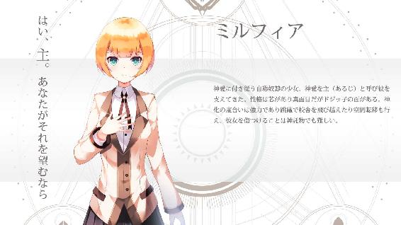
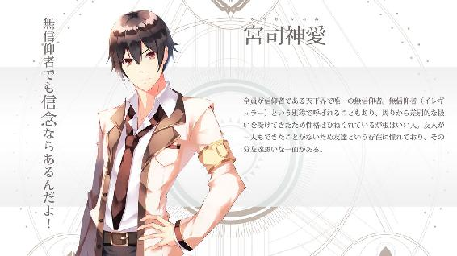
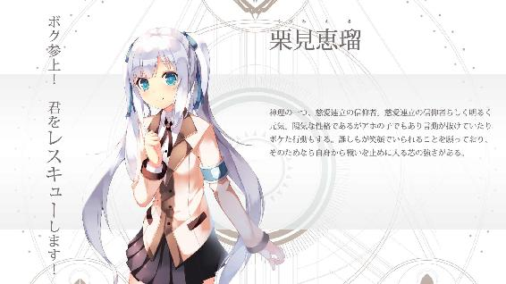
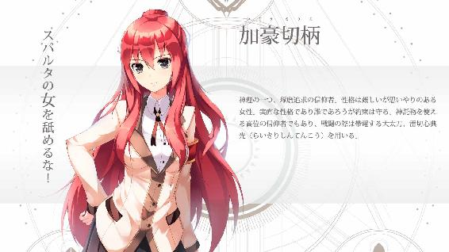
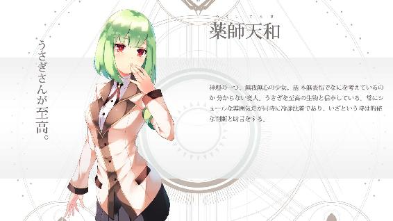
世界の敵が、泣いていた。
「うっ、うっく、うう！」
晴れた天気の下、すすり泣く男の子がいる。頭上に広がる青空に反し彼の様子はしくしくと雨模様だ。塀に囲まれた家の裏庭では壁が影になっており、固い地面の上で少年は独りぼっちでうずくまっている。
ここには彼以外誰もない。心は荒れて、涙をいくら流しても。それでも彼を慰めようとする人はいない。
なぜなら。
この世界に彼の味方はいない。ずっと一人で、彼はいつも泣いていた。
しかしこの時、俯いていた視界に足が映り込んだ。少年は顔を上げてみると、そこには知らない子供がいた。
「うわあ！」
同い年くらいの白いワンピースを着た女の子だ。目の前の少女は金色の短い髪をしており、丸みのある瞳や体型は人形のように可愛らしかった。
「き、君は誰!?」
会ったことも見たこともない少女だ。親戚か、近くに住んでいる子だろうか。少年は聞き、問いに少女はワンピースの裾を持ち上げ小さく頭を下げた。
「はじめまして、我が主。私のなまえはミルフィアといいます」
「あ、初めまして。僕は宮司神愛っていいます」
ミルフィアと名乗る少女につられて神愛も頭を下げる。なんとも礼儀正しい、というよりも大仰なあいさつに面食らってしまう。まるでお城の舞踏会で出会ったようだ。
「えっと、名前は分かったけど......。どうして僕の家にいるの？」
当然自分の家に知らない人がいればおかしい。やはり知らない親戚だろうか。それで神愛は聞いてみたのだが、しかし。
彼女の答えは驚きのものだった。
「私があなたの奴隷だからです、主」
「奴隷！？」
眉が曲がる。突然の奴隷宣言。この少女はなにを言っているんだ？
「えっと、どうして君は僕の奴隷なの？」
「あなたが、いにしえの王だからです」
「え？」
唖然となる。反対に微笑むミルフィアの頬は可愛らしい。しかし話はまったくかみ合わない。
「えっと、ちょっと待って。ん？ え！？」
考えてみたけど無駄だった。どういう意図で言っているのかさっぱり分からない。なにかの遊び？ いたずらか、もしくは罰ゲームか？ 神愛は誰か見ているんじゃないかと辺りを見渡してみたがここには二人以外誰もいない。
少女の言っていることは意味不明だが、しかしこれだけは確かに言える。
「ううん、僕はそんなんじゃないよ」
そんなことあってたまるか。そんな気分だ。
「いえ、宮司神愛。あなたこそが私が仕えるべき王なのです」
「そう言われても......」
真顔で言ったのだがミルフィアは否定する。かなりの強敵だ。神愛は肩を落としつつ、彼女の青い目を見た。
「どうしてぼくが、いにしえ？ の王様なの？」
「あなたが王だからです、わたしの主」
（いや、そうじゃなくて）
返ってくる答えが答えになっていない。
「僕が王様の理由を教えてよ」
「理由などありません。あなたは初めから王であり、わたしも初めからあなたの奴隷なのです」
そう言われてはお手上げだ。神愛は「はあ」と呟く。
それでも自分が王ではないのは確かなので、神愛は分かっていない少女を説得させようとする。だが、説明に移る前、嫌なことを思い出してしまい表情が暗くなった。
「僕は、そんなんじゃないよ。むしろ逆なんだ......」
神愛はつい先ほどまで泣いていた。その理由が胸を重くする。
「知ってる？ 僕たちが住んでいる世界とは別の世界に、三人の神様がいるんだって」
神愛は目線を空へと向けた。雲一つないきれいな青空だが、見たいのは空の景色ではない。さらにその先、
------天上界だった。
天上界。それはこの世界、この宇宙のさらに先にある神の居城、神々の世界だ。そこには三柱の神と呼ばれる三人の神がおり、人々が暮らす天下界に神が創ったルールを設けている。
「だから、みんなは神さまが作った教えを守って生きている。みんなは生まれる前に、三人の神さまから一人を選んで生まれてくるんだって」
神愛は説明する。それは天下界の常識、ここでのあり方だ。天下界にいる者はみな神の教えを信じ、信仰者と呼ばれている。天下界に生きる者は生まれた時から信仰者なのだ。
だが、神愛のその言い方は、まるで他人事のようだった。
「でも、僕はそうじゃないんだ。神さまなんか知らない。僕だけがそうなんだ。だから友達もいないし、いつもみんなから駄目な奴だって言われてる......」
神愛は落ち込み視線が空から地面に落ちる。自分の足元をじっと見つめ、悲しそうに目つきが細くなった。
無信仰者。それが神愛の泣いている原因だった。世界の敵。信仰者しかいない天下界で無信仰者など最大の異物だ。許される存在じゃない。
生まれてきたこと自体が誤りの、誰とも相容れない者だった。
「そんなことはありません」
だが、聞こえてきた言葉に顔が上がる。そこには自信に満ちた表情のミルフィアがおり、神愛の悲しみを励ましていた。
「主は偉大な王です。あなたに、出来ないことなどありません」
「で、でも......」
ミルフィアの言葉に困ってしまう。自分が王であるはずがないし、そもそも、神愛が置かれている立場は王どころか普通の人よりもひどいのに。
「ぼく......、いじめられてるんだ」
再び視線が下がる。自分がいじめられていること、誰にも相談したことがない。唯一の無信仰者に味方などいるはずもなく、故に神愛は一人で泣いていた。
しかし、ミルフィアは駆け足で近寄ってきた。
「主が？ そんな！ それはいつですか？」
「え？」
ミルフィアは神愛の手を両手で握ってきたのだ。女の子に触られるなんてことは初めてでドキリとしてしまう。
「その、ついさっき」
「なにをされたのですか？」
「石を投げられた」
「だれにですか？」
「近所のこどもたちに」
「どこでですか？」
「公園だけど」
「分かりました」
ミルフィアは目つきをキツくすると歩き出した。いったいどこに？ 果たしてなにをしに？
「殺してきます」
「ちょっと待ってぇえ！」
レッツ、ジャスティス！
やる気満々のミルフィアはキルゼムオールをしに公園と向かっていくが神愛は慌てて掴んだ。
「あの、殺すって、もちろん冗談だよね？」
本気ではないだろうが一応確認しておく。そもそも女の子がそう簡単に人を殺しにいくとは考えづらいし、やろうとしても不可能だろうし。そのため冗談だと信じてはいるが。
「本気です」
本気だった！
「で、でも！ どうやって殺すつもりなの？」
ミルフィアは神愛と同じ子供だ。殺そうと思って殺せるものではないはずだが。
神愛はいろいろ考えてしまうが、ミルフィアの答えはまったく違うものだった。
「首を百八十度回して殺します」
「どうやってぇえええ！？」
どんな方法だよとツッコみたくなるが、それよりも、神愛はミルフィアの真剣な眼差しを見た。
「ミルフィア、人を殺すなんて駄目だよ！」
「しかし......」
神愛は止めるがミルフィアは納得がいかないのか心配の目で見てくる。今後も神愛がいじめられるのではないか考えてくれているのだろう。
それは神愛も嬉しいが、それとこれでは話が違う。
「ミルフィア、僕のために頑張ろうとするのは嬉しいけど、でも、人を殺すなんてしちゃ駄目だよ。ぜったいだ」
神愛の言葉にミルフィアは意外そうな顔をした。だが、すぐに笑顔に変わると神愛の手から離れた。何をするかと思えば、その場に跪いたのだ。
「え、どうしたの？」
神愛の困惑した声にも動じることなく、ミルフィアは片膝を地面につける。
彼女の表情は満足そうで、初めての命令を達成できることを喜んでいるように。右手を左胸に当て、主と仰ぐ神愛へ言った。
「はい、わたしの主。あなたがそれを望むなら。わたしはあなたの奴隷。主が望むことならば、なんでもいたします」
初めて会った、しかも会ったばかりの少女が自分のために頭を下げている。大袈裟な言葉には動揺してしまうが、ミルフィアは本当に奴隷として振る舞ったのだ。
しかし、神愛は奴隷が欲しいとは思わなかった。むしろ罪悪感を覚えてしまう。
そこで、神愛は思い付いた。
「ね、ねえミルフィア！」
「はい、なんでしょうか主」
呼びかけにミルフィアが顔を上げる。
「奴隷じゃなくていいよ。その代りさ」
神愛は、この子ならずっと抱いていた願いを叶えてくれると思ったのだ。
「僕と、友達になってよ！」
神愛はずっと一人ぼっちだった。無信仰者の自分では友達になってくれる人は誰もいない。だから神愛は奴隷ではなく、一緒に遊べる友達が欲しかったのだ。ずっと一人きりで生きてきた人生を、誰かと共に歩けるなら。それが神愛にとって最も幸せなことだ。
ようやく友達ができる。神愛は笑顔で喜んだ。
しかし。
「それはなりません」
「え？」
聞こえてきた声に表情が凍る。彼女は今、なんと言った？
「主、あなたは偉大な王です。対して私はあなたの奴隷。ですので、友人にはなれません」
「なんで......」
当然友達になってくれると思っていただけに、その言葉は残酷だった。
友達ができる。ようやく、周りからいじめられ惨めな生活が変わる。それは神愛にとってついに訪れた希望だった。
「なんでも、願いをきいてくれるんだよね！？」
「はい、それが主の望みなら」
「本当だよね！？」
「本当です」
「じゃあ、友達になってよ！」
「なりません」
しかし答えは先ほどと同じ。神愛の瞳から光が退いていく。
「私はあなたの奴隷。ですので、友人にはなれません」
「そんな......」
今まで感じたこともないがっかりした気持ちが胸を重くする。
そんな神愛の心を知ってか知らずか、ミルフィアは再び口にする。決意を込めて。
「わたしの主。私はあなたの奴隷。わたしは永遠にあなたのしもべです。あなたが望むことならば、わたしはなんでもいたします」
「だからさあ......」
少女からの催促に、しかし神愛は願いを言わなかった。すでに無駄だと知っているから。
自分の願いは叶わない。なんでも言うことをきいてくれる少女が目の前にいながら、胸に抱くたった一つの願いが叶わない。
「僕は、友達が欲しいだけなのに......」
呟きは無情にも空と消えてしまう。頬を撫でる穏やかな風だけが神愛の心を宥めているようだった。
それから、数年の月日が流れた。
ここは白い空間だった。広い世界にはなにもない。まるで漂白された海中のようにあやふやだ。地面も空も、どっちが上下なのかも、それすら分からない。いや、そもそもこの場所にはそうした概念すらないのだろう。空間も、時間すらも。そうした概念を超越した次元の居場所。
ここにはなにもない。
ただし、一つの例外を除いて。
白い空間。そこに一人の、もとい一つの魂がやってきた。自分が何者かも分からぬ不確定な意識だ。なぜなら彼、もしくは彼女はまだ生まれていないのだから。
そこへ、突然魂を歓迎する声が現れた。
「ようこそいらっしゃいました。はじめまして。わたくしは人々が住まう世界、天下界の案内を務めさせていただいております、名もなき案内人にございます」
いきなりの声に魂は驚いた。意識がびくりと震える。そんな意識を落ち着かせるように、声は穏やかな口調で話しかけた。
「申し訳ありません、驚かせてしまいましたね。ですが緊張しなくても大丈夫です」
苦笑交じりに案内人は気さくに話しかけてくる。不安はあったが、どうやら悪い人ではなさそうだと魂は徐々に安心していった。
この声は何者か。そんなことは分からない。分かるはずもない。ただ、次元をいくつも超越した場所にいるのだ、ただ者ではないのだろう。
「突然のことに驚かれるでしょうが、実は、あなたはまだ生まれていないのです。魂の状態です。この世界には神が住まう天上界と、人々が住まう別の世界、天下界があります。そして、ここはその中間、輪廻界になります」
大丈夫ですか？ と案内人は優しく声を掛けてくれるが、魂は当然困惑してしまう。
「あなたはまだ魂の状態なのです。人として生まれるためには天下界に行かねばなりませんので、これから天下界へと移動してもらいます。ですが、あなたが人として生まれ祝福されるその前に、選んで欲しいものがあるのです。いえ、怖がるようなものではございません。選んでいただきたいものとは、あなたが天下界で生きていく際の『神理』、要は信仰になります」
人として生まれる前に選ぶもの。
神理。神の理と書くもの。それは果たしてどのようなものなのだろうか？
「輝かしい誕生を前にして言いにくいのですが、人生とは幸福ばかりではございません。ですが、人生の苦難に立たされた時、あなたの信仰が道を示してくれるでしょう。これは親や環境に左右されることなく、自分の意思でどの神理を信仰するか選択できる配慮なのです。あなたが選び、あなたが生き方を決めるのです」
何を信仰するか。それは生き方にとても影響してくる大事なことだ。習慣も、食事も、それは結婚まで関わってくるだろう。信仰に人生を左右されると言っても過言ではない。しかし、その大事なことを、親や環境によって決められてしまうこともある。その信仰を、生まれる前に決められるようだ。
「よろしいですか？ では、どのような神理があるのかご案内をさせていただきます。天上界には三柱の神がおり、選べる神理も三つとなっております」
案内人から今後の人生を決めるかもしれない、神理についての説明が始まった。
人生が始まる前の、最初の選択だ。
「第一の神理は、苦しんでいる者を皆が助ける思想。皆は一人のために。一人は皆のために。誰もが相手を助け思いやることで、苦しみはなくなり皆が幸せとなるでしょう」
それが第一の神理------慈愛連立。
「第二の神理は、己を鍛え強靭な肉体と精神を身に付けることにより、感じる苦痛を無くす思想。誰もが強き者となることで、苦しみはなくなり皆が幸せとなるでしょう」
それが第二の神理------琢磨追求。
「そして第三の神理が、己の内から苦痛を無くす思想。欲を捨て物事を達観することで、苦しみはなくなり皆が幸せとなるでしょう」
それが第三の神理------無我無心。
説明された三つの神理に魂は考える。
「これらが選べる三つの神理となります。あなたに合った神理はどれでしょうか。どれも方向性は違えど、きっと役に立ってくれるはずです」
重要な選択なだけに答えに迷うが、魂は決断したようだ。
「お決まりになりましたか？ 分かりました。それではこちらへどうぞ。これから天下界へと降りていただき、あなたの誕生となります。あなたの物語が始まるのです」
魂は導かれ引き寄せられていく。そして、まるで自身が落下していく感覚に襲われた。どこまで落ちていくのか分からないがそれはすぐに終わった。魂は肉体を得た実感と共に、誕生の産声を上げる。
「オギャア！ オギャー！」
こうして天下界にまた一つ、新たな命が生まれたのだった。
「それでは、いってらっしゃいませ。あなたの人生に幸多きことを」
人生の、始まりだ。
＊
天下界。それは三柱の神による信仰が根付く世界。人は生まれながらに神理を信仰し生きていく。故にここには仲間外れというものはなく、必ずや自分と同じ信仰で結ばれる仲間がいる。神が創った神理を信仰することが、天下界に生きる者にとって目的であり幸せだった------
「------で、あるから自身の信仰に精進しましょう、か」
俺は学校のパンフレットを読んでいた。書いてある内容は以前読んだ教科書と同じだ。どこもかしこも信仰を精進しましょうとかそんなんばっかり。
見飽きたわ。
「ハン」
俺は、パンフレットをビリビリに破いてその場に投げ捨てた。
「知るかんなもん、自分の生き方くらい自分で決めさせろよ」
俺は顔を上げる。そこにはこれから入学する神律学園の校舎があった。全寮制の学校で基本的に信仰別にクラス分けがされている学校だ。
そして、今日はその入学式だ。
「ここが今度の学校か......」
俺、宮司神愛は面倒くさそうに黒髪を掻いた。
高等学校にあたる神律学園の正門に立ち、視線の向こうにはレンガで塗装された道。その奥にはコンクリート製の白い校舎が立っている。続く道の両側にはトンネルのように桜が咲いていた。春の陽気に桃色の校門、ザ、入学式って感じだ。
しかしここには俺以外だれもいない。それにはある事情があるのだが、ようは入学式はもう始まっており俺はこの時間に来る決まりだったのだ。
新しい学校を今一度見上げる。正直に言うと憂鬱だ。帰りたい。
「どうしよ、ほんとに帰ろうかな」
「あ、あのッ」
そんな時だった。背後から声を掛けられた。誰だろう、女の声だ。
しかし姿が見当たらない。
顔を右に左に動かすがやはり見当たらない。気のせいだったか？
「あの、こっちですこっち！ 正面の下！」
下？
視線を下げる。するとずいぶん背の低い女の子が俺を見上げていた。小学生にも見える幼児体型で、白色の髪をツインテールにしてまとめている。二つの髪束は大きな耳のように垂れていた。
「どうしたんだ？ なにか用か？」
可愛らしい瞳は愛嬌があるがなんだか不安そうな表情だ。
「そ、その、もしかして、君も遅刻さん組ですか？」
白色の少女が聞いてくる。
「あ、えっとー」
「よかった〜。実は、ボクもなんですよぉ」
「違う、勝手に遅刻にすんな」
こちとら死ぬほど憂鬱な中ちゃんと目覚まし通りに起きてきたんだぞ。
「え、そうだったんですか？」
俺が言うと女の子は「うーん」と考え出し、思い付いたのか両手をポンと叩いた。
「じゃあ、教室が分からないとかですか？ それならお手伝いしますよ！」
「はい？」
いや、そうでもないんだけど。
気持ちは嬉しいが俺は初めからこの時間に来る決まりだったんだよ。それを誤解したのか女の子は照れた笑みに変わっている。
「いや、そんなんじゃないから。別にいいって」
「遠慮しなくても大丈夫ですよ」
「遠慮じゃねえよ！」
「いや〜、せっかく来たのに教室が分からないなんて。ププ、君もおっちょこちょいさんですね〜」
「あああッ！？」
おい、こいつなんかムカつくぞ！
そんな感じで俺は反論するが、彼女は笑顔で言ってきた。
「でも大丈夫です！ お手伝いするのがボクの信仰ですから！」
「信仰？」
瞬間、表情が固まった。
神律学園では制服と共に腕章を付けるのが義務になっている。そこには己の信仰を示す印が付いており、己を鍛える琢磨追求は赤のスペード。心を無にする無我無心は緑のクローバー。そして、目の前の少女の腕章には、
（こいつ、慈愛連立か）
人を助ける慈愛連立である白のハートが誇らしく垂れていた。
慈愛連立は困っている人を見かければ助ける神理だ。だから彼らは人を助けるし、それが分かっているからたいていの人は助けられる。
慈愛連立の彼女は人助けができるのが嬉しそうにはしゃいでいた。
「ですから遠慮しなくて大丈夫ですよ。ボク、頑張りますから！ えっと、あなたのお名前はなんですか？ あ、信仰が分かればクラスも分かりますよね！」
少女はにこにこと頬を持ち上げ俺の腕章を覗いてきた。
直後「え」と小さな声を零して、表情から笑みが退いていく。
それを見るのが辛かった。
俺も自分の腕章を見つめてみる。
俺の腕章。そこには、何も描かれていなかった。生まれた時から信仰を持つ天下界の人々に、無地というのはあり得ない。
しかし、違うんだ。天下界にはたった一人の例外がいる。
少女が恐る恐る俺を見てくる。表情は驚いているのか怖がっているのか、小さな口は震えていた。
「もしかして、宮司、神愛......？」
俺は答えない。気まずくて目も合わせられない。
そうしていると女の子は大声を出して逃げ出していった。
「あ、あの、ごめんなさいぃい！」
「おい！ 待てよ！」
「襲われるぅううう！」
「襲わねえよ！」
「殺されるぅううう！」
「殺さねえよ、おい！」
俺は呼び止めようとしたが彼女は猛ダッシュで校舎へと行ってしまった。伸ばした手が虚しい。正門前には俺だけが取り残されてしまった。
「......ちっ！」
舌打ちする。
「まったく、知ってたよ」
愚痴を地面に叩き付け、俺はその場を立ち去った。
その途中、脳裏に浮かんだ言葉があった。
------無信仰者。
「......くそ！」
忌々しさに唇を噛む。
学校の中へと入り自分の教室を探す。廊下を歩いていくが、この棟の一階には学習室と特別教室、そして一つの教室しかなかったのでクラスはすぐに見つかった。
教室扉の上に掲げられた札には一年一組の文字。その札を見る目がどうしても嫌そうに曲がってしまう。
というのも、神律学園のクラス分けは基本的に信仰別によってされるが、成績が優秀な者を集めた特別進学クラスというのがある。ここでは信仰の区別なく、何かしらに秀でている分野があれば誰でも入れる。それがここ一組だ。
まさか、そんな場所に俺が入ることになるとはな。
天下界の例外、唯一の無信仰者。
それが俺だ。蔑称としてイレギュラーなんて呼ばれたりもする。
全ての人間が信仰者である天下界においてそれはあり得ない存在だった。俺だってどうして自分が無信仰者なのか知らねえよ。でも、無信仰という事実がどうしようもなく世界で孤立する。入学式に出られなかったのも、式が混乱しかねない、という学校側の判断からだった。
「はあ、マジ憂鬱だ」
どうせ嫌な思いをするんだろうが、俺は仕方なく、せめてもの思いから教室の後ろから入室した。
中では説明会が始まるまで生徒が自由に過ごしていた。あちこちですでにグループができており、集まるメンバーには明確な共通点がある。
男子二人が腕相撲をしようと話し合っているのを、今も勉強に勤しむ女子が迷惑そうに抗議しているのは琢磨追求の者たち。
反対に初対面の初々しさを出し、緊張しながら挨拶を行なっているのは慈愛連立。
その二つを遠目に見ながら、落ち着いた様子で語り合っているのが無我無心。
皆が腕章を身に付けているため誰がどの信仰かは一目瞭然だ。
そして、印がない俺は無信仰者だと一発で分かるというわけだ。はあ、晒し者かよ。
俺は教室に入り自分の席を探す。見れば一番後ろにある窓際の席が空いていたのでそこに向かって歩き出した。
すると和気藹々としていた場の空気が変わる。入学式にはいなかった生徒が来れば当然か。だが、ざわざわとした話し声が聞こえ初め腕章を付けている左腕が特に視線を感じる。
俺は表情をしかめどかっと座った。こういう時は無視だ無視、それに限る。俺は机に頬杖を突き、周りを意識しないよう窓から青空を見上げていた。
しかし、声というのはどうしようもなく聞こえてくる。
「ねえ、あれって」「やっぱり！？」「おいおい、マジかよ」「どうしてあんな奴が特進に？」
「............」
ちっ。いちいち言うなよ、聞こえてるんだよ。
「腕章に印がない。本当に無信仰なんだわ」「なんで神理を信仰しないんだ？ 馬鹿か？」「理解出来ないな」
「............」
窓から空を眺めて時間を潰すつもりだったが、やめだ。俺は周りを見渡して、最初に目が合った奴のところまで近づいていった。
「さっきからなに見てんだ、俺とにらめっこでもしたいのか？」
それで相手はすぐに目を逸らした。
「ハッ、俺の勝ちだな」
自分の席に戻る。教室は一転して沈黙した。せっかくの入学式なのにお通夜みたいだ。でも気にしない、悪口が聞こえてくるよりマシだ。俺は不機嫌さを隠そうともせず座っていた。
「ん？」
すると沈黙を切り裂くように椅子を引きずる音が響いた。見れば女子の一人が立ち上がり俺の前まで近づいてくる。当然他の生徒の視線を集め、女子は俺の席の正面で立ち止まった。
最初に目に入ったのは赤い長髪だった。見下ろす黒の瞳には怖気づく気配はない。凛とした姿勢は武人のようで、袖やスカートから覗く四肢は引き締まっている。口は固く結ばれ露骨に敵視を飛ばしてきた。
良い雰囲気じゃない。ふと視線を彼女の左腕に向ければ、思った通り腕章は赤だった。
「なんだ、俺になんか用かよ」
「ええ。聞きたいことがあるの。もし違ったら悪いんだけど、てか違ったら違ったで思わせぶりな態度にムカつくけど」
澄んだ声だが口調はきつい。
「先に名乗っておくわ。私は加豪切柄。信仰は、腕章の通り琢磨追求よ」
「そうかい、初めまして」
「ええ、初めまして」
白々しい挨拶を交わす。
「それであなた、宮司神愛よね？」
「そうだよ。サインでも欲しいのか？」
「そういうのじゃないわ。ここに来たのは言いたいことがあるからよ」
目の前の女子、加豪は一度嘆息すると俺を見てきた。
「無信仰者だがなんだか知らないけど、その態度止めてくれない？」
「ほぉう」
加豪は鋭い目つきで見下ろしてきた。ああ、気持ちは分かるよ。でもちょっと待ってくれ。
「俺の態度を止めろだって？ 俺はてっきりお前らが俺を不機嫌にしてると思ってたんだが？ どいつもこいつもガン飛ばしやがて、そんなに俺とにらめっこしたいのか？ お前もその一人かよ？」
「仕方がないでしょう、無信仰者なんてのが同じ教室にいたら誰だって気になるわ」
「仕方がない？ ハッ。俺のことを無信仰者だと分かるなり逃げ出した奴がいたが、それも仕方がないか？」
「元はといえばあなたが無信仰者なのが悪いんでしょう。ここは天下界よ？ 神が実在するのにどうして信仰しないわけ？」
なるほど、そういうことか。そうだよな。目の前の女が言っているのはその通りだ。
たとえば牛を食べてはいけないという信仰があるとする。そんな人たちの前で牛を得意気に食っていたらどう思うだろうか。いい気はしないはずだ。敵視されても仕方がない。牛が神聖な生き物なら襲われたって不思議じゃないんだ。
無信仰者というのもいわばそういうもので、神理を信仰するのが当たり前の天下界でしないというのは、さっきのたとえでいう常に牛食ってる状態だ。メンチきられるはずだぜ。この言い寄ってきた女は俺から見れば鬱陶しいだけだが周りから見れば無信仰者を注意する優等生なんだろうな。
ほんと、生きづらい場所だ。
「あー、そうかよ。悪いのは全部無信仰のせいだって？ 全員からガン飛ばされるのも無信仰のせい。逃げ出されるのも無信仰のせい。おまけにお前が可愛くないのも無信仰のせいか？」
「言ってくれるじゃない」
「センキュ〜」
しばらくの間二人で睨み合う。
「まったく、無信仰者なんてろくな人間じゃないわ」
「はあ！？」
その一言に俺は勢いよく席を立った。
「ふざけんな、てめえらが勝手に俺を見て怖がってるだけだろうが、それがなんで俺のせいになるんだよ！？」
「そう。それもそうだけど、あんたの喧嘩腰と外見をバカにするのが原因だと私は思うけどね」
「いや、それはそういう意味じゃなかったんだが」
さきほど加豪を可愛くないとは言ったがそれは性格の話で、顔自体は美人の部類だと思う。鋭い目つきだが瞳は大きく鼻筋もスッと通っている。可愛いというよりもきれいだ。
って、俺が言いたいのはそういうことじゃなくて。
「だけど喧嘩売ってんのはてめえらの方だろう。いい加減にしろ、殴られてえのかお前は！？」
互いに熱が入っている。しかし加豪が急に静かになると、俺の胸を片手で押してきた。
「......へえ」
「うお！」
その力は圧倒的だった。耐える余裕すらない。俺は勢いよく吹き飛ばされた！
「があっ！」
背後のロッカーに激突する。この騒ぎに他の連中が慌て出すが、止めようとするのは一人もいなかった。
普通ならおかしい。女が男を吹き飛ばすなんて。それも片手だ。
しかし加豪はさも当然そうに立っていた。
「殴り倒すですって？ それ、本気で言ってるの？」
加豪はその場から動かず、苦しむ俺を苛立った目で見つめてくる。
「神理を信仰する者は神に近づく」
加豪が呟く。それは威張るでもなく、けれど厳しい表情だった。
「それは『神化』と呼ばれる。無信仰者のあんたでも知っているんでしょう？」
「ああ、知ってるよクソッタレ」
認めたくないが加豪の言う通りだ。それは俺も知っていた。
天下界には神理がある。そして神理とは神の教え。それは信仰すればするほど神に近づくということだ。神に近づけばそれだけ強くなれる。
おまけに、天下界にはもう一つの恩恵があった。
「殴る？ 無理ね、無信仰者じゃ。あんたは理解していないようだけど」
「ハッ、理解したら勝てるのかよ？」
「それもそうね。なら、敗北して学ぶといいわ」
「なに？」
そう言うと表情はそのままに加豪の視線が強くなった。今までとは明らかに意識が違う。
まさか？ そう思うが危機感が暴れ出す。まずい。直感がする！
加豪が言い出した。
「我は練磨を積み頂を目指す者。あなたに近づくために、どうか我が願い、我が神リュクルゴスよ叶えたまえ」
それは詠唱だった。天上の神々が一柱（ひとはしら）に己の祈りを捧げる言葉。
「嘘、すごい」「マジか！？」「これは......」
すると、今まで見ているだけだった生徒たちからどよめきが起こった。
「我が信仰、琢磨追求の祈りここに形を成す。我が神の威光よ、天地に轟き力を示さん」
今や加豪は注目の的だ。全ての視線を独占し、加豪はついに詠唱を言い終えた。
「神託物、招来」
右手を虚空に翳す。すると差し出された手の平に光が現れ、加豪は迷わず手に取った。
「雷切心典光！」
掴んだ光が弾けまばゆい輝きが広がる。光は消え、代わりに加豪が手にしていたもの。
それは、帯電する太刀だった。刀身だけでも彼女の胸元まである。赤い刀身にまっすぐな刃、柄も赤く放電される破裂音がバチバチとなっていた。
「これが私の信仰の形、神託物。神が認めた信者のみが手に出来る信仰の具現。これが出せる時点で信仰心が強大っていう証よ」
「すごい！」「うおおおー！」「初めて見た......」
突如出現する武器。それに周りは歓声を上げていた。
「ちょっと待てぇええええ！」
「なによ？」
が、俺は叫んだ。だってそうだろう！？
「おい」
「なに」
加豪は平然としている。そんな態度がさらにムカつく。
「どういうことだこれは？」
「だからなに、はっきり言いなさいよ」
「ならはっきり言ってやる！ そんなもん取り出して犯罪じゃねえのかよ！」
俺は指を突きつけた。加豪の手には何度も言うが刀が握られている。どう見ても凶器だろうが！
「分かってないわね。これは確かに刀だけど、それ以前に神託物。神からの贈り物よ？ それを取り締まる法があると思ってるの？ 所持だけなら罪にはならないわ」
「なんだそれはぁ！？」
ふさけんな！ インチキも大概にしろよおい！
「そんなのありかよ！？」
「あんたこそ何十世紀も前のこと言ってんのよ。こんなことでいちいち怒鳴ってばかり。無信仰者って言うのは噂通り野蛮なのね」
「刃物取り出す女に言われたくねえんだよ！」
忌々しい。偉そうに言いやがって、だから信仰者は気に入らない。
「神託物は強大な信仰心を持つ証明。神託物っていうのは尊いものなの。でも、あんたじゃこの価値が分からないんでしょうね」
精悍としていた加豪の顔がまた侮蔑の表情に変わる。見下す者特有の、嫌な目つきだ。
「出来損ないの無信仰者」
「くっ」
そう言って加豪は刃先を向けてきた。目の前にまで迫る刃に声が漏れる。
男女の違いがあっても神化によって力はむこうが上。さらに神託物まで加豪にはある。
加豪が言ってくる。無信仰者は駄目なやつだと。
でもそれは加豪だけじゃない。周りの連中だって同じだった。
「ねえ、止めなくていいの？」「だって相手はあの神愛でしょ？」
慈愛連立からは見捨てられ、
「やっちまえ！ 無信仰者なんて神への冒涜だ、叩き潰せ！」
琢磨追求からは罵声を浴びせられ、
「どうする？」「放っとけ、知ったことか」
無我無心は気にもしない。
全員が、無信仰というだけで増悪していた。
「ふざけんじゃねえええええええ！」
俺は怒鳴った。叫んだ。この理不尽さに。
おかしいだろう！ どうして、なぜ無信仰者として生まれてきただけで憎まれなければならない？ 嫌われなければならない？ 俺がなにかしたか？
俺の怒鳴り声に周りは黙り込むが、それでも冷たい視線は変わらなかった。
悔しかった。俺は両手を痛いくらいに握り締めた。怒りが全身を巡るのに、力の前になにも出来ない。それが悔しくて、悔しくて堪らない！
天下界。ここに、無信仰者の居場所なんてないッ。
「くそ！」
俺は、生きてちゃダメなのかよ！？
その時だった。
「そこまでです。我が主を害するならば、私が相手になりましょう」
突如として異変が起こる。俺たちの間に突然人が現れたのだ。
そこにいたのは金髪の少女。純白のワンピースに身を包み、ひらひらとした裾とショートカットに切り揃えられた髪が揺れている。加豪の刀を前にしても少女は気丈に正面を向けていた。
そんな彼女を、俺は知っている。
「ミルフィア！」
俺の呼び声に、目の前の少女は半身だけ振り返った。
「ご無事ですか、主？」
振り返る少女は柔らかい目で、俺を見つめ返してくれた。
ミルフィア。小柄な体型は華奢だが人形のような優雅さがある。青い瞳は丸みのある形をしていて、小顔に収まるパーツはどれもが一級品の美形しかない。
ミルフィアは、この場で唯一親愛が籠った声を送ってくれた。
「え、ええ？」
ミルフィアを前に加豪がたじろいでいる。ミルフィアを見つめ疑問符が顔からいくつも出ていた。
「え、てか、今どこから！？」
今の今まで、間違いなくミルフィアは教室にいなかった。突如として現れたミルフィアにクラスの連中も驚いている。
「突然出て来て、しかも主って。まさか......」
なにもない場所から登場したミルフィアはまるで先ほど加豪が行った再演のようだ。それで答えを思い付いたのか、加豪は叫んだ。
「あなた、神愛の神託物！？」
『えええええええ！』
加豪の答えに皆が大声を上げる。雷のような衝撃が教室を駆け回った。
「嘘。いやまさか......。でもッ」
言った加豪本人でさえ戸惑っている。そりゃそうだ、そもそも神託物とは神からの贈り物。無信仰者が得られるものじゃない。また、人の神託物なんて俺だって聞いたことがない。
ミルフィアは俺に向けていた微笑みを消し加豪に向き直った。それで困惑していた加豪も鋭くなっていく。
「あんた、私とやるつもり？」
「はい。我が主を守るのが私の務め。あなたが主に危害を与える以上、排除します」
「そう。なら琢磨追求の信者として受けて立つわ」
そう言って加豪は神託物を消す仕草を見せた。互いに女、素手で戦うつもりだ。
「構いません」
「なんですって？」
しかし、ミルフィアの発した言葉に加豪の手が止まった。
「全力でどうぞ。でなければ、敗北した時悔いが残るでしょう。それでは意味がない。敗北を知るのはあなたです」
ミルフィアに動揺はない。真剣の刀、しかも雷を纏った武器だ。
「おいミルフィア。危険過ぎる、止めるんだ！」
相手が悪い。俺は心配から声をかけた。
「主は下がっていてください、すぐに終わらせます」
「ザコは引っ込んでなさい！」
「んだとコノヤロー！」
誰がザコだオラァ！？
再びミルフィアと加豪が対峙する。
加豪は怒りを露わにしながらゆっくりと刀を構える。荒々しい怒気を感じるが、構えと共に静かな戦意へと変えていく。
正眼の構え。右足を前に出し、気と刀が一致し真の剣となる。
強い。集中するその姿勢だけで戦い慣れていると分かる。
対してミルフィアの気配も静かに高まっていく。戦いの雰囲気となり戦闘態勢となっていく。
見ている俺の方が緊張する。それだけに二人の空気は真剣なものだった。
一拍の間。その瞬間、加豪が駆けた。
「終わりよ！」
それは疾風というべき突撃だった。一足一刀の間合い、それを余りある距離を瞬時に移動するのは神化の力だ。人体を超えた跳躍と同時に刀は袈裟切りに振り下ろされる。
稲妻を纏い、雷鳴が轟いた。
まずい！ 心配に心臓が跳ねる。
「安心してください、主」
その瞬間、聞こえるはずのない声がした。
攻と防が重なる直後、響いたのは加豪の驚愕だった。
「そんな！？」
ミルフィアは傷一つ負っていない。加豪が前方に展開していた雷撃を素手で掻き消し、両手で刀を受け止めていたのだ！
「すごい！」
素直に感心する。あれほどの電撃を素手で掻き消し、さらに刀を受け止めるなんて。
二人は鍔迫り合いのようにしてもみ合っている。
「峰打ちですね」
「ちっ！」
ミルフィアの指摘に加豪が顰める。見れば加豪の刀は峰打ちだった。
「だからなんだって。これで十分よ！」
加豪がミルフィアを突き放す。距離が開けたことに再び斬撃を振るう。
迫る刃に対し、ミルフィアはその場を跳んだ。さらに机を足場に移動していく。生徒は全員壁際にまで退避しているのでミルフィアは空席を縦横無尽に走り回っていた。
「速い！」
ミルフィアの速度は電光石火を思わせる。俺なんか目で追うのがやっとだ。加豪にしてもそう。あれだけ大きな得物では室内を動き回るのには不向きだ。真似なんか出来るはずがない。足場の悪い教室で神託物を振るうもミルフィアは颯爽と躱していく。
加豪が振るった一瞬の隙を突き、ミルフィアは地面を蹴った。刀よりもさらに近い近接格闘の間合いに入り、加速したまま、
「ハッ！」
放つのは掌底の一撃。加豪は神託物、雷切心典光の柄で防ぐものの吹き飛ばされ背後の黒板に衝突した。
「くぅ！」
加豪は背中からぶつかり苦悶の表情だ。けれどすぐに立ち上がり、真っ直ぐな眼差しをミルフィアに向けてきた。
「なるほど。強いわね」
口調は静かだった。嵐の前を思わせる、それは危険な静寂だった。
「でも、私は負けない、負けられない！ 強さを目指す琢磨追求の信仰者が、負けてなるものか！」
静けさはすぐに反転し加豪は激を飛ばす。主人の気概に連動するように雷切心典光も吠える。今までの比じゃない。こいつ、今までのでさえ手加減だったのか？
加豪は構え、ミルフィアも構えた。踏み込みは同時、距離は瞬く間に消失し、両者の攻撃が交わる、
その、時だった。
「おや、何事ですかこれは」
二人の間に男が割り込んだのだ。白の法衣に身を包んだ三十代ほどの男。
男は加豪が振り下ろした両手を右手で掴むとひねり、重心をずらされたことにより加豪は勢いのまま転倒した。
さらに左手でミルフィアもつかみ、同じくひねって転倒させていた。
突然の闖入者に二人は成す術もなく床に横になる。
立っているのは男だけ。神父が着る服装と同じで、腕章は慈愛連立。くせっけのある黒髪と細身の体躯で、男は顔を横に振っていた。
「いえ、おおよその見当は付くのですがね。まったく、新学期早々問題ですか。やれやれ、これから一年楽しくなりそうですよ」
男は顔面を顰めるが、その後気を取り直してから微笑に変えた。
「お二人とも大丈夫ですか？ そんなに強く倒してはいないはずですが痛むようでしたら手を貸しましょう。ああ、加豪さんは琢磨追求でしたね。でしたらこれくらい慣れっこでしょうか」
男は笑っているが加豪は悔しそうに黙ったまま立ち上がる。
「ミルフィア、大丈夫か！？」
「はい、大丈夫です主」
すぐにミルフィアに駆け寄る。ミルフィアも怪我はないようで自力で起き上がっていた。
この事態に当然他の生徒からはざわざわと話し声が漏れている。
「皆さん、戸惑うお気持ちは分かりますがまずはお静かにしてください。私はここのクラスを担任することになった、ヨハネ・ブルストと申します。神律学園特別進学クラスへの御入学おめでとうございます、......と挨拶を続けたいところですが、そうもいかないようですね」
見ればヨハネという男は苦笑するも、笑みを崩すことはしなかった。
「お二人ともも収めなさい。特に加豪さん、神託物を見せたい気持ちは分かりますが、そう軽々に出すものではありませんよ。神の恩寵を日用品にでも失墜させるおつもりですか？」
「いえ、私はそんな......」
「では、すぐに収めなさい。それと、この場で言っても説得力は酔漢にも劣るでしょうが、立派な神託物でしたよ。今後も自身の信仰に精進なさい」
「はい、ありがとうございます......」
加豪は反省の色を浮かべ神託物を消した。出現時同様、雷刃は空へと消える。ヨハネから一応褒められるが表情は落ち込んでいた。
「それで宮司さん」
「ん？」
落ち込む加豪をやれやれと、けれど温かい眼差しで見つめた後ヨハネが俺に振り返る。
「怪我をしているようですね。大事ではないようですが念のために保健室へと行きましょう」
「別に、なんでもねえよこれくらい......」
俺は顔を逸らし提案を跳ね除ける。どうやらロッカーとぶつかった際に頬を切っていたらしい。
「いえ、これは教師としての命令です。保健室への場所は分かりかねるでしょうから私が同行します。他の人たちは私が戻るまで待機していて下さい。それと」
ヨハネは俺から視線をミルフィアへと向けた。
「あなたも、ご同行願えますかな」
「はい、そのつもりです」
乗り気はしないが、ここにいても居心地が悪いだけだし他に行く宛もない。足取りは重いがここよりはマシだ。
収まらない苛立ちと不満を表情に浮かべつつ、俺は教室から出て行った。
＊
「痛っ！」
保健室には俺とヨハネ、そしてミルフィアの三人がおり、新学期初日とあって保健室の先生は不在だった。机のある椅子にはヨハネが座り、対面する患者用の丸椅子二つに俺とミルフィアが腰かけている。
切り傷に消毒液で濡らしたガーゼを当てられる。沁みる痛みに顔を引き離そうとするが、ヨハネは笑顔で許さなかった。
「これこれ、逃げないでください。しっかり消毒しておかないと。雑菌でも入って腫れたらどうするのですか」
「もう十分だよ」
どうもこの男は笑っているのが普通らしく、俺は反抗的な態度で言うんだがヨハネはそよ風のように受け流しご満悦だ。そんな俺たちの様子をミルフィアは黙って見守っている。
「よし、これでいいですかね」
切り傷の上にガーゼを当てテープで固定される。無事に終えたことにヨハネは満足気に頷いた。
「いやー、やはり人のために働くのは気分がいい。相手が返してくれる笑顔と感謝は、まるで自分のことのように嬉しい気持ちにしてくれる」
「笑ってねえよ！ 感謝も一言たりとも言ってねえし！ 傷口にグリグリ押しつけやがって、下手ならやるなよ痛ってえな」
「すみませんすみません。まあ、そう怒らないでください。あなたを手当てしたかったという私の気持ちだけでも、汲んでもらえませんかねえ、宮司さん」
「ちっ」
そりゃ人を助けようとする気持ちは高尚だろうよ。だが実害があったら余計なお世話だ！ あー、いた。
「手当が終わったならもう帰るぜ」
俺はカーゼの上から傷を擦りつつ席を立った。用は終わったんだしここにいる理由はない。
「ああ、待って下さい。とりあえず座り直して」
とするのだが、帰ろうとする俺を慌ててヨハネが呼び止めた。いったいなんだよと向き直るがヨハネは椅子を手で叩くだけだ。面倒臭い。そんな目で見下ろすが嫌な顔一つしない。
「......分かったよ」
俺は嫌々だが再び席に座る。そんな俺にヨハネは「ありがとうございます」と言ってから話を始めた。
「それにしても、入学初日から喧嘩ですか。遅かれ早かれ問題は起きるとは思っていましたが、まさか出会う前からとは。驚きましたよ」
「自己紹介の手間が省けて良かっただろ？」
「仕事が増えるのは止めて欲しいのですが......」
ヨハネが苦笑しながら頭を掻いている。きっと不良生徒にやれやれと思っているんだろう。
しかし普通の教師なら説教をしそうなものだが、ヨハネは引きつっていた頬を元に戻すだけだった。
「喧嘩はもちろんしてはいけないことです。教師としても、起こったならば止めねばなりません。何事も仲が良いのが一番です。ですが、まあ、仕方がない喧嘩、というのもありますか」
声は穏やかで責める素振りは見られない。喧嘩すらもいいことのようにヨハネは明るく口にしていた。
「特に、青春には付き物ですからね」
「そんな爽やかなものじゃねえよ」
ヨハネの言葉に俺は視線を逸らした。青春ドラマみたいな理由じゃないんだ、他の連中と一緒にして欲しくない。
「あははは......、そうですね、申し訳ない。確かにそうだ。ただ、もし喧嘩の理由が神理の違いからでしたら、私にも経験がありますので少しは宮司さんの思いが分かるかもしれません」
「神理の違い？」
「はい、そうです」
ヨハネは困ったように肩を下げ弱気な笑みをしていた。
喧嘩の理由。おおざっぱに表せば神理の違い、ではあるか。俺と目の前の男では当然事情は違うが。だが、俺みたいな無信仰者と信仰者ならともかく、信仰者同士でも喧嘩をするのか？
人間なんだから喧嘩くらいするだろう。でも、俺にはそれが意外というか、新鮮だった。
神理を信仰してる連中は、少なくともそうすることで幸せになれるから信仰してるんだろ？ なのに信仰者同士でも争うことがある？
「この時期になりますとね、私はまだ自分が新米だった頃を思い出しますよ。皆さんと同じ、教師としての一年生です。ですが、いやー、あまりいい思い出とは呼べませんねえ」
「あんたも喧嘩したのか？」
「喧嘩といいますか、失敗ですね」
ヨハネは当時の自分を思い出しているのか、残念そうに消沈し、もしくは困ったように眉を下げていた。
「私が教師として働いてまだ日が浅い頃でした。初めは副担任、ということで職務をこなしていたのですが、廊下を歩いているとですね？ 頬を押さえて座っている男の子がいたんですよ。どうやら喧嘩でもしたのか殴られたようでして」
ヨハネの話にいつしか惹かれ俺は体を正面に向けていた。信仰者の事情なんてそうそう聞けることじゃない。
しかし、聴いてみればこの話。無信仰の俺でも察しが付くぜ。
ヨハネの腕章を見れば分かるがこの男は慈愛連立だ。そして慈愛連立は人助けを掲げている神理。だから相手がたとえ赤の他人でも助けにいく人がほとんどだ。そのため慈愛連立には社交的であったり優しかったりする人が多い。まあ、さすがに無信仰者なんて究極の異端助ける奴はいないが。
ヨハネも慈愛連立の信仰者だから、ここで男子生徒を助けるのは不思議じゃない。
「彼が傷ついていましたから。私は慈愛連立の教えに従い手を差し伸べたわけですよ」
「やっぱりか」
「優しいでしょ私？ えらいでしょ私？」
「押し付けがましく言うなよ」
「人助けっていうのは立派な行いだと思うんですよ」
「はいはい、分かったから」
「立派でしょ私？」
「次いけよ！」
なんだこいつ！？
「ですが、彼は琢磨追求の子だったんですよ」
「ん？」
それがなにか問題なのか？ 俺は分からず小首を傾げる。
「私は善意で接しただけなのに、彼は怒りの形相を露わにしてですよ？ 『琢磨追求の者に情けなど不要！ 僕のことを馬鹿にしているんですか先生！』と拒絶されたんですよ〜」
「あー......」
なるほど。納得すると同時に同情する。
琢磨追求という神理は己を鍛える神理だ。そのため自分に厳しい、また他人にも厳しい人が多い。また、強さを求める神理だからか、他者から助けられる、というのは嬉しいというよりも恥、見下されていると感じるんだろう。
「そんな気はなかったとはいえ、これも神理の違いですからねえ。仕方がないと受け入れ謝ったんですよ私。助けようとしただけなのに」
ヨハネはこれ見よがしに肩を落とす。神理の違いから生まれる食い違い。仕方がないのは仕方がないが、とはいえ不幸だ。だが話は終わりじゃなかった。
「そしたら後日、彼の母親が職員室にやって来てですよ？ 『ヨハネという教師はどこですか！？ 私の息子を甘やかさないでください、軟弱者になったらどうするんですか！？』と怒鳴って来たわけですよ。もうねえ、私、心中でえ〜と思いながらも平謝りしたわけですよ。その後先輩教師であり担当の先生にその件を相談したんですがね、彼は無我無心の信仰者だったんです。まだ若輩で経験の浅い私に向かって、『何事も経験だ。俺に頼るな』って、無表情で！ 無関心に！ そう言うんですよぉ〜？」
「まー、そうなるわな」
泣き面に蜂とはこういうことを言うんだろうな。てか、あんたも運悪いな。
無我無心は心を無にすることを目指す神理だ。感情も表に出さないし、何事にも平常心を保とうとする。そうやって苦しいと感じる心を消そうとするためか、奴らは他人の痛みにも希薄になりがちだ。大人しくて消極的、というのが無我無心の典型的な人物像だろう。
連続して災難を経験したヨハネとしてはいろいろ思うところがあるようで、身体が前に傾いている。
「そりゃ経験は大事ですしごもっともだと思いますよ。ですがね？ 教師という役職の身、指導する者が指導しないなんて怠慢の正当化ですよね！？ あなたもそう思いますでしょう宮司さん！？」
「ま、まあ」
「ですよねえええ！」
すると急に手を握ってきた。ちょ、お前なに握ってんだ！
「やはり宮司さんは素晴らしい人だ。私の痛みに、きっとあなたは理解を示して下さると信じていましたよ。私かわいそうでしょ？ もうあの時は途方に暮れて涙ちょちょ切れましたよお〜」
「は、ははは......」
ちょっと待て、なんで俺が慰める形になってんだ？ お前が教師だろうが。
するとヨハネはいきなり泣き顔から笑顔へと変わった。
「やはり、あなたは怒っているよりも、笑っている時の方が素敵ですよ？」
「！？」
ヨハネはニッコリと笑いそう言った。慌てて手を振り解く。
「べ、別にッ！」
「おやおや、照れてしまいましたか。ですが、私はそう思いますよ」
しまった。ヨハネは俺から笑顔を引きずり出すためにわざと自分の失敗談を話したんだ。愛想笑いとはいえ笑顔を見られたこと。それが無性に悔しいというか、恥ずかしい。あーくそ！
そんな俺とは反対に、ヨハネは笑顔のまま声は穏やかだった。
「誰しも、笑っている時が一番です。宮司さん。それはあなたもだと私は思っています。そして、それが許されない、ということはあってはならない。私はあなたにも笑って過ごして欲しいですし、それが出来ると思っています」
それから数秒の間を置いて、ヨハネは聞いてきた。
「教室の皆とは、馴染めないですか？」
「......フン」
ヨハネからの問いに俺は答えない。答えは出すまでもないと、鼻を鳴らした後は黙り込む。そんな俺の態度にヨハネは困ったように苦笑した。その後、真剣な面持ちに変わる。
「宮司さん。確かにあなたは無信仰者かもしれない。そして、周りは信仰者ばかりです。ですが、私は思うのです。そんなあなたでも笑って過ごして欲しいと。実は、あなたを特別進学クラスに編入したのは私の提案でしてね。一つの信仰に縛られるのではなく、多くの人と知り合えるこのクラスなら、あるいは変われると思ったのです。自分一人だと決めつけず、友人ができれば人生が今とは違って見えるでしょう。私はそう、強く思います」
ヨハネは祈るように願いを口にする。会ってまだ間もない男だが、ヨハネが本心でそう言っていることはなんとなくだが分かった。
だが、俺は知っている。
誰もが恐れていること。嫌な物を見る目を向け、神を信仰しない不届き者だと中傷してくる。
記憶を探れば、反吐が出る思い出ばかりだ。
「あんたが、俺の何を知ってる？」
胸の中で沈殿していた怨念が、ゆっくりと顔を上げてくる。
「......いえ、私には思いも付きません」
「なら勝手言うなよ」
自分でも分かるほど、俺の言葉は冷たい針のようだった。
「仲良くなる？」
怒気が上昇していく。苛立ちが弾けた。
「俺を敵視しているのは周りの連中だろうが！ 仲良くなるだあ？ なりたいんなら変わるのはあいつらの方だ。俺を怖がって内心では馬鹿にしてやがる、そんな奴らと仲良くなんてしてられるか！」
怒りのあまり声が荒げる。体が前に出てヨハネに叫んだ。内容は決めつけだが、俺を咎める資格なんて誰にもない。
それを聞いて、ヨハネは寂しそうに顔を暗くした。
「すみません。どうやら私が急ぎ過ぎてしまったようです。押し付けがましく、申し訳ありません」
「............ん」
それで、俺も怒鳴るのを止めた。収まらない怒りはあったが、この男が優しさで俺を心配してくれたのは分かるんだ。ただ、納得出来なかっただけで......。
沈黙ができた。途端に空気が重くなる。丸椅子がギシリと軋み、顔を下げた。ふとミルフィアに視線を向けてみても、彼女は不動のまま動く気配を見せない。
気まずい空気だ。そう思っていると恐る恐るといった様子でヨハネから声が聞こえてきた。
「宮司さん。大きなお世話だというのは重々承知しています。ですが、私は慈愛連立の信者です。困っている人を見かけたら、助けてあげるのが私の信仰なのです。どうか最後にもう一度だけ、おせっかいをさせてはいただけませんか？」
俺はゆっくりと顔を上げる。視線の先では、ヨハネが真っ直ぐ俺を見つめていた。
「答えは求めません。宮司さんは黙って聞いているだけで結構ですし、聞き入れなくても大丈夫です。ただ、私は伝えておくことだけはしておきたいのです。私に信仰を行なえる機会を、与えてはもらえませんか？」
ヨハネはお願いしてきた。人助けをするのは自分なのに。本来ならば立場は逆なのに。
おかしなやつだと思う。お人好しにもほどがあるってもんだ。
ただ、そこまでして頼むのを、拒もうとはさすがに思わなかった。
「......ああ、好きにしなよ。ただ俺の気持ちは変わらないぜ？」
「はい、ありがとうございます」
返事にヨハネはパッと表情が明るくなる。まるで自分が救われたような反応がなんだかおかしくて、ついフッと笑ってしまった。
「それでですね、宮司さん。さきほど神理の違いによる私の失敗談をお話したわけなんですが、信仰者にはそれぞれ付き合い方みたいなのがありましてね。こうすれば仲良くなれる、とは一概に言えないのです。それは信仰者でも、無信仰者でも同じことです」
それは話を聞いていたから分かる。強いて言えば同じ神理を信仰している者同士なら仲良くなれるんだろうが。だが、それだけに無信仰者の俺じゃ誰かと仲良くなるのは難しいって意味でもある。
だが、ここでヨハネは意外な言葉を口にした。
「ですが、そんな三つの信仰者の誰とでも付き合え、かつ、あなたにも出来る、一つの思想があります」
「思想？」
ヨハネの言葉は意外だった。誰とでも付き合えるだけでなく、無信仰者の俺でも出来ることがあるって？
「はい。琢磨追求でも慈愛連立でもなく、無我無心でもない。無信仰でも行えるものです」
ヨハネの笑顔は嘘を言っているようには見えない。
「それは......？」
気づけば、俺の口は勝手に聞いていた。
「はい、それが」
問いにヨハネが答える。それは------
「黄金律と呼ばれるものです。知っていますか？」
「いや、初耳だ」
黄金律。聞いたことがない。一体どういうものか、考えてみるが見当も付かない。
「黄金律とはまだ神がいなかった時代、哲学や教訓などを考えていた時に唱えられた一つの教えです。内容自体はとても簡単なものですよ。守るべきことは二点だけです」
ヨハネは人差し指と中指を立て、二つであることを強調する。
「いいですか？ 黄金律の教えは、自分がされて嬉しいことは人にもしてあげる。自分がされて嫌なことは人にもしない。これだけです」
ね、簡単でしょう？ と最後に付け加えて、ヨハネは笑った。
「え、それだけ？」
だが、どんなことだろうと身構えていた俺としては拍子抜けだった。
「ええ。これが黄金律と呼ばれる教えです。あ、さては信用していませんね？」
冗談のように笑うヨハネを依然怪しそうに見つめるが、ヨハネは自信があるのかたじろぐことはしなかった。
「神のいなかった時代には、かつて多くの哲学や思想がありましたが、それらの共通点であったのがこの黄金律なのです。どのような教義にも当て嵌まる、普遍的であり本質的な思想と言えるでしょう。少なくとも、これが守れている限り人から悪い印象は持たれないはずです。どうでしょうか宮司さん、参考になりましたか？」
笑顔で聞いてくる言葉は俺を案ずる一心だけのように思える。笑みは純真な輝きを放ち、穏やかな声には安心感がある。
仲間のいない無信仰者だからこそ、普遍的な価値観である黄金律。理に適った話ではあるし、仲間外れでも共有出来る唯一の術かもしれない。
俺は黙り込んで考えるが、ややあってから答えた。
「まあ、覚えておくよ」
「はい、覚えていただければそれで結構です」
ヨハネは笑顔で受け止めるとそれ以上勧めてこなかった。自主性の尊重か、選択はあくまでも俺に委ね無理強いはしてこない。
「それと申し訳ないのですが、最後に教師として一つ確認だけさせてください」
ヨハネはそう言うと視線を俺ではなく、隣に座っていたミルフィアに向けていた。
「失礼ですが、あなたがミルフィアさんですか？ 事情は知っています。ここの生徒ではないですが、出入りの許可は出ていると」
「はい、そうです」
そこで今まで会話には参加していなかったミルフィアが初めて喋った。背筋を伸ばし膝に両手を置く姿は優等生を絵に描いたようだ。
表情は精悍で、棘はないものの機械的な話し方には親しくする意思は見られない。だが、ヨハネは気にしていないようだった。
「そうですか、分かりました。それだけは確認しておきたかったものですから」
ミルフィアに向けニコっと笑った後、ヨハネは気配を引き締め俺に向き直った。
「宮司さん、教室での出来事は申し訳ありませんでした。私の落ち度です。私なりにもっと努力しなければ」
「な、なんだよ改まって」
いきなり真剣になるんじゃねえよ、変なカンジになるだろうが。
「いやなに、それだけですよ。ただの反省と宣誓です。私は諦めませんから、宮司さんからもなにかあればなんでも話してくださいね、いつでも相談に乗りますから」
そう言うとヨハネは俺にも微笑んだ。けれど、俺は咄嗟に顔を背けてしまう。諦めない。その言葉が重い。
だって、出来るはずがないんだ。どう頑張ったって無信仰者を怖がる奴はいる。変わるはずがない。
ただ、そう思う表情を見せたくなかった。
それで話は終わったらしく、ヨハネは救急箱を片付けると立ち上がった。
「私からは以上です。長いこと引き留めてしまい申し訳ありません。では、教室に戻るとしましょうか」
「............」
ヨハネから教室へ戻るよう促される。だが、さきほどの喧嘩とクラスの反応は今でも覚えている。正直、まだ教室に戻るには足が重かった。
「......分かりました。宮司さんたちは後ほど。ですが、ちゃんと教室に顔は出してくださいね？」
「分かった」
短く返事だけ行い、ヨハネは保健室から出て行った。扉が閉められミルフィアと二人きりとなる。
「ふぅ〜」
力が抜ける。と、ふいに隣が気になり視線を向けてみた。
ミルフィアは黙ったままじっと座っている。美しい横顔がそこにあり、気になっただけのつもりがつい見つめてしまった。
ミルフィアはきれいだ。ずっと一緒にいるけれど、彼女の顔を見飽きたということはない。
「どうかされましたか、主？」
やばっ！
「い、いや。別に！」
咄嗟に顔を背ける。変に思われたかと焦ったが、ミルフィアの大きな瞳は優しく細められ小さな口元は持ち上がっていた。
俺を主と呼び付き従う、自称奴隷の少女。俺でもミルフィアの素性は知らない。どうして消えたり現れたり自分を主と呼ぶのか。聞いても前者は「出来るからです」としか答えず、後者は「あなたが王だからです」と要領を得ない答えばかりが返ってくる。
「なあ、ミルフィア」
「はい、なんでしょうか主」
それで何の気なしに、俺は隣に座るミルフィアに聞いてみた。
「お前は一体、何者なんだ？」
質問に、ミルフィアは小さく笑う。
「私は、あなたの奴隷です。主」
「......そうだったな、今思い出したよ」
やっぱりこれか。ああ、分かってたよ。聞いてみただけだ。
不思議な少女だ。でも、俺にとってミルフィアは誰よりも大切な存在だった。
ずっと一人の人生だった。なにをしても無信仰者として孤独な時間を過ごしてきた。敵だらけで、助けてくれる人なんて誰もいなかったんだ。
そんな中、ミルフィアだけが俺の傍にいてくれた。
きれいで、優しくて、唯一俺の味方でいてくれたミルフィア。お前は誰よりも大切な存在だ。
だけど。
だからこそ思うんだ。
せめてお前だけは、俺とは違って幸せになってくれって。お前だけでもさ。
「そうだミルフィア。さっきはありがとうな、庇ってくれて」
「いえ、あれくらいのことは。もったいなきお言葉です、我が主」
俺がお礼を言ってもミルフィアは小さくお辞儀をするだけ。そうした仕草を嬉しく思う時もあるけれど、やっぱり距離感が寂しい。
「なあミルフィア」
「はい」
返事とともに、ミルフィアが可愛らしい顔を向けてくれる。
「感謝してる。でも、あんなことはもうしないでくれ」
「それは何故ですか？」
ミルフィアは俺と年は変わらない。まだ子供だ、女の子なんだ。
「危ないだろう、もしお前が斬られたらどうするんだよ」
「それは、私の務めですから」
ミルフィアは平気でそんなことを言う。
「ミルフィア、お前はもう自由に生きろ。奴隷なんか止めろって。なにが楽しいんだそんな生き方」
「ですが、それはなりません」
「なんでだよ」
お前に幸せになって欲しいのに、どうして本人のお前が否定するんだ。
声を荒げ言う俺に、ミルフィアの声は落ち着いていた。
「私は、主の奴隷です。主のために死ぬのでしたらそれは私の本望です」
「............」
くそ。なんでお前はそう、そんなことを笑って言えるんだよ。
自分の幸せに生きて欲しい。奴隷なんて生き方するくらいなら、せめて友達として付き合っていきたい。
だけど、それは無理なんだ。
『僕と、友達になってよ！』
『なりません』
昔、俺はミルフィアに友達になって欲しいと願ったことがあった。だが、それは見事に断られた。
奴隷を止めさせることも、友達になることも出来ない。
「なあ、なんでお前はそう、俺の奴隷として振る舞おうとするんだ？」
落胆に、声は暗い。
「あなたに忠誠を誓っているからです」
「だから俺の言うことならなんでもきくって？」
「はい」
なんだよそれ。だったら友達になれよ。本当はいい加減だろお前。
「じゃあ俺がここで服を脱げと言ったら脱ぐのかよ」
馬鹿馬鹿しい。本気で考えるだけ無駄なんだろうな。
「はい。それが主の望みなら」
「は？ ......ておい！？」
突然ミルフィアが立ち上がる。なんだと思うと、その場でワンピースを脱ぎ始めたのだ。
ワンピースが地面に落ちる。
「なっ！？」
それで露わになったのは、純白の下着だった。縁には小さなレースが付き、中央にはハートの飾りがある可愛らしい下着だ。
「お前なに脱いでんだ！」
まさか本当にするとは思わなかった。いや、普通思うか！ なのにミルフィアは少しだけ目を大きくしただけで、俺を不思議そうに見つめてくる。
「主が脱げと言ったので............」
「そういう問題じゃねえ！ てかすぐに脱ぐのを止めろ！」
こいつ、本当に全部脱ぐ気か！？ 急いで立ち上がりミルフィアの両手を掴む。
「え？」
「あ？」
が、慌てて前に出たせいで落ちてるワンピースを踏んでしまい、バナナの皮のように滑った！
「あ、なっ、ぬわあ！」
ミルフィアを巻き込みながら前に倒れる。二人して地面に横になってしまった。
「大丈夫ですか主？」
「っつー。なんとかな。お前は大丈夫かミル------」
いててと頭を擦った後、気づけばミルフィアの顔がすぐ近くにあった。俺が押し倒す形で上になっていたのだ。ミルフィアの青い瞳が俺をじっと見上げてくる。視界には、胸元とブラジャーが見えている。
その時だった。
ガラガラガラと扉が開き、女の子が入ってきた！
「はぁあ、お腹痛い------、え？ きゃああああ！ 変態が女の子を襲ってるう！」
ちげえええええ！
「違う！ 誤解だ！」
「うそよぉ！」
ちょっと待て、なんだこれ。どういう状況だ！？ とりあえず説明しないとまずい！
「嘘じゃねえよ！ ただ落ちてる服に足をとられて転んだだけだ！ べつに襲ったわけじゃねえよ！ 俺はやましいことなんて------」
「ちょっと待って、なんで服が落ちてるの？」
「............」
「............」
「............」
「............」
詰んだ。
「それは〜......」
「強姦よぉ！」
「ちげえ！ 待てくれぇえええ！」
俺は叫ぶが、呼び声虚しく女の子は行ってしまった。
「くそっ！ ミルフィア、まずは消えろ」
「ですが」
「いいから消えろ！ すぐにだ！」
状況が分かっていないのか、唖然としているミルフィアに強引に言い聞かせる。それでミルフィアは消えていなくなり、俺は脱兎の如く保健室から逃げ出した。
「ったく、なんで俺ばっかりこんな目にぃ！」
瞳にうっすらと涙を浮かべ、俺はそのまま学校を出て行くのだった。
＊
それは世界中で当たり前に起きている、奇跡のような出来事だった。
人は他者と出会うことで愛を知り、二人で作り出す愛は深く結びつく。そうして愛は育まれ、新たな命を生む。愛の結晶。誕生の産声が今部屋中に響き渡った。
『あなた......』
息切れ切れに、今しがた重大な役割を果たした女性は夫に呼びかける。疲労困憊の表情に、しかし満面の笑みが浮かぶ。
『ああ、生まれたよ。男の子だ』
夫は綺麗に拭き取られた赤ん坊を抱き、妻であり母となった彼女へと手渡した。愛しの子。二人の愛の下に生まれた子を両腕に抱いて、女性は嬉しさのあまりに涙を流した。その後、彼女は微笑ましく見つめながら、夫へと問いを投げかける。
『ねえ、この子の信仰はどちらだと思う？』
懸命に、主張しているかのように泣く我が子を慈しみ、彼女は思いを語っていく。
『もし私と同じなら、この子は誰よりも優しい子に育って欲しい。誰にでも手を差し伸べて、支えてあげる子に。きっと、この子は誰よりも愛される子になるわ』
『ああ、きっとそうなるさ』
夫であり父親でもある彼も同じ気持ちを抱きつつ、母親に抱かれる我が子を優しく見つめた。
『もしあなたと一緒だったら......、ふふ。あなたよりは強くなって欲しいわね』
『ははは......、厳しいね』
男は苦笑するもすぐに元の笑みへと戻り、二人して我が子に愛を送る。
『この子は誰よりも愛される子になるわ。神様にだって。だから、これがこの子の名前。神愛。神様に愛されし子』
『いい名前だね。でも、愛なんて、ちょっと女の子っぽくないかな？』
『少しくらいいいじゃない、可愛らしくたって』
『それもそうだね』
二人は子供に名前を与え祝福した。我が子の誕生を。神様からの贈り物を。
夫婦は喜び、これからの未来に思いを馳せる。楽なことばかりではないだろうけれど、この子の人生に、幸多くあらんことをと心の底から願いながら。
いつまでも、それは続くものだと思われた。
『どうしてこの子には信仰がないの！？』
「はっ！？」
ベッドの上で目を覚ます。辺りを見渡せば寮の部屋で、天井は二階建てのベッドだった。深夜の薄闇に自分の荒い息が聞こえてくる。片手を額に当ててみれば、手の平が汗でべっとりだ。
「......夢、か」
体から力が抜ける。ふぅーと息を吐き、ベッドに預けた体が脱力していく。
昔の夢。いつの夢を見たところでよい夢なんか期待出来ないが、よりにもよってあんな夢なんてな。
家族の夢。俺が、一番見たくない夢だ。
母親は高尚な信仰者で、神に感謝し神理を愛しているような女性だった。だからこそ無信仰者というのが受け入れられなかったのか。拒絶され、日に日に病んでいく母親は見るに堪えなかった。
父親は気弱な性格で心配性の愛妻家だった。精神を患っていく妻を優先してか俺とは積極的に関わってくることはなかった。けれど息子に対する負い目もあるらしく、俺を憐れむ目を忘れたことがない。
両親は、いつも不幸だった。それが自分のせいだということに、俺は一人絶叫していたんだ。
生まれなかった方が良かったのか？ 違う。常に自分に言い聞かせて、世界中から嫌われようが生きてきた。誰もが俺を拒絶しても、俺は生きていてもいいんだと決めつけた。
そう思わないと、やっていけなかったんだ。
脱力感にだんだんと心が落ち着いてくる。夢の余韻は薄れていき漠然となる。それでも悪夢の情景は、忘れるなよ、と脅迫してくるようだ。
目を瞑る。涙はない。
ただ、こんな夜だけは誰かに傍にいて欲しい。そう思ってしまうのは心の弱さだろうか。
ったく、情けないよな。ざまあない。
「え？」
その時突然手を握られた。なんだと思い見上げれば、そこにいたのはミルフィアだった。
「ミルフィア？」
「はい」
声は安らぎに満ち、鈴のように透明感がある。
窓から差し込む月光だけが明かりとなってミルフィアを照らしている。美しい金髪が月によって輝いていた。
まさか、このタイミングで手を握られるとは思わず胸が飛び跳ねる。
「どうして」
「主が、苦しんでいるようでしたから」
ベッドからだらりと下がる片手をミルフィアの小さな両手が包み込む。温かく、心にまで伝わってきそうな微熱を感じる。
「汗をかいているようですね。すぐに濡れたタオルを持ってきます」
そう言ってミルフィアは一旦離れた。寮の部屋は基本的に生徒の二人一組だが俺には同室相手はいない。ここには俺とミルフィアの二人きりで、ミルフィアは水面台でタオルに水を含ませている。
ベッドに腰を掛け、すぐに戻ってきたミルフィアからタオルを受け取った。顔を拭けばひんやりとした冷たさが心地いい。
「ありがとな」
「いえ」
ミルフィアは正面で片膝をつき、褒め言葉に頬を緩ませている。満足そうな表情だが、奴隷の姿勢を貫くミルフィアに昼間の出来事が思い出される。
「ミルフィア、隣座れよ」
「いえ、私は」
「いいから座れって」
強引な誘いに「では、失礼します」と小さく頷いてミルフィアが隣に座る。俺は顔を前に向けた。そして、しばらくしてから話し出した。
「......親に、捨てられた夢を見たんだ」
独白は細く弱々しい。気持ちが沈んで、なかなか上がらない。
「一人には慣れてたと思ったが、未だに引きつっているんだな」
自分で言うのもあれだが、俺にしては珍しい弱音だった。久しぶりに見た夢にずいぶんと傷心したらしい。
「大丈夫です」
穏やかな声が聞こえ、俺はそっと振り向いた。
「私は、たとえ何があろうと主のお傍にいます。これからもずっとです」
優しい言葉。ミルフィアはいつも俺のことを思ってくれる。
「大丈夫です、主は一人ではありません。私がいますから」
彼女の優しさを利用するようで卑怯な気はしたが、同時に嬉しかったんだ。その優しさに不意に瞼の奥が熱くなる。そんな俺をミルフィアは微笑みながら見守っていた。
優しい奴だ。感謝してるよ。今日も俺を守ってくれた。
すべてが敵のあの場所で。
お前だけは、俺を助けに来てくれたんだよな。
嬉しかったよ。
そこで俺は思った。
じゃあ、代わりに俺がお前になにをしてやれるだろう。なにが出来るだろう。
そう思った時、ある考えが過った。
それは、奴隷を止めさせることだった。そうすれば彼女は今よりも幸せになれるはずだ。なら、どうやって奴隷を止めさせるか。よく分からないが、でも。
友達になれたら、それはきっと奴隷を止めさせられた、ということじゃないだろうか。
そして、友達になる方法は昼間聞いたあれがある。
黄金律。
本当にこれで友達ができるなら。無信仰者っていう、俺なんかでも友達ができるなら。お前と友達になりたい。そして奴隷なんか止めさせたい。本気でそう思った。
だけど、そこで疑問が浮かんだ。
黄金律ってどうすればいいんだ？
ヨハネが言っていたこと。自分がされて嬉しいことは相手にもしてあげ、自分がされて嫌なことは相手にもしない。
もしミルフィアと友達になりたいのならされて嬉しいことだ。じゃあ、俺がされて嬉しいことってなんだろうか。
うーん、くそ、分からん。しかしだ、要はミルフィアが喜べばいいんだろ？ ならミルフィアがされて嬉しいことってなんだろうか。どうやってミルフィアを喜ばせる？
再び考える。
「そうだ！」
そこで、あることを思い出した。
「ミルフィア、俺たちが出会った日って覚えてるか？」
「はい」
突然の質問にミルフィアが少々驚きながら答える。そうだ、思い出した。
俺たちが出会った日。それは、ミルフィアの誕生日でもあった。
ミルフィアはいろいろと謎の多いやつだ。それは誕生日も。彼女曰く俺たちが出会った日に生まれたらしい。意味はよく分からないが、そういうことで俺たちが出会った日がミルフィアの誕生日ということになっている。
「えっと、今日って何日だ？」
ミルフィアの誕生日。その日は覚えてる。四月の七日。
すでに十二時は過ぎてる。となると今日の日付は......。
俺はカレンダーを探すが、さきにミルフィアが教えてくれた。
「今日は四月の四日です、主」
「四日！？」
てことは、あと三日しかない？ いや、使えるのは実質二日だ。
ミルフィアを奴隷から止めさせると決めたはいいが、機会となる誕生日まではあと二日。それだけの間にしなければならない。
そんな、マジかよ......。
翌日、気乗りしないしないものの今日も学校へと向かっていた。まあ気が重いのは今に始まったことではないのでいいのだが、今日は一つ問題があった。
「なあ、ミルフィア」
「はい、主」
場所は学校の正門前。他の生徒の波の中、景気よく花弁を散らす桜の風を受けつつ、俺はミルフィアを見下ろしていた。困ったことに学校についてくると言って聞かないのだ。
「お前はここの生徒じゃない。だから基本的にはいちゃ駄目なんだ、分かるだろ？」
「しかし主。昨日の出来事を省みれば一人は危険です」
「それは、まあ」
昨日、俺は加豪と喧嘩をした。登校初日からあの大騒ぎだ。ミルフィアの気持ちは分からんでもない。
けれど駄目なんだ。それはミルフィアが生徒じゃないというのもあるが、俺には、昨夜に決めたことがあるから。それはミルフィアには知られちゃいけないことだ。
「お前の言うことも分かる。でも、それでもだ。いいか？ 俺の前に現れるな、絶対だぞ？」
「......はい。主がそう言うのでしたら」
ミルフィアは寂びしそうに頷くと目の前から消えていった。悪いことしたかな？ いや、でも仕方がない。これもあいつのためだ。
俺はなるべく気にしないようにして正門を通りレンガ道を歩いた。昇降口に着き靴を履きかえる。
その時だった。ふと背後から視線を感じて、俺は昇降口の入口に目を向けた。
「......気のせいか」
そこには誰もいない。靴を履き終え廊下を歩く。俺以外には誰もいないのでここは静かだ。
ササッ。
「............」
玄関口から少し歩いて廊下を曲がる。足音が規則正しい音を奏でる。
ササッ。
「ハッ！？」
角を曲がった先、すかさず背後を振り返った。すると視線の先で金色の髪がサッと角へと隠れたのが見えた。まさかとは思うが......。
俺は正面にあった学習室の扉を開ける。けれど入ることはせず、そのまま扉を閉めた。ドン、とやや重い音がなる。
それから少しすると、角からミルフィアが現れた。
「あ」
「あ、じゃねえよ」
ミルフィアは俺と目が合うなり瞳を大きくして驚いていた。こいつなにしてんだよ。
「なんでいるんだよお前」
「申し訳ありません......」
両手を重ねミルフィアが謝罪する。表情はバレたからかしゅんとしている。
「あのなミルフィア、俺言ったよな？ 俺の前に出てくるなって」
「はい、ですので......」
ミルフィアは反省の姿勢から俯いているが、上目遣いで俺を見た後、もう一度視線を落とした。
「前ではなく、後ろから見守ろうと......」
「はあー」
片手を額に当てる。
「あのなぁ、それで見つかってちゃ意味ないだろうがドジっ子め」
「主！ 私はドジっ子ではありません！」
「ドジっ子は皆そう言うんだ」
こいつはまったく、真面目なのかそうでないのか。いや、ミルフィアを悪く言ったり責めたりするつもりはないけどさ。
「お前の気持ちは嬉しいよ、でも駄目だ。お前は消えてろ」
「ですが！」
「前も後ろも右も左も駄目だ。上も下もだ、いいな？」
「はい......」
それで今度こそ納得したのか、ミルフィアは再度消えていった。
「まったく」
俺は教室に行くのを再開した。ミルフィアが俺を心配する気持ちは嬉しいが、けれどいき過ぎるところが困ったものだ。それは昨日の喧嘩もそう。下手すればミルフィアは大怪我を負っていた。それも自分のためではなく、俺のために。
だからこそ、俺が奴隷を止めさせないと。
そのために、俺は昨夜に決断をした。
それはなにか？
それはだな。
ミルフィアの、誕生会を開くということだ！
「............」
いや、分かるよ？ 俺が誕生会？ 他人どころか自分のもしたことないのに？ 出来るわけないて？ うるせえ！
それに一番の問題は参加者だ。
昨夜からそのことばかりを考えてはいるんだが、しかしまったく目途が立たないことにため息が出る。
まさか二人きりで誕生会をするわけにもいかないし。いや、最後の手段として俺だけでやるという選択肢がないこともないが、それではせっかくの誕生日が逆に悲しい。
問題はやはり参加者だ。誕生会である以上しっかり会にしなければ。しかしいったいどこの誰が無信仰者の開く誕生会に参加してくれる？
そんなこんなで教室に到着し足が止まる。その後扉をじーと見つめた。
というのも、入りづらい。昨日あんなことがあったんだ、はっきり言って帰りたい。
しかしそういう訳にもいかないよな。もしかしたら俺の考え過ぎで本当はなんともないかもしれないし。勇気を出せ俺、きっと大丈夫さ。
俺は意を決め昨日同様後ろの扉を開けた。そこから一歩を踏み出す、瞬間だった。
「キャアアア、変態の神愛が来たわ！」
「あいつ、保健室で女の子を裸にして縄で縛ったって本当！？」
「それだけじゃなくてローソクまで使ったらしいぞ」
「みんな落ち着くんだ、まずは聖書を読もう！」
「誰か助けて、きっと私たちも襲われるわ！」
「諦めましょう。彼と同じ教室だったことで、すでに運は尽きていたのです」
「............」
帰ろう。
扉を閉める。踵を返し、廊下をトボトボ歩く。しかし、すぐに全力で駆け出した！
「ちげえええええ！」
ちょっと待て、事故だろあれは！？ それがなんで襲ったことになってんだ、そしてなんだ縄やローソクって！？
廊下の突き当たりで立ち止まり、ショックのあまりうずくまった。
「はあ〜」
分かってはいたが、駄目だ。それにとてもじゃないが誕生会に参加して欲しいなんて言える状況じゃない。こんなアウェーでどうしろっていうんだ。
そもそも無信仰者の時点で詰んでるんじゃないか？ そんな不安が湧いてくる。
出来ないのか？ 無理なのか？ 諦めるのか？
「............」
駄目だ。こんな気持ちじゃいいアイディアも思いつきやしない。気分を変えよう。
俺は屋上に向かった。今の時間なら誰もいないだろう。
屋上に辿り着き、扉を開ければ爽やかな青空が迎えてくれた。清々しい風が全身を包んでくれる。
「ああ、落ち着く......ん？」
と、気づけばフェンスに一人の女の子が立っていた。
緑色の髪を肩まで伸ばし、ストレートの髪型はそよ風を受けて小さく揺れている。小柄な体で雲しかない青空を見上げていた。
そこで少女が振り向いた。半身だけを動かし赤い瞳がじっと見つめてくる。俺を見つけても無表情で、大きな目が俺を見ている。
すると、今度は小さく手招きしたのだ。
なんだ？
少女がなんで俺を呼んでいるのか分からない。
クイクイ。
また手招きしてる。理由は分からないが、しかし断るのも悪い気がしてとりあえず行ってみた。
少女の隣まで歩き、なんだろうかと横顔を覗いてみる。少女はすでに青空を見上げていた。
「ねえ、あの雲。うさぎさんに見えない？」
「うさぎ？」
突然抑揚のない声でそう言われ俺も青空を見上げてみる。そこには確かに歪な形をした雲はあったが、うさぎというにはめちゃくちゃだった。
「いや、見えねえな」
「そう......」
「............」
「............」
え、終わり？
「ねえ」
「おお」
続くのかよ。いきなりだから驚くだろうが。
「あなた、うさぎさんは好き？」
またうさぎか。何をしたいのかよく分からん。
「んー、どうだろうな。好きでも嫌いでもないっていうか、普通だな」
「そう......」
「............」
「............」
終わり？
「好きよ」
「おお！」
いきなり言うなよ、肩がビクッとするだろうが。
「まあ、可愛いっちゃ可愛いしな」
「愛しているわ」
「これだけ話題に出すんだからそうだろうな」
「うさぎさんのお嫁さんになりたい」
「あー、なあ、それって比喩だよな？」
「いえ、言葉通りよ」
「はは、冗談が上手いな」
俺は笑って振り向くと、少女は真顔だった。
え？
「うさぎさんのお嫁さんになりたい。子供は三人欲しいわ」
ガチだこいつぅううう！
「そうなんだー......。あ、悪い、俺教室戻るわ」
早くここから立ち去りたい。てか普通にダッシュで逃げたい。
だが、背後から声が掛けられた。
「戻ってどうするの？ 皆はまだ君のこと恐れてるよ？」
ピタ、と動きが止まる。その一言で苦笑いがスーと退いていくのが分かった。
「お前、俺のこと知ってたのか」
「ええ、宮司神愛。私のクラスメイト」
「ああ、それで知ってたわけね」
なるほど。そうとは知らずとんだ間抜けだ。
「ええ、そういうこと。それに腕章見れば誰だって分かるわ」
少女は単調な喋り方で話を続ける。
「名乗っておいた方がいい？」
そう言われ、俺は少女に振り向いた。
「天和」
「てんほう？」
「違う。そんな勝負が始まっていきなり終わるようなつまらない名前じゃないわ」
聞き間違いにもまったくの無表情で、彼女は再び名乗った。
「薬師天和。それが私の名前」
天和はフェンスに背中を預け、真っ直ぐ見つめてくる。
「そこでぼうと立ってないで、戻ってきたら？」
「............」
断ろうとも思ったが、俺は天和の隣に戻った。それはこの少女に違和感があったからだ。
「なあ、俺とこうして話してて、怖くないのか？」
怖がって欲しいわけじゃない。ただ、こうして普通に話をするっていうのが、悲しいが普通じゃないんだ。
そんな俺の気を知ってか知らずか、天和は瞳を閉じた。
「別に。怖くないよ、君のこと。それに私、一応これだから」
「無我無心、か」
天和が摘まんだ腕章に印されていたのは緑のクローバー。心を無にして何も求めず苦しみを無くす神理、無我無心の証が載っていた。
が、変態だ。どういうこと？
しかし俺を怖がらない、か。
奇特な隣人を横目で見つめてみる。口にした通り、見た感じ怖がっているようには見えない。
「なあ、天和」
それで、恐る恐る聞いてみた。
「もしさ、初対面の俺が知人の誕生会に参加してくれとか言ってきたら、その、やっぱりさ、あの、変に思うよな？」
普通に聞けばいいものを、何故か口がうまく動かない。くそ、なに緊張してんだ俺。どもるなよカッコ悪い。
「変ね」
「............」
まあ、そうだよな......。
いや、がっかりなんかしてねえし！ こんなの、当然だし......。
「ねえ、宮司君は動物、何が好き？」
「動物？ そうだな、うーん、猫とか？」
隣の天和に目を向けてみる。何を考えているのか分からない女だが、俺の答えに天和の瞼が開かれた。その顔が、
「ふふ」
いやらしく笑ってるぅうううう！
「おい！ そういう意味じゃねえよ！ 俺が言ってる好きっていうのは物とか趣味とかの意味で、お前の愛とはまったく別のものだ！」
「否定しなくてもいいわよ同志。そんなことより杯を交わしましょう」
「しねえよ！ そして違う、つってんだろ！」
なにが同志だ。そしてその不気味な笑みを止めろ。
「だいたい、お前はどうしてここにいるんだよ？ もうすぐ授業だぞ？」
「廊下を歩いている時に空を眺めていたら」
天和は視線を空に移し、幻想を追いかけるように言い出した。
「流れている雲が、うさぎさんに似ていたから......」
「............」
「............」
「............」
「............」
「それだけ？」
「それだけよ」
なんだこいつ！
「やっぱり、うさぎさんは立派だわ」
「なに言ってんだか」
「君と私を、こうして結び付けてくれた」
「............」
その言葉には、嫌味を言えなかった。
「うさぎさんを追い掛けたら、そこには不思議な出会いが待っているものなの」
天和は空を仰ぎながら、穏やかな表情に変わった。起伏は薄いが、彼女なりに喜んでいるように見える。
そんな顔を見て思った。
これは、もしかしたら黄金律の効果じゃないのか？
不本意だが、俺は天和の嬉しいことをしてしまったらしい。それで天和は安らかな顔をしている。
自分がされて嬉しいことは、相手にもしてあげる。
俺は天和の穏やかな顔に、黄金律の可能性を感じていた。
＊
その後、結局一限目の授業はサボることにした。俺は渡り廊下の壁にドカッともたれる。
「あー、くそ、どうするよ一体」
目的ははっきりしてるんだ。ミルフィアの誕生会を開く。そのために黄金律の効果が知りたいわけだが、こう、今すぐ試せる機会はないだろうか。
そう思っていると、どこからか声が聞こえてきた。
「おい、なに見てたんだよ、やんのかコラ！」
「あー、その、ボクはただ〜......」
「慈愛連立がいい気になりやがって、喧嘩売ってんのか！？」
「ち、違いますよ〜」
あった！
校舎の角、人目に付きづらい場所で不良と分かるガラの悪い五、六人の男子が囲っている。男たちは全員赤の腕章で、絡まれてるのは声から女子だ。
これは黄金律を試すチャンスだ。俺は渡り廊下からとび出した。よし、待ってろよ。今俺が助けてやるからな！
みるみると距離が縮まる。
が！
「て、あの女かよ！？」
男たちに囲まれたその女子は、入学式の日に逃げ出したあの時の女だった。
くそ、なんでよりにもよっててめえなんだよ！
「待てぇえええ！」
俺の叫び声に男たちが振り返る。女の子も俺を見た。
「そいつに手を出すなぁあ！」
全力疾走で少女の元に駆け寄る。俺は両者の間に立った。
「なんでてめえ、なにしにきやがった！？」
「そんなもん決まってんだろ、人助けだよ」
男たちの前に立つ。俺の前にいる男は背が高く、角刈りのこめかみがピクピクと引きつっていた。
「無信仰者が調子乗りやがって、俺を誰だと思ってる！？ 神律学園三年の熊田銀二だぞ！？」
「知るか。女の子を数人がかりで囲う腰抜けだろ」
両手を広げ「だろ？」とアピールしてやった。
「てめえ......覚悟しろよ！ おい、両方ともやっちまうぞ！」
男、熊田の一言で他の連中もが大声を掛けて殴りかかって来る。しかし退かない。後ろの女ははっきり言ってムカつくが守ると決めたんだ。
しかし、ここにきて少女が入り込んできた。
「け、喧嘩は駄目ですぅう！ しちゃいけないんです！ 仲良くしましょう、皆で仲良くするんです、それが一番ですぅ！」
少女は両手を広げ、駄目です駄目ですと顔を横に振る。その度にツインテールの髪束が宙を泳いでいた。小さい体にも関わらず、大柄の男たちを前に自分の信仰を貫いている。
人助けの神理、慈愛連立。まさか、俺を庇ってくれたのか？
突然の仲介に熊田達も戦意を削がれたのか立ち尽くしている。
「ちっ、もういい行くぞ」
それで男たちは振り上げていた拳を下ろした。そのままぐちぐち言いながら退いていくが、熊田がいきなり振り返り俺を睨んできた。
「だがな神愛、てめえあとで覚悟しとけよ、イレギュラー」
それだけ言い残し今度こそ消えていった。
「ふぅー」
あいつはあんな風に言い残していったがいつものことだ。俺は肩を竦める。それにどっちかっていうと俺が少女に救われたわけだし。せっかく助けに行ったのに仲裁されるとかどうなってんだ。
「あ、あの、大丈夫ですか？ あ、昨日の人だ」
「お前今更かよ」
白い髪の少女が振り返る。ぽかんとした顔で俺を見上げていた。
「別にいいだろ俺でも。それか俺じゃいやだったか？」
「いえ全然！」
少女は慌てて顔を横に振っている。まあいいや。
「それよりもお前、どうしてあんな連中に絡まれてたんだよ？ まさか喧嘩売ったわけでもねえだろうし」
「え！？ えーとですね、その〜......」
それで質問するが、しかし言いにくいのか少女は指を遊ばせていた。もしかして聞いちゃまずかったか？
すると少女はぽつりと話し始めた。
「ボク、昨日遅刻しちゃって」
「ああ、知ってるよ」
ムカつくくらいにな。
「それで周りのみんなはもう新しい友達と話してて。なんか話しかけづらくて。それでどうしようか、教室に出て考えようとしたんです。そしたらここであの人たちがグループを組んでいたから」
「うんうん」
「いいなあ〜、ボクも友達欲しいなあ〜、てずっと見てたんですよ」
「へえ〜。......ん、ずっと？」
「はい！ そしたらあの人たちもボクのことを見つめてきて、ボクに向かって歩いて来たんですよ。おお！ と思ったんですけど、いきなり喧嘩売ってんのか！ って怒鳴られちゃいました」
それで少女は悲しそうな表情を浮かべるが、すぐ呑気な声で呟いた。
「どういうことなんですかね〜」
「お前がどういうことだよ！？ てかなに、お前もにらめっこ！？」
なんだそりゃ、流行ってんのかにらめっこ。
「相手くらい選べよ、あいつらがどういうのか見て分かるだろ。お前の頭はお花畑か」
「あ、それならボクチューリップがいいです！」
「そういう問題じゃねえんだよ！」
こいつ、もしかしてアホなんじゃないか？ そう思うとそんな気がしてきた。
「あの、ボク、栗見恵瑠っていいます。恵瑠でいいですよ。ちなみに同じクラスです」
「え、お前も？」
奇遇と言うかなんというかだな。
それで恵瑠は嬉しそうに自己紹介していたが、しかしすぐに疑問の顔色になって俺を見上げてきた。
「その、神愛君、ですよね？ えっと、どうして助けてくれたんですか？」
質問に黄金律のことが頭に浮かぶが、本当のことをいうのは恥ずかしい。
「別に。あんな状況見つけて、見て見ぬフリが出来なかっただけさ」
「え、でも神愛君、慈愛連立じゃないですよね？」
俺としては当たり障りのない言葉を選んだつもりだが、やっぱりそこ気になるか。
「信仰がなくたっていいだろうが。それとも迷惑だったか？」
「ううん！ 全然！ 助かりました！」
瞳を輝かせ元気な声が響く。まあ、最後には俺も助けられたんだけどな。
「あ、あの、神愛君？」
「ん？」
と、恵瑠が真面目な顔で見上げていた。
「神愛君は、べつに慈愛連立とかそういうわけじゃないんですよね？」
「そうだよ」
なにを今更。
「無信仰のままなんですよね？」
「そうだよ」
いったいなんの確認だ？
恵瑠は戸惑った様子だったが、俺の答えを聞くと視線を下げた。
「でも、助けてくれたんですよね......」
「？」
なにやら胸の内でいろいろと葛藤しているらしい。信仰者から見れば無信仰者なんて正体不明の怪人だ。はっきり言って怖いだろう。そんな無信仰者に助けられるなんて稀有な体験をしてさぞや脳内会議が忙しいんだろうな。
すると、恵瑠が顔を上げ見つめてきた。
「ありがとうございました。助かりました！」
「おお！」
お礼と共に頭を大きく下げる。雲のような色のツインテールまでもお辞儀のように垂れていた。
初めてされた、こんな風に人にお礼を言われること。ちょっと感動だ。
「それじゃあボクは教室に戻りますね。助けてくれてありがとうございました〜」
「おお、気をつけてな〜」
手を振りながら恵瑠が去っていく。俺も手を振りながら彼女を見送っていった。
「って！ なにしてんだ俺！？」
しまった。誕生会、言えば良かった......。
＊
それから時間は経ち今は昼休憩、気乗りのしない授業に参加した俺は良くやったと思う。......そのほとんどを机に伏していても。
嫌われ者として過ごす憂鬱な時間を耐えた俺はトイレの帰り道、さきほど恵瑠に言われた言葉を思い出していた。
「ありがとう、ねえ？」
そんなことを言われた記憶を振り返ってみたが、俺の過去にそんなことは一度もなかった。そして今思えば、人を助けたことなどなかったかもしれない。思い出すのは周りに対する憎しみと見下す気持ちだけで、そもそも誰かを助けようなんてこと、発想すらなかったんだ。
黄金律。これで、礼を言われた？ そして、この思想があれば俺でもミルフィアと友達になれるのか？ そう思うと希望なんて持ったこともない俺の胸が少しだけ高鳴った。
だけど、誘えなければ意味がない。はぁ。浮いた期待が落ちる。
そんな気持ちで教室の扉に手を伸ばす、その途中。
扉が勝手に開いた。
「あ」
「あ」
扉を開けた相手と目が合う。視線の先にいたのは、学校初日に喧嘩をした女子、加豪切柄だった。
ゲッ！
突然の再会に固まった。加豪も驚いて固まっている。おいおい、どうすればいいんだよ、めちゃくちゃ気まずいんだけど！
「......なによ？」
「ああッ？」
嫌な空気が流れる。加豪の問いについ攻撃的な声が出てしまい、それで加豪の表情も険しくなった。俺たちは黙ったまま睨み合う。
だが、今にも喧嘩が起こりそうな中、今さっきのことを思い出した。
自分がされて嬉しいことは人にもしてあげる。自分がされて嫌なことは人にもしない。前者はさきほど恵瑠にした。
なら、今度は後者じゃないのか？
俺は拳を強く握り、苛立つ感情をぐっと我慢した。
「その」
俺は怖いにらめっこを止め、スッと顔を逸らす。
声は依然と荒い。苛立たしい気持ちは消えていない。それでも、俺は口を動かした。
「......昨日は、悪かった」
「え？」
俺の言葉が意外だったんだろう、加豪が驚いた。
「いや、だから、悪かったって言ってんだよ。俺だけのせいとは思わねえけど、まあ、俺の機嫌が嫌な思いをさせたのは認める。......すまなかった。あと、お前は十分美人だよ」
ちらりと加豪の顔を見る。彼女の顔はなんだか固まり黙ったままだった。そのまま様子を待っていると加豪の顔が元に戻った。
「フン。当然よ」
こいつ！
「昨日は強く言い過ぎた、ごめん」
「え？」
と、加豪はそれだけを口にして横切って行った。早足で廊下を歩いていく背中が遠ざかっていく。その後ろ姿を、俺は信じられない気持ちで見つめていた。
「............」
謝った？ あいつも？ いや、てか謝った？ 本当？ 俺に謝った奴なんて過去何人いる？ すぐに思い出すのはミルフィアと教師のヨハネくらいで、あとはいないんじゃないか？ そんな俺にあいつが謝った？
奇妙な体験に戸惑う俺は言葉が見つからず、とりあえずは、
「お、おう」
とだけ、もう姿の見えない背中に言っておいた。
＊
「なんていうのかな〜、今日は」
学校の日程は終わり、誰もいない夕暮れの教室に俺はいた。机に腰掛け今日の出来事を振り返える。
屋上では不思議というよりもおかしな女の子、天和と出会った。そこで俺は人の喜ぶことをしたらしい。
次に学校の外では恵瑠を助け、人から感謝された。
最後に加豪に謝罪したら、相手からも謝られた。
これらの出来事は黄金律の教えに従ったからだ。
変化を実感している。だけどそれで仲良くなったわけじゃない。知り合いくらいにはなれたかもしれないが、まだまだ誕生会に誘うような仲じゃない。もう今日は会わないし、残るは明日だけだ。
「はぁ、やばいな......」
焦りが口を動かす。とてもじゃないが無理だ。諦観が俺の意志を虫食いのように穴を開けていく。
「おや、宮司さんではないですか」
すると陽気な声が聞こえてきた。声がした扉に目を移せばそこには担任教師のヨハネが笑顔で立っていた。
「どうしたのですか教室に残って。寮には戻らないのですか？」
「いや、今はここで考え事がしたくて」
「おやおや。それではお邪魔でしたかね。良ければあなたとお話でもと思ったのですが」
そうは言いつつもヨハネは俺の隣にまで近づいて来る。物腰は柔らかいのにどこか強引だよな、この男。頬の治療の時もそうだったと苦笑する。
「なんだよ、俺に話って？」
「いえ、特にこれという話題があるわけではないのですが、宮司さん、昨日は黙って帰られたではないですか」
「あ」
そういえばそうだったな。
「それに今日は一限目には姿がお見えにならない。それで私は不安になりましたよ。二限目からは出席していたので安心しましたがね。ですが、約束を破るのはいけません。せっかく私は宮司さんと仲良くなりたいと、これでも真意に思っているのですから」
「ああ、悪い。その。まあいろいろあって......」
「いろいろ？」
「いろいろ」
覗き込んでくるヨハネの瞳から顔を逸らし、バツの悪さに笑みが引きつる。
「そうですか。まあ、明日からは一限目からちゃんと出席してくださいね？」
「分かった。今度こそ約束を守るよ」
「ええ、いい心掛けです」
返事にヨハネはにっこり笑い、それで注意は終わった。生徒を信頼しているのか、叱ることはあっても怒ることや長い説教はしてこない。クラスで耳にするヨハネの評判はいいが、こういう理由からなのかもしれない。
ヨハネは席から椅子を出し腰を下ろす。その後夕日を眺めていた。
「それにしても静かなものですね。朝はあれだけの喧騒に満ちていたというのに、今ではこんなにも静かだ。落ち着きますが、まあ、反面寂しい気もしますかね」
穏やかな声がオレンジ色の教室に溶けていく。地面には机の影がいくつも伸びているが、机の数に反して人の影は二人分しかない。
「それだけここには多くの、そしていろんな人たちがいた、ということなんでしょうね。そういえば昨日は信仰によって性格に傾向があるとお話しましたが、宮司さんは神理を創った神様のことを知っていますか？ 実は、それが大きく関わっているのですよ」
「いや......」
知らなかった。ヨハネはニコニコと、自分が教えてあげられるのが嬉しそうに笑っていた。
「真理を得た者は神となり、神は新たな神理を創る。真理とは世界の仕組み。神理とは人を導く真理である」
「なんだよそれ」
どういう意味だ？ それに神理と真理って同じ発音だから分かりづらいんだけど。
「そういう言葉がありましてね。要するに、自分に合った真理を見つけ、それを極めれば天上界へと昇り、神になれる。そして自分の真理を神の理である神理として天下界に広める、というものです。天上界にいる三柱の神も、元は私たちと同じ人間だったのですよ」
「それくらいは知ってるよ」
「あははは、これは失礼。では話が早い」
天上界にいる三柱の神々が元人間というのはいわば常識で、それくらいの知識は俺にだってあった。ヨハネは笑って誤魔化した後、表情を戻した。
「そのために三柱の神には人間時代だった頃の多くの文献が存在します。それで琢磨追求の神の名前がですね、リュクルゴス。昔のスパルタ帝国の王だった人なんです」
リュクルゴス。どこかで聞いた名前だなと思ったが、ああ、そういえば加豪が神託物を出す際、詠唱の中に出てきた名前だったな。
「私の信仰している神理とは違うので詳しくは知らないのですが、まったく、恐ろしい方だったみたいですよ。彼は国を強くするために男子全員を鍛えることにしたのですが、体が弱いだけで使えないと殺してしまったんです。生まれてきた赤ん坊も小さければその場で、です。いやー、当時に私が生まれていれば、誕生と同時に殺されていましたよ。恐ろしい恐ろしい」
話の内容にヨハネは怖そうに顔を振ってはいるが、その仕草は芝居掛かっている。本気で怖がっているようには見えないが、普段から浮かべている笑顔とそうした仕草は愛嬌がある。
次にヨハネは表情をパッと明るくし、持ち前の笑みを作った。
「その点、私が信仰している慈愛連立の神は優しい方でしてね。名前をイヤスと言います。彼はまだ人間だった頃、病人や怪我人を治して各地を歩き回ったそうです。争いがあればそれを収めたりもしました。立派な方だ、素直に尊敬の念を抱きます。ですので、私はこの神理を選んだのですがね」
そう言うヨハネの顔は誇らしそうに笑っている。いつも笑顔だというのに、この時浮かべている笑顔はその中でも一番芯のある笑顔に見えた。
「ついでに無我無心の神の名ですが、シッガールタという女性です。彼女は天下界でのあらゆる誘惑を断ち切って心を無にする、悟り、という境地に達したために神になったそうです。ちなみに、かなりの美人さんだったそうですよ？」
「だったらなんだよ、興味あるか」
顔を近づけるなうっとうしい。俺は冷たくあしらうが、真面目な話の中にもおちゃらけたことを言う人柄は実にヨハネらしいと思う。
「とまあ、信仰する者には神理上の性格と言いますか、傾向がありましてね。そういうのを把握していれば、多少は人との接し方が分かり易いかと思います。まあ、そうやって考えて人と話すよりも、自分らしく振る舞える方がいいんでしょうけれどね。それに、宮司さんにはもう心配する必要はなさそうですし」
「え？」
どういうことかとヨハネの顔を見る。俺がどうやって人と接していくか、その参考のために神の話をしていた。しかしヨハネはそんな心配は無用だと言ってきたのだ。
「初めはどうなることと思いましたが、正直、私は安心しているんです。こう言うとまた怒られそうですが、宮司さんから変化が感じられます」
「分かるのか？」
「私は教師です。ものを教えるのも仕事ですが、何よりも生徒を見て、導くのが仕事です」
語るヨハネの顔には自信と誇りがあった。一切の迷いも躊躇いもない、真っ直ぐとした表情。
「なにか、目標でも出来ましたか？ ここに残っていたのも、それについて考えていたのでしょう？」
「......敵わないな」
「これでも教師歴長いですから」
穏やかに語るヨハネの表情を、俺は躊躇いがちに見つめる。
俺のクラス担任で、こうして話をしてくれる。クラスに馴染めない俺を案じ黄金律を教えてくれた。話しているだけでも、この人の人柄の良さは伝わってくる。
相談してみようか。ミルフィアのこと。
恥ずかしいので顔を下げるが、黙っていようとは思わなかった。この人ならいい気がしたんだ。
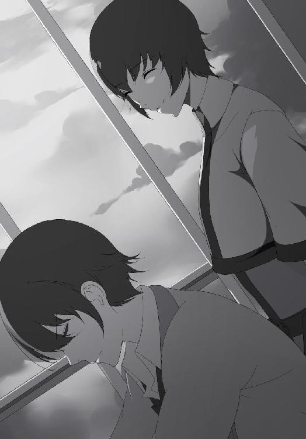
「昨日教えてもらった黄金律、考えてみたんだ」
チラ、とヨハネの様子を窺う。特に聞き返してくることはなく、黙ったまま聞き入っている。俺は再び地面に視線を戻した。
「俺は、ミルフィアと友達になりたいんだ。今はまだ違うんだけど。それで自分がされて嬉しいことをしろっていうからさ、ミルフィアの誕生会を開いたらどうだろうと思ったんだ」
「ほう、いいではないですか」
俺の報告に温かい声で頷いてくれる。しかし、問題はここからだ。
「だけど、俺には親しい人がいない。誕生会に誘う人がいないんだ。ただ、もしかしたら黄金律なら仲良くなれるかもとは思った。それでも、明日までに見つけないと間に合わなくて......」
話していて、自分がどれだけ滅茶苦茶で無謀なことをしているのか思い知らされる。親し人はいないのに誕生会に参加してくれる人を集める。それも明日まで。都合のいい夢物語、甘いと一蹴されても仕方がない。
「なるほど」
けれど、聞こえてきた声調は穏やかで教師としての芯があった。振り向けば、ヨハネの顔は諦めていなかった。
「確かに宮司さんは無信仰者です。そして周りは信仰者ばかり。これでは誘うのは難しいでしょう。しかし、今の宮司さんは黄金律について考えて行動している。黄金律という思想の下、宮司さんは自らの道を手探りながら進んでいるのです。では、それを続けることです」
そう言うと、ヨハネは俺に振り向き、ニコッと微笑んだ。
「やってみればいいではないですか。信仰とは続けることに意味があります。ここで止めることにどんな理由がありますか。宮司さんは、ミルフィアさんとお友達になりたいのでしょう？」
「ああ」
即答だった。それでヨハネは一回、大きく頷いた。
「それでは、もう答えは出ているではないですか」
「え？」
「諦めますか？」
ヨハネからの問いに、俺の表情が引き締まった。
そうだ、なにを弱気になっているんだ俺は。ここで諦めることになんの意味がある。どの道やるしかないんだ。確証なんてない、それこそ信じるしかない。手探りでも、この道が正しいって進むしかないんだ。
「どうやら決まったようですね」
ヨハネはそう言うと立ち上がった。
「おっとっと」
が、身体がよろめき転びそうになった。せっかくいい感じだったのに！
「まったく、しっかりしてるのか抜けてるのか分からないな」
ヨハネは「あははは」と苦笑しながら頭を掻いた。そして姿勢を正す。
「それでは、私はこれで」
「待ってくれ！」
教室から出て行こうとするヨハネを慌てて呼び止める。俺も立ち上がり、ヨハネは足を止め振り返った。
「その、あの」
ヨハネが向ける「なんでしょうか？」という眼差しに言葉がなかなか出てこない。俺は言葉にすることに躊躇するが、けれども言った。
「ありがとう。その、ヨハネ、......『先生』」
尻すぼみに声は小さくなっていき、最後の言葉は霧のように消えてしまう。せっかく出した言葉なのにこれでは伝わるか分からない。
だが、俺の不安とは裏腹にヨハネの目が少しだけ開かれた。その後すぐに微笑を作る。
「いえいえ」
温かな声を残して、ヨハネは教室から出て行った。俺はその場に立ち続け、静かにヨハネの背を見送った。そして窓から差し込む夕日を追いかける。
空は茜色に染まり、これから夜に変わることを告げている。一日の転換期をもうすぐ終えようとしていた。
けれど、俺はこれからだ。明日にすべてを賭ける。信じろ。無信仰者が自分まで信じられなくなったらお終いだ。
俺は夕日に背を向け、教室を後にした。
「ある......、るじ......」
「うーん」
寮のベッドで横になる中、瞼越しに光を感じる。温かい空気と小鳥のさえずりを感じるが、そこに混じって別の声が聞こえてきた。
「主、起きてください！」
「あともう少し〜......」
今いい気持ちなんだ、このままにしてくれよ......。
「主、遅刻します！」
「遅刻！？」
が、次の一声で跳び起きた。体を勢いよく起こし布団を蹴り飛ばす。すぐ隣を見れば、先に起きていたミルフィアがいた。
「しまった、寝過ごしたのか。もう間に合わねえか？」
「いえ、急げば今からでも」
「分かった」
未だに眠気が残る意識をたたき起こす。洗面台で歯を磨き乱れた寝癖を直す。それが終わると急いで学生服に着替えた。俺が着替えている最中、ミルフィアは学生カバンを持ち玄関前で背を向けて待っていてくれた。
「悪い、それじゃあ行くぞ」
「待って下さい主、ネクタイが曲がっています」
「お、おお」
用意が終わり、すぐにでも出て行こうとするがミルフィアに止められた。慌てて作ったネクタイを注意されミルフィアが結び直してくれる。ミルフィアの顔が胸の前にあり、距離がグッと近くなった。
「わ、悪りい」
ミルフィアの手がネクタイを結んでいる。すぐ近くに頭があり、覗き込んでみれば真剣な表情だ。
「......ん」
やばい、なんかドキドキする。
俺はミルフィアの顔を覗き込む。澄んだ空色の瞳は胸元に注がれており、小さな唇から吐かれる息が微かに当たる。
やっぱり可愛いよな。
「どうかしましたか、主？」
ゲッ！
「あ、その」
ミルフィアが見上げてくる。なんとか誤魔化そうと咄嗟に出てきたのは、
「そういえば、もうすぐ俺たちが出会った日だったよな。覚えてるか？」
「はい、明日です。初めて会った時の主は、たしか泣いていましたね」
「うるせえよ」
ミルフィアが小さく笑う。俺は口先を尖らせるが、そんな様子を見ているとまあいいかと思えてくる。
一瞬誕生会のことを話そうかとも思ったがそれは止めておいた。きっとミルフィアは否定する。奴隷にそんなものは不要だと。だから俺は胸に留め、言い掛けた口を噤んだ。
そうこうしている内にミルフィアは作業を終え、ネクタイをキュッと締めてくれた。
「ありがとな」
「いえ、当然の務めです。その、主」
「ん？」
ミルフィアが何かを言い掛ける。俺はなんだろうかと見つめ返すが、見上げる瞳は不安そうに揺れていた。そのまま言い掛けた口は閉じてしまい、瞳は諦めたように細められてしまう。
「いえ、なんでもありません。それでは行ってらっしゃいませ。私は消えていますが、何かあれば呼んでください」
ミルフィアが小さくお辞儀をする。見送る姿勢はこれからも共にいるはずなのに、一緒にはいられないことを告げていた。
ミルフィアの誕生会のことを知られるわけにはいかない。それ以前に、ミルフィアは学校の生徒じゃないんだ。そのため学校にはいられず、いつも消えていなければならない。その間、ミルフィアはずっと一人だ。
ごめん。なにがごめんなのか分からないけれど、俺は胸の中で謝った。
こうも自分に良くしてくれる彼女が友達もできず一人でいる。こんな同情ミルフィアは望んでいないだろうが、それでも俺は思ってしまう。
ミルフィアにも、友達ができればいいのに。そして、誰よりも笑って欲しいんだ。
ミルフィアの誕生会、それでミルフィアに友達ができないだろうか。それなら今よりも笑顔が増えるだろうし、俺以外に接点を持てば奴隷なんて生き方も止めるかもしれない。
そう思うと俄然やる気が出た。今日この日に集めないといけないんだ。
誕生会の参加者を。
＊
それから激走の末、遅刻前にクラスへの入室を果たしたことに胸を撫で下ろす。まあ、クラスメイトからの不審な眼差しには未だ慣れないが。
そして一限目の授業が終わり、俺はミルフィアの誕生会を開かんがために動き出した。
まずはなんと言っても人数だ。俺とミルフィアの二人だけで誕生会とか洒落にならん。
使命感に突き動かされて、俺が最初に向かった先。そこは、
「なあ、今いいか？」
「ファッ！？」
一限目が終わったばかりなのに何故か早弁している栗見恵瑠だった。
「てか、お前なに食ってんの？」
「お弁当」
「知ってるわ」
見れば分かるわそんなこと。
「そうじゃなくて、まだ学校始まったばかりだぞ？ よく食えるな」
「だって朝食べてないからいいかな〜て」
「周りは気にならないのか？」
「周り？」
それで恵瑠は弁当を両手に首を回した後、何事もないかのように見上げてきた。
「周りがどうかしたんですか？」
「いや、もういいわ」
こいつある意味すげえな。
「それで、ボクに何か用ですか？」
「その、用っていうかさ」
恵瑠が不思議そうに見上げてくるが、そんな彼女になんと切り出したものか、正直困る。
だが、言葉でどれだけ誤魔化しても言いたいことは結局言うんだ。なら直球でいいだろう。
「実はな、ミルフィアっていう女の子がいるんだ」
「あ。あの金髪のきれいな子ですよね？」
「ああ、そいつだ」
照れ隠しに頭を掻く。一体どう言えばいいか。ああくそ、ここまで来たらさっさと言っちまえ！
「そのミルフィアのことなんだが、ここだけの話、そいつには友達がいなくてさ。だけどあの、あいつの名誉のために言っておくが人が悪いとかそんなんじゃない。ただ、欲しいと思っていないだけで。でも俺は友達を作って欲しいんだ。それでものは相談なんだが、あいつの誕生会に参加してくれないか？ それをきっかけにしてさ、あいつと仲良くして欲しいんだよ。まあ、なんだ。相性とかいろいろあるだろうし、無理に、っていうわけじゃないんけど......」
言いたいことは言った。後半になるにつれ声が小さくなってしまったが。
話を聞いていた恵瑠は俺を見て黙ったままだ。もしかしら変な奴だと思われたかもしれない。いや、そうだろう。無信仰者に、会って間もない奴に、しかも話したこともない人の誕生会に参加してくれとか無茶ぶり過ぎる。
でも、俺は諦めたくなかった。
「どうして、神愛君は人のためにそこまでするんですか？」
そこで恵瑠が尋ねてきた。彼女が黙っていた理由。それは突然の勧誘ではなく、俺の行為そのものだった。
「慈愛連立じゃないのに。とっても不思議です」
そう言う恵瑠は本当に不思議そうに俺を見上げている。
天下界で人を助けるのはいわば慈愛連立の役目だ。琢磨追求は弱いから悪いと切り離し、無我無心はそもそも頓着しない。
そんな世界で無信仰者のすることだ、おかしいどころの話じゃない。元から誰かを助ける思想など持っていないのだから。
けれど、恵瑠からの質問に答えるのは簡単だった。
「俺に信仰なんてねえよ。でもな、それでも人間なんだよ。心があるんだよ。それさえあれば誰かを助けたいって、そういう気持ちも生まれるさ」
これを聞いて信仰者がどう思うかは分からない。信仰に生きる者にとっては考えたこともない発想だろう。戸惑うか嫌悪するか。
「分かりました！ 不肖この栗見恵瑠、その誕生会に参加します！」
「マジか！？」
「マジだ！」
「おお〜」
驚いた。まさか受けてくれるとは。てか元気いいな。
「そうか、ありがとうな。なんていうか、正直半分断られるって思ってたんだ。ありがとよ」
「いえ、ボク慈愛連立ですから。それに助けてもらったお礼もありますからね」
恵瑠の笑顔に不安だった気持ちが消えていく。なんか、信仰者とはどうやっても分かり合えないと思っていたが、そんなことはないんだとほっとした気持ちになった。
なんていうか、それだけで嬉しかったんだ。
「神愛君、いい人ですよね」
「ん？ なんか言ったか？」
「いえ、なんでもないです」
なにか聞き逃したが、恵瑠は笑っているし気にすることはないだろう。
「話は聞かせてもらったわ」
「天和！？」
気配を消して近づくんじゃねえよ、アサシンプロかてめえ。
「背徳と禁断の愛に生きる同じ仲間の誘いとあれば仕方がないわね」
「いろいろ訂正が必要だがとりあえず感謝しとくよ、サンキューな」
いつの間にか俺の隣には緑の髪をした天和が立っていた。よく分からんが参加してくれるらしい。けれどいいことだ、この際参加者は誰でも歓迎だ。
「あとは......」
俺は教室を見渡す。現状参加者は俺を含めて三人。順調な出だしに戸惑うほどだが、出来ればあと一人は欲しい。
それである人物に目が止まった。正直ここにいる二人よりもかなり抵抗感が強いんだが、しかし相手を選んでなどいられない。駄目もとでいいじゃないか、玉砕覚悟でいくだけ行ってやれ。
俺は二人に詳細は後で話すと伝え、最後の候補者へと近づいた。
「よう。今いいか？」
赤い長髪を背中に流し物静かに座っている女子、加豪がゆっくりと顔を上げた。
「話は聞こえてたわ」
「盗み聞きか？」
「聞こえてきたの」
「そうかい。まあ、好都合だよ」
加豪に親しくする雰囲気はない。緊張した空気というか。ただ、荒々しい感じはなかった。
「みんなが見てる、場所を変えるわよ」
言われて気づく。周囲の人間がまた何か起こるのではないかと心配そうな目を向けていた。こんな状況では話もしづらい。
「分かった」
加豪は立ち上がり、俺たちは教室から出て行った。
＊
渡り廊下には俺と加豪の二人きり。天気はいいが人がいないのでここは静かだ。渡り廊下の屋根の下、日陰の中で俺たちは向かい合い、最初に口を開いたのは加豪だった。
「話は分かった。でもどうして私を誘ったの？」
「難しい質問だな」
改めて考えると悩むところだ。明確な理由があったわけじゃない。ただ、
「ぶっちゃけお前とは喧嘩した。お互い初対面の印象は最悪だろう。だけど、その後で謝っただろ？ きっとそれでだ。一切話もしたことない相手より、お前の方が誘いやすいと思ったんだよ」
理由なんてきっとそれくらい。口にして思ったがそれだけの仲でしかないんだよな、それで誘う俺もどうかしてる。
「そう」
告白に加豪は小さく頷いた。そうして俺を真っ直ぐ見つめる。
「なら答えを返すけど」
口調は冷たい。腕を組む姿勢にも親しみは感じない。
「答えはノーよ」
「ああ、だと思ったよ」
俺は両手を上げてから落とした。態度からして分かる。お前が素直に受けてくれないことは。
「納得したなら帰るわよ？」
「いや、しないね」
「は？」
加豪の眉間に皺が寄る。静かに見てくるだけの視線が険しくなった。
「どうして？ 以前のことで私にも非があったのは認める。でも、あんたを認めたわけじゃないわよ、勘違いしないで」
「分かってる。でも頼む。お前が嫌いなのは俺だけだろ？ ミルフィアはそうじゃないはずだ。お前は俺のことが嫌いだろうさ、無信仰者だからな。誰からも無視されて時には石を投げられて、親からだって見捨てられた。はっきり言って辛かったさ。だけどミルフィアだけは傍にいてくれたんだ。それでめちゃくちゃ救われた。なのにミルフィアには友達がいない。こんなにもいい奴なのにだ。だから頼む、俺のためじゃない。ミルフィアのために付き合うだけでいいから付き合ってくれ！」
頭を下げて、俺は加豪に頼み込んだ。誠意とミルフィアへの思いを念じるように伝える。
「それは本気？」
顔を上げる。そこにいる加豪の顔は精悍としていて、鋭い視線は俺の真意を問うているようだった。
「どういう意味だよ？」
俺の問いに加豪はすぐに答えない。沈黙がしばらく流れ、それでようやく口が開いた。
「私はね、今までの人生において信仰に従い自分を鍛えてきた。そこには辛いことも苦しいことあったけど、それでも耐えてきた。辛かったけど、嫌だとは思わなかっわ。それらが今の私を作っているから」
加豪の告白。言葉は聞いているだけでは分からないが、その裏では想像以上の努力をしてきたんだろう。
「あんた言ったわよね、誰からも無視されて石を投げられたって。ならそれを糧にして自分を強くすればよかったのよ。なのに辛いと嘆くだけで何もしなかった」
それはあくまでも琢磨追求ならの話だ。けれど、それもまた事実には違いない。
己を強くすることで苦痛を無くす神理。加豪はそれの信仰者だ、弱音は許されない。
「信仰のない者は弱い。信じるべきものがないからすぐに諦める。あんたがその子をどれだけ大事に思ってるのか知らないけれど、無信仰者のあんたじゃ私を動かすのは無理よ」
強者が弱者に抱く傲慢のような、しかし加豪が言うとそれが嫌味にならない。それだけに加豪の言い方には迷いがなかった。自信があるんだろう、自分を信じる心の強さに。
「どうせすぐに諦める。無信仰者なんてそんなものよ」
まるで鋼の女だ。
加豪は腕を組んだまま目を瞑る。弱い俺を取るに足らない存在だと突きつける。
「なるほど、お前の主張はよく分かった。琢磨追求のお前らしい意見だ。でもな、勘違いしてるぜ」
そんなこいつに、俺は言ってやる。
「この想いだけは何があっても諦めない！」
加豪の目が開く。その瞳に真っ直ぐと、刺し貫くほどの視線を送り返してやる。
「無信仰者は弱い？ すぐに諦める？ ハッ！ なら試してみるか？ 俺が本気だってことを認めればミルフィアの誕生会に参加してくれるんだな？」
「出来るならね」
「出来るさ」
「口先だけは一人前ね」
「なら実演といこうか？」
「好きにすれば？」
そう言って加豪は踵を返し廊下へ歩き出した。まっすぐな背中は今も確信に満ちている。
けれど俺は追いかけ、加豪の肩を掴んだ。
「頼む」
「放して」
加豪の足が止まる。それで半身だけを俺に向け、鋭い視線を向けてきた。
「言っておくけど、琢磨追求は鉄拳制裁なんて日常茶飯事よ。慈愛連立なら暴力とか騒ぐだろうけど、琢磨追求なら殴るくらい当たり前なの。今すぐ放して」
「断る」
「本当に殴るわよ？」
「やれよ」
加豪の視線を真っ向から受け止める。負けてたまるかと視線をぶつけ合った。
「そう」
すると加豪の表情から力が抜け、次の瞬間、カッと見開いた。
「そこまで馬鹿とは思わなかったわッ」
肩を掴んだ手を外される。そして飛んできたのは右ストレート。拳骨が視界を覆う。
「がっ！」
頬に拳がめり込む。衝撃に体が揺れ、痛みと共に視界が揺れた。足が崩れ地面に腰をつく。
「あんたが強引なんだから、悪く思わないでね」
そう言い残し、加豪は再び背を向け歩き出した。が、
「おい、なに手ぇ抜いてんだ......？」
俺は立ち上がり、加豪の肩を掴んだ。
「お前に突き飛ばされた時の方が強かったぜ？」
頬の痛みを無視して不敵に笑う。そんな俺を加豪が不機嫌そうに睨んだ。
「あんたねえ、本気で殴られないと分からないの？ 下手すれば死ぬわよ？ それでも諦めないって？ なにも信じていないんだからさっさと諦めればいいでしょう」
「しないね」
「どうして？」
俺の手を振り解き加豪が距離を取る。その表情には眉間に皺が寄っていた。意外なのだろう、加豪の価値観では無信仰者がここまでする道理がない。一発殴れば諦めると決めつけていたのに、俺がしぶとく諦めないことに初めて平常だった気が乱れる。
「どうしてそこまでするの？ あんたは琢磨追求じゃない。そこまで出来るほど強くもないしなる必要もないでしょう。現に、あんたは無信仰者の境遇を辛いと思っていた。そんなあんたがそこまで出来るの？」
「出来るさ」
「何故？」
加豪からの質問に、俺は覚悟を込めた。
「ミルフィアのためだからだ！」
ここにはいない彼女のことを想う。そして今までしてくれた感謝を思い出す。
「俺はミルフィアの誕生会を開くと誓った。そのためなら恥も痛みも受け入れてやるさ屈するもんか。誰に殴られようと俺は諦めねえ」
それだけで、俺の意志は鋼すら超えていく。痛みなんて痛くない！
「無信仰者でも『信念』ならあるんだよ！」。
あいつにもっと笑って欲しいと決めた時から、この信念が折れることなどあり得ない。
「てめえにだって俺は止められねえぞ、加豪」
宣戦布告するように、俺は指を突き付けた。
「............」
加豪の表情は変わらない。仮面のような顔のまま俺を見つめるだけだ。
だが、鉄のような顔の口元が、少しだけ持ち上がったのだ。
加豪が微笑んでいる。目もどこか優しい。そして視線を俺から切ると青空に向けた。
「琢磨追求は己を鍛え強くする神理。なのに、信仰を持たないあんたは人のために強くなると言うわけ」
加豪は肩を竦め、その後俺を見た。
「分かったわ。その誕生会、私も参加する」
「マジか！？」
「マジよ」
どこか呆れたように、けれどフッと笑って、加豪はそう言ってくれた。
「でも勘違いしないでよ。私が参加するのはあのミルフィアって子が不憫だから仕方なくよ。今でもあんたが問題を起こすようならただじゃおかないからね」
「殴っておいてよく言うぜ」
「なに？」
「分かった分かった、後のことは好きにしろ。その代わり」
「分かってるわよ」
加豪が参加を約束してくれた。やった。痛みの残る頬を擦りながら笑みが零れる。これで四人、誕生会として最悪ということはないはずだ。目の前では加豪がツンとしているが、俺の本気に応えてくれた。
喧嘩して、謝って、そして誕生会か。初めて会った時には想像も出来ないよな。
ただ、また問題を起こしたらただじゃおかない、か。厳しいのは相変わらずだ。おそらく本気だろうから気をつけないとな。
「おい」
と、背後から声をかけられ振り向いた。そこには仲間を連れて、不良の熊田銀二が立っていた。
「先日の借りを返えしにきたぜ」
さっそく問題きたぁあああ！
「神愛、これはどういうこと？」
「いや、これは〜......」
いやいやいや、これはちげえよ悪くねえよ！ 俺は人を助けたんだからむしろ褒められることをしたんだよ、誰か説明してくれ。恵瑠ぅ！ 恵瑠はどこだ！？
「ようイレギュラー、この時を待ってたぜ」
大柄な銀二が近づき俺を見下ろしてくる。なんともゲスい笑顔だ。
「それでだ、なあ神愛くぅん。ここどこだか知ってるぅ？ 学校。そんな場所に無信仰なんて悪い子いちゃ駄目だよねえ？ だからお前、今から退学届出してこい。僕は神を信仰しない悪い子なので学校を辞めますってな。プッ、はっはははは！」
あざ笑った話し声が鼻先に吹きかかる。仲間からも爆笑が聞こえてきた。
「なるほど。まああんたらのことを腰抜けとか言って悪かったよ。ただあんただって一人の女の子を囲って脅してたんだ、ここはお互い様ってことで穏便に済まさないか？」
「ああッ！？」
俺としては問題をこれ以上表面化したくないというか、加豪の目の前で荒立てたくない。だから言ったんだが、途端に銀二の顔が歪んだ。
「無信仰者が誰に向かって言ってんだ、弁えろボケ！」
「いや、だからさ」
「無信仰者のクズが、やんのかオラ！」
「そうじゃなくて、そっちにも非はあるんだから」
「黙れ！ てめえはさっさと退学届出してこればいいんだよ、そうじゃないと痛い目みるぜ？ はっはははは！」
「............」
ちっ。
「なあ、お互いに問題があっただろ？ それにもとはと言えばお前らが恵瑠を脅してたのが悪いんだろが」
「うるせえ！ 無信仰者の分際で言い訳してんじゃねえぞ！」
「............」
おいおいおい、ちょっと待てよこいつ。なに自分のこと棚に上げて言いたい放題言ってんだよ。
「はあー、そうかよ」
やれやれと思いながら答えを返す。駄目だこいつ、話にならん。両手を持ち上げブランと下げた。
「ならはっきり言ってやる。俺は退学届なんか出さない、まだやるべきことが残ってるんでね」
「んだと！？」
銀二だけでなく後ろの連中からも怒声が聞こえてくる。
「いいかよく聞け教えてやる。俺は生まれつき無信仰だが、お前らは生き方が意地汚いクズだ。他人を馬鹿にして自分が偉いと思ってるお勘違い野郎。俺とお前らの違いを教えてやろうか？ 信仰のあるかなしかじゃない。お前らは弱い奴にしか噛み付けない臆病者だが、俺は世界中の相手だろうが喧嘩が出来る。退学届を出してこいだと？」
軽口を言うが顔には亀裂が入る。目の前の馬鹿どもを睨み上げ、最後には大声で叫んでいた。
「喧嘩売る相手間違ってんじゃねえぞ！ 一人でも生きていける俺様を、神におんぶに抱っこでおまけに群れてやがる雑魚が、調子に乗ってんじゃねえ。やれるものなら力づくでやってみろ！」
「あああっ！？」
「おおおっ！？」
それが引き金だった。銀二たちは腕を振り上げ襲い掛かってきた。いいぜ、俺は絶対に諦めねえぞ！
「待ちなさい！」
だが、今まで静観していた加豪が割って入ってきた。
「加豪、お前......」
意外だった。まさか加豪が止めに入るなんて。
「琢磨追求......、先輩ですね。すみませんけどそいつ、返してもらっていいですか？」
すると加豪は俺の手を取り、答えを聞く前に歩き出した。
「おい加豪」
「いいから。それに無信仰者のあんたが戦っても勝てるわけないでしょ」
「なんでお前......」
次に問題を起こしたらただじゃおかないと豪語した加豪には不似合な行動に戸惑ってしまう。彼女の横顔に聞くが、加豪は前を向いたままだ。
「事情は分かった。それに」
加豪は振り返らない。けれど答えてくれた。
「約束は守るほうよ」
約束。ミルフィアの誕生会に参加してくれること。同じ信仰者を前にしても約束を優先してくれた。加豪は厳しいがそれは自分に対してもで、義理堅い性格だった。
こいつ、案外良いやつじゃねえか。
「おい、誰がいいなんて言ったんだ？」
だが銀二は見逃さなかった。加豪は立ち止まり俺と二人して振り返る。
「無信仰者にこっちは喧嘩売られたんだぞ！」
「ああ！？ 誰が売っただと！？ てめえだろうがボケエ！」
「神愛！」
加豪が俺の手を引っ張るがこいつ許さん！
「ふざけんなよオラ！ なにが信仰者だ、てめえらなんてただのチンピラだろうが。ああ！？ やんのかオラ！？ オイ！ やんのかオラ！？」
「神愛、それじゃあんたがチンピラよ......」
銀二の言葉に噛み付くが加豪が制止してくる。その後俺の前に立ち、銀二たちに立ちはだかった。
「すみませんけれど、そいつとは約束があるんです。それを果たすまでは退学には出来ません。琢磨追求を信仰する者として、どうかご理解下さい」
「ああ〜？」
加豪が銀二に頼み込む。しかし銀二は眉を大きく曲げて加豪を見た後、フンと鼻で笑ったのだ。
「黙ってろ女！ こいつ叩きのめしててめえが強いって証明しなくちゃ、こっちは神に顔向けできねえんだよ！ お前はすっこんでろ、弱い女が！」
「......なんですって？」
瞬間、加豪の声が鋭くなった。
「......女が、弱い？」
「ん、加豪？」
俺の前には加豪の背中があるが、なんだか震えていた。手が拳になっている。
「あの、加豪さん？」
心配になって手を伸ばすが、その前に加豪は歩き出した。
「言ってくれるわ。こっちは穏便にこと済まそうと頑張ってたんだけど、今のは私の信仰を否定する発言だわ。撤回するか、さもないと」
加豪がゆっくりと銀二に近づき、戦意を充満させた目で睨みつけた。
「力づくで後悔させるわよ？」
「おおっ！？」
いや、なんでお前がやる気なの！？
加豪からの挑発に全員が敵意丸出しだった。それでも加豪はやる気満々で、「やれるものならやってみなさい、返り討ちにしてやるわ！」と望むところよという感じだ。すでに加豪対銀二たちといった具合ですっかり喧嘩モードになっている。ていうか。
「あのー！」
片手を上げながら入り込む。
「なんでお前らがやる気満々なんだよ！」
いつの間にか蚊帳の外なんだけど。
そんな俺に加豪が振り向いた。
「すっこんでて神愛。これはもう私とこいつらの喧嘩になったの。あんたは関係ないからどっか行っていいわよ」
「はああああ！？」
なんだそれ！？ なんで俺とこいつらの喧嘩がお前のものになってんだよ！
「ふざっけんな！ 後から来たお前になんで俺が指図されなきゃならないんだ！？ お前が部外者だろうが！」
「あんたねえ、今のやり取り見てなかったの？ いいからあっち行ってなさいよ！」
加豪は言い捨てると背を向けた。なんていうかアウト・オブ・眼中ていう感じ。
いいよいいよ、そっちがその気なら俺だって好きにするよ。
「あー、そうかいそうかい、分かりましたよ。加豪さんは人の喧嘩を横取りするほど喧嘩が大好きみたいだ。頑張ってね。ほれ、丸腰の相手だ。お前の得意な刃物ちらつかせて脅してやれよ、あれは効果的だぜ？」
「あんたも根に持つわね〜！」
すると加豪が振り向いた。苛立ちを露わにしてるが、んなもんお前のせいだろ！
「当たり前だろうが！ 子供の喧嘩に長物なんか持ち出しやがって、頭おかしいんじゃねえか！？」
「あれは！ あんたが口で言っても聞きそうになかったし、下手に殴り合っても仕方がないから私なりに無傷で収めようと、そう思っただけで。別に喧嘩が好きとか頭がおかしいわけじゃないわよ！」
「頭がおかしい女はみんなそう言うんだよ」
「なんですって！？ さっきからいい加減なこと言わないでくれる！？」
「オウ、イェ〜。オウ、イェ〜。なら話を整理するぞ？ 君はぁ？ 子供の喧嘩を終わらせるために刃物をチラつかせて脅してくるだけの、至って、普通な、女の子だよ〜。ハッ、これで満足かよヒステリック刃物女」
「はあああ！？ いい度胸してんじゃない、表に出なさい、速攻で叩き潰してやる！」
「すでに表だバーカ！」
俺と加豪で睨み合う。額が触れそうな距離まで顔が近づき、視線をぶつけ合った。
そんな俺たちに銀二が近づいて来る。
「おい、お前ら俺たちを無視して------」
「「うるさい、引っ込んでろ！」」
「ひっ！？」
二人同時に邪魔な銀二を怒鳴りつける。あまりの迫力に短い悲鳴が上がっていた。
その後俺たちは視線を戻すが、しばらくしてどちらからともなくスーっと顔を退いていく。
「まあいい、お前との決着は後だ」
「そうね、まずは片付けるのが先か」
と、互いに方針を確認し合って。
俺たちは並んだ。互いの敵を倒すべく、今まで睨み合っていた瞳が同じ方向を向いたのだ。
挑む姿は勇猛果敢。片や威風堂々。共通の敵を前にして、かつては喧嘩した者同士が共闘する。
「来いよ信仰者、神様に泣きつく用意はいいか？」
「琢磨追求は強くなることが目的だけど、それは誰かと比較して優位になることじゃない。己を鍛えろ」
負ける気など微塵もない。勝利を信じて疑わぬ意思で、俺たちは連中と対峙した。
「くそ、ふざけんなよ、こんなッ......！ 舐めやがって！」
俺たちの態度に銀二が怒り心頭している。だが、言葉とは裏腹に声は震えていた。虚勢を必死に張っているが今にもメッキが剥がれそうだ。
「負けてたまるか！ 強く、強く、もっと強くぅう！」
しかし、余裕で構えていたが銀二の上げた一声で雰囲気が豹変した。銀二は頭を抱え、大きく体を振り始めたのだ。
「どうしたんだこいつ？」
銀二は狂ったように全身を動かし奇声まで出し始めた。かなりやばい雰囲気だ。
その時だった。加豪が慌てた声で叫んだ。
「こいつ、まさか『狂信化』してる！？」
「おい、なんだよ一体！？」
狂信化。聞いた事がない、どういうことだ？
「信仰心が自制心を超えたのよ！ 信仰心が暴走して、理性が働いてない。その分信仰心が無秩序に増大するけど、とても危険だわ！」
耳をつんざく大声はもはや獣のようで、悪い何かに憑りつかれているようだ。暴れる勢いで銀二は叫ぶが、途端に片手を前に翳した。
「我が神リュクルゴスよ、我に力を貸し与えたまえ。至上の神理に、我が心を捧げん」
それは詠唱。神託物を出現させる時特有の準備動作だ。
「神託物招来！」
銀二は現れる光の像を手に掴み信仰心を実体化させる。
「三牙槍！」
銀二は神託物を手に取った。そこにあるのは矛先が三つある長槍。刃が十字になっている。さらには刃を青い炎が覆っていた。
「強くならなければならない！ 誰よりも強く！ 俺より強いものなどあってはならない！ 死ね、俺以外が死ねば、俺が最強だぁ！」
見開かれた瞳はもはや誰も見ていなかった。目につく者から襲い掛かり、仲間だろうがお構いなし。身近にいたというだけで斬りつけていく。
「た、助けてくれえええ！」「熊田さん、正気になってくださいよぉお！」「逃げろ、襲われるぅ！」
銀二の狂態に仲間は悲鳴を上げて逃げ出していく。
おい、かなりやばいんじゃないのか！？
銀二は逃げる仲間を追おうとはせず、今度は俺に向かって襲いかかって来た！
「死ねぇええ！」
くッ！
「雷切心典光！」
「加豪！？」
迫る十文字槍の刺突。それを止めたのは、横から入った加豪の雷刃だった。
「離れてなさい神愛！ 本当に危険だわ！」
「でもそれじゃお前が！」
「私はいいから！」
俺の心配を払い除け加豪が銀二の前に立つ。俺を庇う形で、瞳には加豪の力強い背中が映っていた。
「シネエエエ！」
銀二は叫ぶと槍を構える。乱暴な言動は自意識があるのかも疑わしい。
「自分の弱さを認められないなんてッ。琢磨追求の一人として言うわ。あなたは間違ってる！」
信仰が暴走している銀二に加豪は吠えた。神の力を握る両手は力強く、目の前の狂信者に刃先を突き付ける。
両者の神託物が並ぶ。そして、激闘の火蓋が切られた。
加豪の剣撃と銀二の刺突が交錯する。舞台は渡り廊下の外、校舎間の固い地面に移る。剣風と熱波が空間をかき混ぜ炎熱と雷光が乱舞する。木々が大きく揺れ地面が焦げた。電撃の破裂音は離れていても凄まじく、鼓膜を太鼓のように叩いてくる。
「加豪！」
心配から声を掛けるが加豪から返事はない。それどころではないのは見て分かっているのに、なぜか口が動いてしまう。
「くそ、どうする！？」
渡り廊下から二人の戦いを見つめる。信仰者の戦いに無信仰者の俺が加勢しても足手まといになるのは目に見えている。では助けを呼びに行くべきか？ だが、加豪を一人残すのも気が引ける。くそ、どうすればいい！？
そこで思い浮かぶ顔があった。
ミルフィア。あいつに頼めば助けになってくれるはずだ。俺が呼べばすぐにでも現れるだろう。
でも、それでいいのか？ なにか困ったことがあればミルフィアに戦わせるって、それじゃまんま奴隷じゃないか。
良い訳がない。もう何度も助けてもらったんだ、いつまでもあいつに頼ってはいられない。俺がなんとかしないと！
「ウオオオオ！」
俺の意識を引き起こすように銀二の叫びが上がる。
加豪と銀二の間で激しい戦闘が繰り返されていく。互いに扱うのは神託物。神の力の一つ。
銀二が放つ攻撃はただの刺突じゃない。纏う焔は巨大で、たとえ刃を躱しても炎で焼かれる。加豪は刺突を刀で弾くが同時に体捌きも行っていた。それでも完全ではなく、熱波が皮膚を焼く。銀二の槍の軌跡には炎が尾を引き、もはや奴の周囲が高温の結界だ。
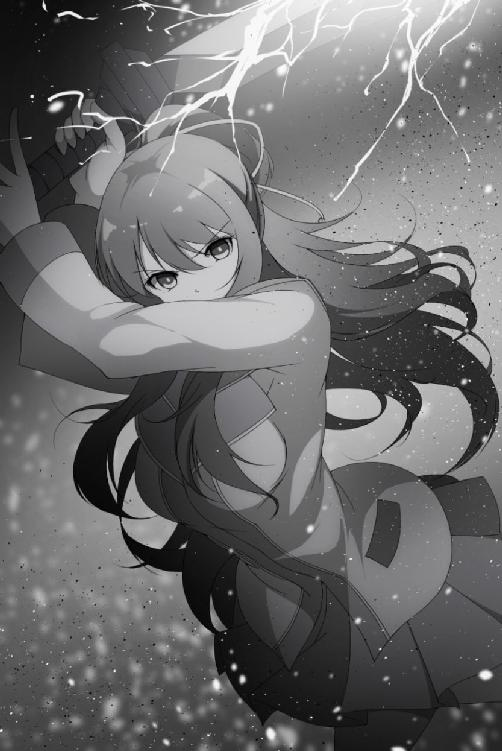
それでも。
加豪は、前に出た。
神の贈り物を使うのは銀二だけじゃない。加豪の手にも、彼女の鍛錬が生んだ純正の神器がある。
「はあああ！」
加豪が気炎と共に刀を振り下ろす。瞬間、稲妻が鳴り響いた。
刀身から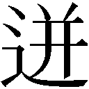る電流が銀二を襲う。全身を蹂躙する感電の苦痛に悲鳴が起こる。さらに加豪は斬りつけた。真上からの渾身の一撃。銀二もすぐに槍で受け止める、が。
「ギャアアア！」
刀身は電気を纏う雷刃。接触すれば当然感電する。加豪の神託物、雷切心典光の真髄と言えるだろう。躱してもる電流が襲い掛かり、受け止めれば雷の奔流が防御を無視する。
いける。俺でなくともここにいる人間なら誰しもそう思うはずだ。
「グオオオオオ！」
しかし、加豪の電撃に苛まれる中、銀二が叫んだ。それは悲鳴なんかじゃなく、戦意の咆哮だった。
戦うことしか頭にない。それしかないんだ。
それは理性を捨て神理に埋もれ、人ではなく『信仰そのもの』になっていくような、そんな印象。
もしそうなら、信仰心の上昇は止まらない。神理に近づけば近づくほど、歪ながらも銀二は神化によって強化されていく。
銀二が片手を槍から放した。力尽きたのか？ 違う。
銀二はさらに、二本目の三牙槍を取り出したのだ。
「くっ！」
銀二が加豪の刃を押し返す。その隙に二本目を横に薙ぎ、柄の打撃が加豪の横腹を急襲した。
「がぁ！」
「加豪！」
顔を顰め加豪が膝をつく。それで迷いが吹っ切れた。考える暇もなく、俺は渡り廊下から飛び出した。
「ふざけんなよてめえ！」
全力で体を動かす。加豪を守る気持ちと敵に対する怒りが足を走らせる。
「来ちゃ駄目神愛ー！」
加豪の必死な制止も無視して二人の間に立ち塞がる。俺は拳を構えて銀二を睨んだ。対決に気持ちが荒ぶる。加豪を背にして、負けられないと闘志が奮えた。
間を空けず、銀二の槍が伸びる。躱して懐に踏み込もうとするが、しかし、無駄だった。
速い。狂信化によって放たれた槍は目から消え、視認出来ないほどの速さだ。やばい！
「そこまでです、武器を下ろしなさい」
瞬間だった、矛先が眼前で止まったのだ。俺はすぐに離れ、固まっていた顔をそっと横に移す。そこにいたのは、
「ミル、フィア......」
小柄な体に金髪をした小女、ミルフィアだった。
瞳には怒りではなく威圧を宿し、表情は侮蔑ではなく威厳を放ち、そして敵の刃を、片手で掴んでいた。
驚いた。ミルフィアは神託物の炎を意に介すこともなく槍を掴んでいる。それに相手は狂信化で強化され、神託物の一撃は目でも追えない速さだったのに。それを、片手で容易く掴むなんて。
「グオオオオ！」
銀二は獣性の声と共に槍を押し込んでくる。突然現れたミルフィアに驚く素振りは見られない。一心不乱に槍を押し込む。
だが、一ミリも進まない。銀二の足は地面を耕すだけで、一向に前には進めないでいた。
そんな奴を前にして、ミルフィアは冷厳な目つきで宣告する。
「下がりなさい愚か者、王の前です」
言葉の後、ミルフィアが手に力を入れる。
それで、刃が砕け散った。
「グオオ！？」
神託物を破壊する。理性のない銀二でもこの事態の異常性を理解したのかミルフィアから間合いを取った。すぐに新たな槍を出し、二本の神託物の矛先がミルフィアを狙う。
「ミルフィア、俺は、その」
背中を向ける少女に、俺は掛ける言葉が見つからなかった。またも、俺はミルフィアに助けられてしまった。なんて言えばいい？ 迷惑ばかりかけて。こんな時、なんて言えば。胸が苦しい。
「主、大丈夫です」
なのに、ミルフィアは俺に振り返り、微笑んでくれたのだ。
「ミルフィア、危ない！」
それを嬉しいと思う間もなく、銀二が飛び掛かってきた。背後を振り向いた隙を突いた、完璧なタイミング。
しかしそれを以てしてもあまりある、ミルフィアの絶技が閃いた。
迫る一撃。それを見もせずに、ミルフィアは掴んだのだ。それは直感か、はたまた別のなにかなのか。
ミルフィアは走り俺から離れる。銀二も後を追うが、それでも銀二の放つ両の槍撃は止まらない。それはもはや刺突ではなく壁だ。刃と炎の制圧攻撃だ。そもそも躱せる空間がない。逃げ場がない。これでは突かれるか、燃やされるかのどちらかだ。
しかし、そんな中でもミルフィアは健在だった。
乱れ突く矛を全て見切り最小限の動きで躱していく。炎熱の余波には躊躇うことなく身を晒して。なのに肌には火傷が見られない。
針地獄と炎獄の中を、ミルフィアは精悍な目つきのまま進み出した。
歩く、近づく。間合いが狭まる。
ミルフィアは片手を上げた。片手はそのまま振るわれて銀二を襲う。頬に直撃したのは少女の張り手一発。
それだけで、ミルフィアを大きく上回る銀二の巨体は吹き飛び、土煙を上げ地面を数回転がっていった。
「まじか......」
すごい。ミルフィアの力は一線を越えている。
「グゥウ......」
銀二が起き上がる。獣のような声を漏らしミルフィアを見つめる。それでも今までのような勢いはなくなっていた。
警戒しているんだ、それほどミルフィアは強かった。不意を突かれたとはいえ加豪でも苦戦したのに。それをこうも。
ミルフィアに守られている。それを実感するたび不安がなくなり落ち着きを取り戻していく。
しかし緊張が緩んだ俺を、銀二が睨んだ。
「ガアア！」
危機感が全身を這い上がる。まずい！ 槍が投擲された。
躱せない。速すぎる攻撃に反応できない------
「主ー！」
迫る神託物の一投。直撃を前にミルフィアの叫び声が聞こえた。そして目の前に彼女の背中が現れて、槍を受け止めた。
「ミルフィア！？」
腰から地面に転んでしまったためにミルフィアを見上げる。どうやらミルフィアは両手で掴んでいたようですぐに槍を投げ捨てた。
しかしすぐに二撃目が飛んできた。銀二は神託物を出すなり投げつけ、ミルフィアを遠距離から攻撃してきたのだ。何度も何度も、投げては出し投げては出し、連撃が止まらない。
ミルフィアの防戦一方だった。投擲される全てを掴んでは捨ての繰り返し。躱せないんだ、俺がいるから。ミルフィアの背中に隠れているから無事でいるものの、ここから出れば即座に串刺しだ。
ミルフィアの防戦に銀二が突撃してきた。神託物一本を両手で握り、横薙ぎしてきたのだ。
「ぐっ！」
ミルフィアが両腕を交えて受ける。躱せば俺に当たる。だから動けず、身を挺して俺を守ってくれた。
それをいいことに銀二の攻撃は止まらない。何度も何度も、強打がミルフィアを襲う。
「もういいミルフィア、離れろ！」
叫んだ、小さな背中に向けて。なのにミルフィアは退いてくれない。いつまでも俺のために攻撃を受けて。
ふざけんな。
ふざけんな。
ふざけんな！
なんだよこれは、なにしてるんだよ俺は！？
なんで、大事な女の子一人救えないんだ！？
「そこまでよ」
すると銀二の背後に加豪が回り込んでおり、雷切心典光を振り上げていた。
「さっきの比じゃないから、覚悟しなさい！」
刀身に電流が渦巻いている。言葉の通りさっきまでとは電量が違う。もしかして、今までこれを溜めていたのか。
加豪が神託物を振り下ろす。刀身は峰打ちだったが襲うのは極大の電流。肩を打たれた銀二から喉が擦り切れそうな悲鳴が上げる。全身を痙攣させた後硬直すると、背後に傾き倒れていった。巨体が地面に落ちドンと音がなる。
決着がついた。緊張が解け、代わりにドッと疲れが押し寄せてきた。
「なんとか終わったわね、大丈夫？」
「俺は平気だ。それよりもミルフィア！ 大丈夫か！？」
すぐに起き上がりミルフィアに声を掛けた。あんな攻撃を何度も受けて、平気なはずがない。
「大丈夫です、主。私は平気ですから」
ミルフィアが振り返り、そう言って微笑んだ。だが、見れば腕にあざがあり青く腫れていた。
「でもお前、腕怪我してるじゃねえか」
「これくらいでしたらすぐに治りますので。主のご心配には及びません」
そうは言うが納得なんて出来ない。痛かったはずなんだ。叩かれたら誰だって、ミルフィアだって。見ていて、銀二の攻撃を耐えているミルフィアは辛そうだった。
俺のせいだ。
俺はミルフィアの腕を後悔の眼差しで見つめる。
だが、すぐにあざがなくなっていった。まるでビデオの早送りのように傷が退いていく。
「お前......」
「大丈夫です、もう治りました」
ミルフィアはまたも微笑んだ。傷を負った原因である俺に。
「それよりも、主にお怪我はありませんか？」
大きな瞳が俺を向く。戦闘中の冷徹な視線とは打って変わって、ミルフィアの向ける眼差しは憂いに満ちていた。純粋な心配を映す両目は宝石のようにきれいだ。
「ああ。お前のおかげでな」
でも返事はどうしても暗くなる。俺のせいで傷ついたのも同然なのに、俺の心配までして。
「そうですか。主がご無事でなによりです」
だっていうのに、俺が無事だと知ってホッとして、笑顔まで見せて。そんな仕草が愛らしかった。
「あ、その、ごめんなさい。私がついていながら」
そこで神託物を消した加豪が近づいてきた。それを察しミルフィアが前に出る。すぐに表情を引き締め加豪を警戒していた。
「ミルフィア、大丈夫だ」
そんな彼女を言葉で制し、俺はミルフィアに説明した。
「いいんだミルフィア、最初はいろいろあったがもう和解したんだ。だからそんなに警戒しなくてもいいさ」
「はい、そういうことでしたら」
納得したミルフィアは構えを解き、表情からも険しさが退いていく。そのまま加豪と向き直った。
「さきほどは失礼しました。ミルフィアといいます。主の危機を感じたので現れましたが、それはあなたではありませんでした。ですので謝罪は不要です。むしろ感謝を。主のために戦ってくださりありがとうございました」
「別にいいわよ、ミルフィア。それに私も助かった、ありがとう。私のことは呼び捨て構わないわ」
「はい、加豪。改めてありがとうございまいた」
小さくお辞儀するミルフィアに加豪は苦笑する。最初は敵対していも、傍から見ている分には仲が悪そうには思えなかった。一度は戦った仲で想い通ずるところでもあったのか、徐々に接していけば友達になれるんじゃないだろうか？
そんな希望的な目で二人を見つめていた。
「どうしたのですか！？ 一体なんの騒ぎです？」
するとヨハネ先生が慌てて走ってきた。さすがにこの騒ぎだからな。もしくは逃げ出した男たちが知らせたのか。駆け寄ってきたのは他にもおり、騒ぎを聞き付けた生徒が野次馬となって集まっていた。
「ヨハネ先生......」
「先生、私から説明を」
ちょうどいいタイミングで現れたヨハネに気が抜ける。反対に加豪はしっかりしていて、経緯を掻い摘んで話し始めた。それで何が起こったのか把握したヨハネが頷く。
「ふむ、それで一人の生徒が狂信化を。たいした怪我人が出なかったのは不幸中の幸いですね。狂信化した生徒については、改信施設移送への手続きをしておきます。それにしても」
改信施設。これも聞いたことがなかったが、おそらく狂信化した者を更正させる施設だろう。それよりも二人の話で気になるのは別にあった。
「狂信化した生徒を、あなただけではなく、ミルフィアさんが？」
「はい」
ヨハネの疑問に対して直に目にした加豪が力強く首肯する。それでも腑に落ちないのか、ヨハネは顎に手を当てた。
「ふーん。狂信化した者は理性が無くなる変わりに信仰心が増長し、その分神化の度合いも高まります。それを倒したとなると、ミルフィアさんの神化は相当なものだ。しかし、神化とは神の恩恵の一つ」
言われて俺はミルフィアに目を向けてみた。彼女は目を瞑り俺の背後に控えている。自称奴隷らしい控え目な態度だが、思い出しても先ほどミルフィアが行った行動は壮烈だった。
狂信化したとはいえ神託物を出した銀二と互角以上に戦ったんだ。超人的とも言える力は神化の影響としか考えられないが、そうなると新たな疑問が生まれる。
「ミルフィアさんは、どの神から恩恵を......？」
ミルフィアを見つめる。俺を主と呼び接してくる少女。以前から不思議な存在だったが、今回のことで謎が深まった形だ。
「まあいいでしょう。後はまかせてください」
ミルフィアのことはとりあえず保留となった。それよりも狂信化した銀二の方だ。ヨハネはいつもの笑顔を浮かべると、そのまま人だかりに近づいていった。どうやら銀二を運ぶ手伝いを募っているようだ。
だが、慈愛連立を含めて返事がない。気づけば皆が俺をちらちらと見てくる。無信仰者が起こした事件には関わりたくない、か。
「まったく......。あなたたち、それでも慈愛連立の者ですか。慈愛の精神というのはですね、分け隔てなくするからこそ意味があってでして」
ヨハネが高説をするが反応は変わらない。ヨハネの表情は翳り肩を落としてしまった。
「分かりました。この話はまたの機会にしましょう」
それで嘆息し、仕方がないと自分で倒れている銀二を背負った。細い体であの巨体を運ぶのは大変だろう。
「ヨハネ先生、手伝うよ」
「いえいえ、大丈夫ですよ。これ以上宮司さんにご迷惑をかけるわけにはいきませんからね。そういえばもうすぐ授業が始まる頃ですし、私次休みですから。それに、私こう見えて力持ちなんですよ？」
「まあ、そう言うならいいけどさ......、悪いな先生、頼むよ」
仕事が増えて気の毒だと思うが、ヨハネ先生は気にしておらず、それどころか申し訳なさそうだった。
「いえいえ。宮司さん、あなたには嫌な思いをさせてしまいましたね。申し訳ない。私もまだまだです」
「何言ってんだよ、先生には十分感謝してるさ」
励ますための嘘とかじゃない。本当の気持ちだ。
俺の言葉にヨハネ先生は「ありがとうございます」と嬉しそうに笑うが、笑顔の下にある憂いまでは隠しきれていなかった。なんというか、いつもの笑顔なんだが寂しそうで。
「なあヨハネ先生、大丈夫か？ 顔色悪いぜ？ 言っておくけど俺は気にしてないからあんま気にすんなよ」
「はははは、大丈夫ですよ。大丈夫ですから......」
そう言って、ヨハネは銀二を担ぎ直し行ってしまった。ただ、どうしても心配は拭えない。そういえば昨日も席を立つ時ふらついていたが、もしかして体調でも悪いんじゃないだろうか。俺は杞憂であることを願いつつ先生の背中を見送った。
「心配ね」
「ああ」
隣にいる加豪にもそう見えたらしい。まあ気さくでお気楽なヨハネ先生のことだ。明日にでもなればまたいつもの笑顔で笑っているさ。
そう思っているとミルフィアが近づいてきた。
「では主、私もここで」
事態が解決したことでミルフィアも消えようとする。しかし消えるにはまだ納得出来ていない。
「ミルフィアすまなかった！ 俺を殴ってくれ！」
「え？」
動揺する声が聞こえる。それでもお構いなしに俺は頭を下げた。それだけじゃ駄目だと思い、自分で自分が許せなくて、気づけば殴ってくれとまで言っていた。
「どうしたのですか主、突然」
「だって、当然だろ。俺のせいでお前、あんな目に......」
ミルフィアは強い。それは見ていれば分かる。なのに俺を庇ってミルフィアは傷ついた。する必要のない痛みを受けて。俺のせいだ。
「ですが、それは私の務めですので」
「いいわけないだろ！ いつもいつもお前ばっかり戦って、お前ばかりが傷ついて。嫌なんだよ、俺のせいでお前が傷つくのが」
このままだとお前、いつか俺のために死んじまいそうで、嫌なんだよ......。
奴隷のミルフィア。俺のためにお前はこうして傷つく。お前が俺の奴隷である限り、お前はこれからもずっと傷ついていくんだ。
そんなの、認められない。受け入れられない。もしそれでもいいなんて奴がいるなら俺が殴ってやる。
「優しい主。聞いてください」
声を掛けられ、顔を上げた。ミルフィアはそう言ってくれるが、俺はそんなんじゃない。聞こえてくるミルフィアの声の方が、よっぽど優しい響きを持っていた。
「大丈夫です。大丈夫ですから。主に傷ついて欲しくない。それは私も同じです。主を守れたなら、それだけで。私は生まれてきて良かったのだと思えるのです」
温かく、穏やかな声が俺を包み込む。それは美しいくらいで、俺は言い返したいのに、この美しさまで否定するようで出来なかった。
「分かったよ、そこまで言うならもういい。今はここまでだ」
ぶっきらぼうにそう言って、俺は自分で自分を納得させた。それでもこれだけは言っておこうと、ミルフィアを見つめた。
「ミルフィア、ありがとな。マジで助かったよ」
真っ直ぐに見つめて感謝の気持ちを伝える。するとミルフィアは頬を赤くし、恥ずかしそうに俯いてしまった。
「......返す言葉もありません、我が主。私は、その、この時を永遠に忘れません」
「いや、大袈裟だろ」
そんな大事ではないはずだが。しかしミルフィアにとってはそうなのか、絞り出すように発する声からは嬉しさがありありと伝わってきた。
「それでは失礼します、主」
そう言ってミルフィアは幻影だったかのように消えていった。本当に不思議な奴だ。
野次馬たちも教室へ戻っていき、俺は加豪と顔を見合わせる。
「それじゃ、俺たちも教室に戻るか」
「そうね」
ここにいる理由はないので自然とそうなる。二人並んで教室へと向かった。
「なあ加豪、一応確認しておくが」
「忘れてないわよ、案外心配性なのね」
「うるせえよ」
渡り廊下を一緒に歩く。無信仰者と信仰者とは思えないほど、自然な距離感だった。
「それで、その誕生会っていつやるのよ？」
「明日」
「......早くない？」
「ああ、分かってる。俺もビックリだよ」
「分かった、反故にするつもりはないわよ。それじゃ楽しみにしてるわ」
「おう、ありがとうな」
「どういたしまして」
話は済んだ。誕生会の参加者は出揃い、あとは当日を迎えるだけ。こうして参加者が増えていく様に期待が膨れ上がっていく。
「あ！ そういえばもう授業中じゃない！ もう、先生に何か言われたらあんたが責任取りなさいよ！」
「なんで！？」
けれど走り出す加豪を追いかけ、そんな思いは慌ただしさの中に埋もれていく。しかし胸の奥底では、いつまでも期待の熱は冷めることなく灯っていた。
＊
学校は終わり、時刻はもう夜中だった。俺はベッドに横になり二階ベッドの天井を見つめていた。
明日、ミルフィアは誕生日を迎える。そして誕生会を開くんだ。
「はあー......」
なんだろうな、明日のことが気になってなかなか寝付けない。心配？ 興奮？ それとも両方だろうか。きっと両方なんだろうな。胸が騒いで仕方がない。
「............」
自然と笑みが浮かぶ。明日、もしかしたら大きな変化になるかもしれないんだから。
「主？」
「ん？ ミルフィアか、どうした？」
ベッドの横、気づけばミルフィアが屈んで俺を見ていた。一体なんだろうか。すぐに体を起こした。
「いえ。ただもう遅いので。なにか心配事ですか？」
「まったくお前ってやつは。率先して奴隷の真似事か？」
「奴隷です」
「はいはい」
俺はベッドに腰かけた。それでミルフィアは跪こうとするが、俺はいつぞやと同じように強引に止めさせ隣に座らせた。
ちょうど、黄金律を知ってミルフィアと友達になろうと決めた、あの晩と同じになった。
「なあミルフィア。お前はさ、人生楽しいか？」
「楽しい、ですか？」
「ああ、どうだ？」
俺はそっと振り向き、ミルフィアの横顔を見つめる。質問にミルフィアは静かに目を閉じて、幸せそうに微笑んでいた。
「はい。主にお仕えしていますから」
「俺の世話役がエンタメだって？ 三分で飽きるだろ、もっと楽しいことあるさ」
「いえ、これに勝る喜びはありません」
これを本気で言ってるんだからな......。
「じゃあさ、困ったことはないのか？ 不安っていうか、もしくは手伝って欲しいことは？」
ミルフィアは瞼を開いた。俺に振り返るが、しかし表情はどこか申し訳なさそうに笑っていた。
「ミルフィアは奴隷です。奴隷のことを気遣う必要はありません」
「答えろって。知りたいんだよ」
「ですが」
「いいから」
奴隷としての意地でもあるか、ミルフィアは対等に扱われることを拒絶する。少し強めに言えば従ってくれるが、それでも気になる。普通に接したいと思っている女の子がこんなんじゃ誰だっていい気はしないだろう。
それでミルフィアは答える気になったのか、座り直し俺に正面を向けてきた。暗がりの中でも分かるミルフィアの金髪の下、その表情は真剣だった。
「私は、ミルフィアは、主のお役に立ていますか？」
「は？」
真っ直ぐと見つめる青い瞳は澄んだ湖畔のようだ。けれど視線に感じるのは愛らしいものではなく、切羽詰ったものだった。
「主は、優しい人です。私に負担をかけないように、ご自分でなんでもしようとしています。主のお気遣いは、いつも嬉しく思っています」
ミルフィアを奴隷として使いたくない。それは今も昔も同じだった。なにより、俺のために戦って傷つくミルフィアをこれ以上見たくない。
ミルフィアも分かっていたんだろう。そう言った後、ミルフィアは目線を下げた。
「ですが、同時に思うのです。私は、主のお役に立っているのだろうかと......」
ああ、なるほど。
ミルフィアの不安というのは、自分が奴隷として機能してないことで不要なんじゃないかと心配してたのか。
見ればミルフィアの表情は深刻だ。心細いと書いてあるように顔は暗い。
それで、俺は言ってみた。
「なあミルフィア。たとえばだ、世界最後の日、世界には俺とお前の二人しかいないとする。そして目の前には一つだけ残されたパンがある。もしだ、そんな状況で俺がお前とパン、一つを選ぶとしたら、どっちを選ぶと思う？」
「それは......、食糧がなければ生きていけません。パンではないですか？」
突然の質問に少々戸惑いながらミルフィアが答える。
「正解。俺はパンを選ぶね」
「はい。それが正しい選択です」
言うと思った。だから用意していた次のセリフを言った。
「そして、そのパンをお前にやるよ」
「え？」
見れば、その先には驚いているミルフィアがいた。俺からの答えがそれほど意外だったのか。まさか奴隷の自分がパンをもらえるとは思っていなかっただろう。
「安心しろミルフィア。お前は俺にとって誰よりも大切な存在だよ」
この言葉を言うのに、なんら躊躇いはなかった。真実、そう思っているのだから。
「はい、ありがとうございます」
安心してくれたのかミルフィアも微笑んでいる。
が。
「ですがそれはなりません。主が食べてください」
「いや、お前にやると決めたんだよ」
「でしたら、ミルフィアはいただいたパンを主にお渡しします」
「おい！」
ちょっと待てよ、それじゃ意味ないだろうが！
「じゃあそのパンをまたお前にやるよ」
「そのパンを再びお渡しします」
「ならまたまたお前にやるよ」
「でしたらそのパンを再三お渡しします」
くそ。この頑固娘、絶対に折れない気だな。
「わーった！ わーったよ！ じゃあこうしよう、これから先お前の手が必要になる時があるかもしれない。だからパンは二つに分けて二人で食べる。どうだ？」
「分かりました」
ふぅー。
「しかし奴隷が王と同じ量というのはいただけません。三分の一でいいです」
「あーもう、それでいいよ！ まったく」
仮定の話なんだから素直にもらっておけばいいものを。それをこんなにもムキになって。でも、それは俺も同じか。
そう思った途端なんだかおかしく思えてきた。
「......ふっ、はは。はっはははは」
「ふふっ」
見ればミルフィアも口許に手を当て微笑んでいた。そんな彼女を見れてようやく俺も安心できる。暗い顔なんかよりも、こうして笑っているミルフィアの方がよっぽど可愛い。
そんな彼女を見て、俺は今一度思う。
こんないいやつが、奴隷でいいはずがないんだ。一人でいいはずがないんだ。もっと幸せになって欲しいと思う。そのためにも。
明日の誕生会、是が非でも成功させてやるんだ。
翌日、ついにこの日が来た。
俺は屋上の扉の前に立っている。時刻は昼休憩。扉の曇りガラスが日差しを受けて明るい。電灯のついていないここでは目の前の扉は希望に繋がる光のようだ。
そんな俺の横には、扉を開ける鍵とも言えるミルフィアが立っていた。
「あの、主。ご用件はなんでしょうか」
俺の意図を測りかねているミルフィアは小首をかしげ、少々戸惑った表情をしている。今日という日を考えれば察しはつきそうだが、ミルフィアは自分のことは本気で勘定には入れてないんだな。
「まあいいから。付いて来いって」
ミルフィアの質問には答えず扉を開く。隙間から光が差し込み、全開すれば光が俺たちを呑み込んだ。
そして、その先へ。
俺はミルフィアをつれ、光に満ちた屋上へと出た。青空から降り注ぐ日光の下。白い地面の屋上の中央へと進んでいく。
そこにはブルーシートが敷かれ、約束していた三人の女の子が座っていた。
「悪い、待たせたな」
右には赤い髪を靡かせ足を折り畳んでいる加豪。奥の中央にはちょこんと緊張した様子で恵瑠が座り、左には苦しくないのか、涼しい顔で天和が正座していた。ここには俺たちしかいない。
そして今回の主賓に視線が集まった。
「昨日ぶりねミルフィア、今日は誕生日おめでとう」
加豪は気さくに、友達のように話しかける。
「そ、その、誕生日おめでとうございますミルフィアさん！ ボクは、栗見恵瑠って言います！ 恵瑠って呼んでください！」
恵瑠はガチガチに体を固まらせ、精一杯の気持ちで見つめている。
「誕生日おめでとう。天和。よろしく」
恵瑠とは対照的に、天和は簡素にそれだけを口にした。
ミルフィアが見つめる先には、三人、同年代の女の子が座り、三者三様に歓迎していた。
「あの、主？ これはいったい......？」
状況が理解出来ていないミルフィアが俺を覗き込む。そんな彼女を、俺は笑顔で迎えてやった。
「なあミルフィア、今日が何の日か分かってるか？」
「はい。私と、主が出会った日です」
「そしてお前の誕生日だ」
ミルフィアを見つめる。ショートカットの金髪はさらさらとしており、青い瞳は俺だけを見つめている。白い服を着た自称奴隷の少女は、今も俺のために行動してくれる。
だけど今日は違う。特別な日を、もっと特別な日に変えるために。俺はなんとしてでも成功させないといけないことがある。ここまできて失敗なんて許されない。
「なあ、ミルフィア」
「はい。なんでしょうか主」
目の前にいるミルフィアは微笑んでいる。俺に声を掛けられただけで。
「今日はお前の誕生日だ、だから決めたことがある」
ミルフィアは優しい。けれど彼女には友達がいない。本当ならたくさんいてもおかしくないのに。
「お前の誕生会を開く。だからお前も参加してくれ」
「私の誕生会ですか？」
ミルフィアにしては珍しい顔だった。目を少々見開いて、俺を呆然とした表情で見つめている。けれど、すぐに陰が入った。
「ですが、私は」
「いいから。な？」
ミルフィアは奴隷という立場を崩さない。奴隷という関係がミルフィアに後ろめたさを与えている。
それは分かる。けれど、それでも、ミルフィアの忠誠を踏み躙ってでも、俺は誕生会を開くと決めていた。断固とした意思が、瞳の奥で燃えた。
だって。
嫌なんだ。
もう、お前が傷つくことが。
必ずや通してみせる。俺は目線に力を入れて、無言でミルフィアに訴える。
会話が止まる。
俺たちはしばらく見つめ合うが、ミルフィアの口が動いた。
「......分かりました。主がそれを望むなら」
「マジか！？」
「マジです」
困ったように笑い、ミルフィアは頷いた。
ミルフィアが折れた。奴隷を信条として譲らないミルフィアが、どこか吹っ切れた笑みを浮かべ瞳を閉じる。
ふう、まったく。安心して表情から力が抜けていく。けれどすぐに期待が膨らんだ。これで誕生会が出来る。それにミルフィアに友達が出来るかもしれないんだ。
「それじゃ、始めるか」
「はい」
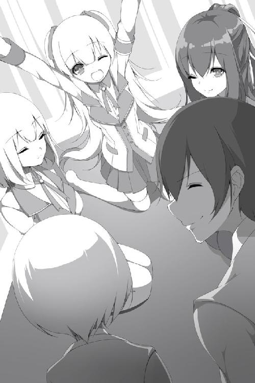
俺は靴を脱いでシートに座る。その後でミルフィアも靴を脱ぎ、俺の靴を揃えてから正座で座り込んだ。
俺の右隣に加豪がおり、正面には恵瑠がいる。その横に天和が座り、俺の左にはミルフィアが座っている。
用意してあった紙コップにジュースが注がれ皆に手渡された。それを受け取り、ここにいる面々を一人ずつ確認する。これまでのことを思い出し、元気よく切り出した。
「みんな、彼女が言っていたミルフィアだ。知っている人はいるかもしれないが話したことはほとんどないだろう。そんな彼女のために集まってくれてありがとう。本当に感謝している」
本来、こんな顔見知り程度での誕生会なんてないに違いない。俺もだいぶ無理を言った。それでも集まってくれたみんなに、本当にありがとうと思う。
加豪、恵瑠、天和。ここには約束してくれた三人がちゃんといる。みんなで一つになっているんだ。
そこでふと思った。ここにはそれぞれの信仰者が輪を作り、そこに俺までもいるんだ。不自然だ、信仰者に混じって、無信仰者の俺までも一つになっているなんて。
こんなこと、今までの人生であっただろうか。
ミルフィアのために参加しているとはいえ、俺が同じ席にいる。ミルフィアがいない時は、ずっと一人で嫌われてきたこの俺が。
そんな俺が、誰かと一緒にいる。まるで普通の人のように。孤独だった無信仰者という人生で、まるで------
俺にも、友達ができたみたいだ。
ずっと、ずっと、ずっと、このまま皆から嫌われて生きていくのかと思ってた。なのに、今、誰かと一緒に過ごしているんだ。
黄金律に従ってミルフィアのために動いていたら、いつの間にか、俺にも友達のような仲間ができていたんだ。
あれ、なんだろうな、これ？ 胸から、何かが込み上げる。
「............」
視界に映る三人。誰かと一緒にいるという現実に、俺は胸が熱くなった。
「？ ちょっと神愛！ あんたなに泣いてんの？」
「え？」
「主？ 大丈夫ですか？」
「いや、泣いてねえよ！」
加豪から言われ慌てて目を擦る。ミルフィアも心配してくるが追い払った。
「神愛君どうしたんですか？ 理由もなく死にたくなったんですか？ 大丈夫です！ ボクも時々ありますから！」
「ちげえよ。そしてお前は病院行ってこい」
「宮司君、私のことをうさぎさんだと思って抱き付いていいわよ」
「いやだわ」
俺はなんとか気持ちを落ち着ける。こいつらのギャグなのか本気なのかよく分からないやり取りに助かった。心配は増えたが。
「それじゃあミルフィア、お前からなにかあるか？」
「それでは」
俺は左隣にいるミルフィアに話を振ってやる。それでミルフィアは背筋を伸ばし、顔を皆に向けた。
「はじめまして、ミルフィアといいます。この度は私のために素晴らしい場を設けていただき嬉しく思います。こうして皆さまとご一緒出来ることは光栄です。ありがとうございます」
そう言ってミルフィアはゆっくりと頭を下げた。
「............」
どう反応したものか困る。
「ま、まあこういう奴なんだ。分かり易いだろ？ それじゃあ早速次にいこうか。こういうのってあれだろ？ 初めにやっとくんだよな。えっと、そうだよな？」
俺はコップを持つがなにぶん初めてのことで自信がない。いや、たぶん合ってるとは思うんだけど。
かっこが付かないが、けれど返ってきたのはそれぞれに個性のある、温かな声援だった。
「はい、主。間違っていないと思います」
「そうよ。てか準備出来てるんだから自信持ちなさいよね」
「神愛君、ガンバです」
「宮司君......、早くして」
「あー、もう！ 分かってるよ！ それでは」
いろいろ思うところはあるが、コップを持った手を上げた。それに倣い、全員がコップを掲げる。そして、皆で当て合った。
「ミルフィア、誕生日おめでとう！」
乾杯。
明るい一声が青空の下に広がると共に、ジュースを皆で飲んでいく。その間俺は感じていた。こうしてミルフィアの誕生会を開けたこと、そこに俺がいること。これがどれだけ素晴らしいことか。
傍から見ればちっぽけな集まりだろうさ。でも、これでいい。ワイングラスが響き合う高級さもなければ洒落た音楽もつまみもない。けれど十分。十分なんだ。
こうして誰かといるってだけで、ずっと一人だった俺には幸せだって、そう思えるから。
俺はジュースを全て喉に通し、充実した気持ちを胸にコップを口から離した。ああ、最高だ！
だが。
そう思った瞬間だった。
気づいた時、希望溢れる記念日は圧倒的絶望に変わっていた！
「............え？」
あれ、なんだろう。誕生会ってあれだろ？ 会話が弾み明るい笑い声。そんな感じだろ？
しかし皆は黙ったまま。無言。無口。沈黙。この場を覆う、圧倒的沈黙！
しまった！ 何を話すのか考えてねえ！ 中身空っぽじゃねえか！
加豪や恵瑠がきょろきょろしているが、ほぼ初対面で話題がない。結局ジュースをちびちび口につけて誤魔化しているだけの超虚しい空気になっている。
やばい！ 考えるんだ俺。すぐに、なんでもいいからすぐに話を出すんだ！
「そ、それでぇ......」
するとミルフィアを除いた三人がバッと見つめてきた。
こっち見んな！ くそ、どうする。とっさに話題なんて出せねえぞ？
それで俺は躊躇いながらも、一人に顔を向けてみた。
「その............、恵瑠、お前から話はないのか？」
「ボクぅうう！？」
突然の無茶ブリに、恵瑠は顔に指を差して驚いていた。
「ボクですか！？」
「いや、ほらさ、恵瑠さんってあれでしょ？ 慈愛連立でしょ？ こうした場を和ませる話の一つや二つあるのかなあ〜って。なくてもなんとかしてくれるかなあ〜って。いや、きっとしてくれるよ、だって慈愛連立だもんなあ〜て、うん」
「神愛、あんた......」
うるせえ加豪。そんな目で俺を見るな。
「あの、えっとぉ〜......」
恵瑠がテンパっている。キョロキョロと視線を動かし変な汗が大量に吹き出していた。
これはまずいな。
それが分かったのか加豪が俺に振り向いた。
「ねえ神愛、聞きたいことがあるんだけど」
「なんだよ」
ナイス話の切り替え。それで恵瑠がふーと息を吐いている。
それはそれで良かったのだが、次の質問がまずかった。
「あんたとミルフィアってどういう関係なの？」
「ああ、俺とミルフィアか。俺とミルフィアは............あ」
しまった！ こいつとの関係を説明してなかった！
「いや、その〜」
「どうしたのよ？ 早く教えなさいよ」
加豪が急かしてくる。それで他の二人も俺を見てきた。
「いや、なんでもないって。ただの幼馴染っていうか」
「いえ、違います主」
ミルフィアてめえ！
「え、ミルフィアどういうこと？」
「私は主の------」
「止めろぉおおおお！」
「奴隷です」
瞬間、世界が静止した・
「「ええええええ！」」
加豪と恵瑠が大声で驚く。天和だけが「ふふ」と小さく笑っていた。
「え、ミルフィアそれ本気で言ってるの？」
「はい。私は生まれた時から主の奴隷です」
「ちげえよ！」
「サイテー、神愛、私帰るわ」
「ちょっと待ってくれ！」
立ち上がろうとする加豪をなんとか留めるが、まるで汚物を見るような目で見られた！
「違うんだ、まずはみんな俺の話を聞いてくれ！」
「懺悔ですか？」
「ちげええ！ 黙ってろ恵瑠！」
とりあえずみんなを座らせ俺だけが立ち上がる。
「いいから待て！ 違う、ミルフィアはこう言ってるが俺にそんな気なんてない。本当は友達になりたいって思ってるくらいだ。だけどこいつは奴隷奴隷うるさくて友達になってくれないし友達もいない。だから友達を作って欲しいって、こうして誕生会を開いたんだよ」
「で、本当は？」
「黙れ天和！」
「神愛、本当でしょうね？」
「本当だ。頼む、信じてくれ......。俺をこれ以上みじめな気持ちにしないでくれ......」
俺はゆっくりと座り込む。はあ、なんてこったい。
「大丈夫ですよ神愛君！」
その時だった。恵瑠が明るい声で、俺を励ましてくれたのだ。
お、お前ってやつは。ありがとうな恵瑠。
「ボクもイヤス様に作られた奴隷みたいな存在ですけど、生まれてきて良かったって思ってますもん！」
「............」
なに言ってんだこいつ。
「みんな、こいつは透明人間だから気にしないでくれ」
「やったー！ ボク透明人間だ！」
ちげえよ。
心の中でツッコむが恵瑠は元気よく立ち上がった。
「よーし、それじゃいたずらしちゃおうかな〜。まずは加豪さんにしよーと！ くっくっくっ、きっと加豪さん驚くぞ〜」
ニコニコ笑いながら恵瑠が加豪の背後に歩いていく。
しかし、加豪が振り返った。
「恵瑠、あんた見えてるわよ？」
「え......」
恵瑠の笑顔が退いていき、二人はそのまま見つめ合った。
そして恵瑠は俯き、自分の席に座ると体育座りで顔を埋めた。
「そ、それで話を戻すんだけどさ」
切り返しと加豪が再び聞いてくる。ただし、今度の質問は俺ではなくミルフィアだった。
「どうしてミルフィアは神愛の奴隷なの？ すごく気になるんだけど」
「あー......、聞いても無駄だと思うぞ？」
「どういう意味よ？」
「すぐに分かるさ」
疑問に思うのはよく分かる。しかし無理だ、俺がどれだけ試したと思ってる。
当然、ミルフィアの答えはいつもと同じだった。
「宮司神愛が王であり、私がその奴隷だからです」
「......えっとー」
「な？」
こんなの会話じゃない。理解出来たらテレパシーだ。
「どうして奴隷にこだわるの？ 神愛は望んでないようだし、別の関係でもいいんじゃない？」
「それが私の役目であり、同時に、私が決めたことなのです」
ミルフィアの声は落ち着いている。冗談で言っているようには聞こえない。加豪は眉頭を近づけ難しい顔をしていたが、俺は両手を上げて見せてやった。
「まあ、二人の関係はいいや。じゃあミルフィアのこと教えてよ。好きな食べ物とか、歌とか」
「私の好きなもの、ですか？」
ミルフィアに投げ掛けられた質問に俺の方が驚いた。今更気づいた。そういえば俺、ミルフィアのそういうのを聞いたことがなかった。
「そうよ、なにがある？」
会話らしい会話に加豪の声も柔らかい。ミルフィアは思案する仕草を見せた後、すぐに口を開いた。
「好きな食べ物というのは特にありません。ですが好きな歌でしたら、一つあります」
マジか？ 意外だった。ミルフィアとそうしたものってなかなか結び付きがなくて。てか俺知らないんだけど？ ずっと一緒にいたのに。くそ、不甲斐ないッ！
「ねえ、どんな歌よ？ 曲名は？」
「申し訳ありません、名前はないのです」
「名前がない？ うーん、どんな歌なんだろう」
「よければ歌いましょうか？」
マジで！？
「ちょっと待て、ミルフィア、いいのか？」
「はい。主が反対するのでしたら止めますが」
「いや、そんなんじゃない。お前がいいならいいんだが」
マジか。ミルフィア歌うの？ てか歌えたの！？ そして聴けるの！？
自然と皆の視線がミルフィアに集まる。ミルフィアは瞳を静かに閉じると、頭上に広がる青空に向けて、彼女が好きという曲を歌い出した。
「おお、古き王よ。我らが主は舞い降りた。古の約束を果たすため」
それは歌というよりも詩のようだった。けれどミルフィアの美声に載って紡がれる言葉は耳に心地よく、青空に溶けていく。
「我らは仰ぎ天を指す。己が全て、委ね救済を願おう
天が輝き地が歌う。黄金の時は来たれり
おお、我が主。あなたがそれを望むなら」
ミルフィアの澄んだ歌声には意識を惹きつける魅力があって、つい入り込んでいた。
「なあミルフィア、今のは？」
隣ではミルフィアが顔を上げたまま目を瞑っている。まぶたをゆっくりと開き、柔和な眼差しが向けられる。
「はるか昔に結んだ、約束の歌です」
「約束？」
浮かぶ疑問に、ミルフィアは微笑んだ。
「はい。いつの日か古の王が帰還して、新たな世界をつくる歌です」
そういうとミルフィアは再び目を閉じ、片手を胸に当てていた。
「この歌を歌うと思い出します。主の傍にこうしていること。その意義と喜びを。一緒にいる、それだけでどれだけ素敵なことか」
微笑の中、ミルフィアの瞳は閉じている。そっと開いた双眸からは、安心に似た幸福が宿っていた。
「主。私は主の奴隷ですが、それでも幸せです。あなたの傍にいられるという喜び。それが主には、失礼ですが分からないでしょう。ですがそれでもいいのです。ただ、私の気持ちは変わりません」
片手を胸に当てるのは忠誠の証。ミルフィアの言葉にどれだけの思いが詰まっているのか、彼女の言う通り、俺には分からない。だけど。
「こうしてあなたと共にいられること。私は、それがとても嬉しいんです」
彼女が本当にそう言っていることは、俺にも分かった。
「お、おお。うん。まあ、お前が幸せでなによりだよ」
「はい」
しかしそんなことを真顔で、しかも他の人がいる中で言われると困ると言うか、照れる。俺は視線を逸らし、そんな様子を加豪が「フフ」と笑っていた。
まったく。でも嬉しいから、まあいいか。
それで俺は視線を中央に戻すが、そこで恵瑠が顔を埋めているのに気付いた。こいつ、まだ落ち込んでたのか。
「おい恵瑠、不貞腐れてないでそろそろ起きろ。悪かったよ透明人間とか言って」
俺は身を乗り出し恵瑠の体を揺らそうとする。手を伸ばすが、そこで信じられないものが聞こえてきた。
「ぐぅー......」
「寝てんのか！」
思わずツッコむ。いつからだ、まさか顔をうずめてすぐ寝てたのか。
「あれ、ボク......。あ！ 早く一等の宝くじ交換しないと！」
「安心しろ、それは夢だ」
「ボクが悪の怪獣を倒すのも？」
「それも夢だ」
「実はボクたちがライトノベルのキャラクターだというのも？」
「すべて夢だ」
「嘘だぁあああああ！」
恵瑠の悲鳴が屋上に響く。なんともこいつらしい反応に自然と笑みが零れる。
「ふふ」
その時だった。ふと隣を見れば、ミルフィアが笑ったのだ。
「ミルフィア、お前」
「なんでしょうか、主？」
俺が名前を呼んだことでミルフィアは表情を整えて振り返る。そこにはさっきまでの笑みはなかったが、明るい表情にちゃんと余韻が残っていた。
「......いや、なんでもない」
そう言って俺は内心微笑んでいた。
やって良かった。まるで黄金に輝く昼下がり。太陽と青空。そして目の前にいる三人。
そして、隣にいるミルフィア。彼女の笑顔がもっと増えるようにと、俺はみんなの輪の中で思っていた。
＊
翌日。ミルフィアの誕生会はなんとか成功した。内容はめちゃくちゃだったがミルフィアが笑ってくれた。これだけで成功といってもいいだろう。
今日も天気はいい。俺は重たい瞼を擦りつつ通学路を歩いている。そうして向かいに桜が並ぶ正門が見えてきた。
「ん？」
が、そこに見慣れた二人の女の子を見つけたのだ。
「あ、神愛君だ！ おはようございます！」
「宮司君、おはよう」
「おお、おはよう。どうしたんだよお前ら、正門の前で立って」
そこにいたのは恵瑠と天和だった。まるで誰かを待っているように立っている。
「どうせなら一緒に登校しようかと思って待ってたんですよ」
「その通り」
「へえー、誰と？」
「神愛君とですよ！」
「へえー、かみあってやつか。神愛、え、俺！？」
ビックリするが恵瑠は俺に向かって指をさしている。そうだったのか。しかし何故？
「だって、せっかく仲良くなれたんですから。もしかして迷惑だったですか？」
恵瑠は笑って理由を教えてくれたが、俺が驚いていることに表情を不安そうにしてしまった。
しかしそんなことはない。驚いたのは嫌だとかそんな理由じゃなくて、ただ、こんなこと初めてだったから。
「いや、そんなことねえって！ 迷惑なんかじゃねえよ！ よし、一緒に行くか」
「はい！」
「私も」
そうして俺たちは並んで正門をくぐった。誕生会を開いたのはミルフィアのためだったが、それをきっかけにこんなことになるなんてな。世界中の嫌われ者の俺でも仲良くなれたんだ。ミルフィアだって大丈夫に違いない。きっと俺よりも多くの友達ができるさ。
「なあ、ちなみに加豪は？」
ここにいるのは恵瑠と天和だけで、昨日同席した加豪の姿はいなかった。
「あ、実は誘おうと思ったんですけれど姿が見えなかったんですよね」
「そうか」
少しだけ残念に思う。昨日は加豪とも話したのだし、せっかくならあいつも一緒なら良かったのに。まあ、あいつは元々俺を敵視してたからな。まだ一緒に歩くほどまで仲良くはないのかもしれない。
「そういえば神愛君、今日宿題の提出あるけど大丈夫ですか？」
「おう、一応やってあるよ」
「神愛君、けっこうしっかり者ですね」
「......意外」
「お前らなあ」
こんな嫌味なセリフも平気で言ってくるんだ、仲良いいんだろうな俺たち。うん、イラっとくるけどそういうことにしておこう。
そんなこんなで目的地の校舎に到着する。登校時間ということもあり俺たち以外にも人は多かった。自然と周りの目が俺に集まる。しかし、不穏な視線を向けられてもそこまで気にならなかった。
なんだろうか。今はそんな雑多な目より、もっと近くで俺のことを見てくれる二人の方が大切だった。二人いるだけで居心地がいいと、そう思ってしまう。
変わったよな、俺。こんな穏やかな気持ちで登校するなんてことなかったのに。
そんな風に思いながら、俺たちが校舎の横を歩いていた時だった。
「主、危ない！」
「ぬわあ！」
急に現れたミルフィアに押し倒されたのだ。
「いってー......」
なんだよいきなり。レンガ道にぶつけた背中が痛い。が、それよりも状況が分からない。周りの生徒たちから驚きの声が聞こえ、見上げれば、乗っかっているミルフィアが心配そうに俺を見ていた。
「大丈夫ですか、主！？」
「いってぇな、お前が押し倒したんだろうが」
「すみません、ですが」
「分かった。とりあえずどいてくれ、この体勢はいろいろまずい」
上に乗る、というかミルフィアが俺に跨っているのだ。ミルフィアの股が俺の股間の上に乗っている。これは非常にまずい、夢に出そうだ。
いい意味で。
とりあえずミルフィアを下ろし俺は上体を起こした。ぶつけた頭が未だに痛い。
「神愛君、怪我はないですか？」
「......辛そうね」
「ああ、大丈夫だよ。てか何が起きた？」
いててと表情をしかめながら聞いてみると、片膝をついて目線の位置を合わせているミルフィアが答えてくれた。
「主の頭上から植木鉢が落ちてきました。咄嗟のことでしたので、押し倒す形になってしまいました。申し訳ありません」
「いや、そういうことならいいんだが......」
植木鉢？ 視線をミルフィアの背後に移すと、そこには確かに割れた植木鉢の残骸が広がっていた。あのまま歩いていたら頭に直撃していたところだ。
「落ちてきたってことは、窓に置いてある植木鉢が風かなんかで揺らされたってことか？」
そう思い頭上を見てみるが、しかし、校舎の窓際にはどこにも植木鉢が置いていなかった。
「............ない？」
おかしい。こうして落ちてきたんだ、他にも植木鉢があるはず。もしくは一つしかなかったのか？ そもそも、植木鉢なんて落ちたら危ない物が窓際に置いてあるものなのか？
「主」
ミルフィアから声を掛けられ視線を戻す。ミルフィアは、恐ろしいほど真剣な表情で俺を見ていた。
「実は植木鉢が落ちてきた件ですが、事故ではありません。故意です」
「てことは」
「はい」
俺の不安と予想を当てるようにミルフィアが力強く頷く。これが偶然ではないなら、考えられる原因は。
「植木鉢が落ちてくる時ですが、三階の窓から腕が見えました」
「そんな！？」
植木鉢は落ちてきてのではなく、誰かがわざと落とした？ それって、
「誰かが、俺を殺そうとしたってことかよ！？」
「はい」
頷くミルフィアは悲痛な顔をしていた。
「それだけではありません。植木鉢を落とした者ですが」
そこでミルフィアは一旦言葉を切り、重苦しい雰囲気となった。
「腕章は、赤でした」
「赤ってことは、琢磨追求！」
俺は琢磨追求の誰かに殺されそうになった。理由は？ 分からない。分からないが、
「ふざけんな！」
込み上げる怒りを拳に変えて地面を叩いた。
俺がいったいなにをした？ どうして殺されなくちゃならない！
それに誰がやった？ 琢磨追求だというのは分かってる。なら銀二の仲間たちが逆恨みで？ しかし銀二はともかく取り巻きにそんな度胸があるとも思えない。なら、消去法で俺と接点があった人物といえば。
「うそだろ......」
思い当たる人間に一気に顔が暗くなる。
加豪切柄。いや、でも違う。確かにあいつは俺を敵視してたけど、それでもどこか分かり合えた気がするんだ。そんなあいつがこんなことするわけない。そうだろう！？
信じる。いや、信じたかった。あいつじゃないって。
さきほどまであんなに穏やかな気持ちだったのに、今ではどこにもなかった。さらに、これだけで終わらない。
これを機に、俺を狙った殺人未遂事件が多発したのだった。
＊
植木鉢が落ちてきた日から数日後。俺は屋上の地面に腰を落ち着け、頭上に広がる青空を眺めていた。春の陽気が身を包むが感じ入るものは何もない。胸の中は空洞みたいで、まるで穴が開いたみたいだ。
「......くそ！」
しかし、すぐに苛立たしい気持ちが蘇る。犯人はまだ捕まっていない。それどころか警察は事件性がないとして調査を打ち切りやがった。
無信仰者に対する、あからさまな差別だ。
敵は琢磨追求だけじゃない。天下界という世界そのものが敵なんだ。結局、無信仰者と信仰者じゃ生きる世界が違うってことかよ？ くそ。
「あ、あの、神愛君？」
「恵瑠か......」
そこへ声が掛けられた。授業は終わったらしく、おどおどした口調だけで誰だか分かる。
恵瑠はひょっこりと顔を出した後、扉の外から静かに出てくる。そしてもぞもぞしながらもゆっくりと近づいてきた。
「神愛君、最近どうしたんですか？ その、ずっと授業に出てこないから......」
恵瑠の顔は沈んでいる。本当に俺のことを心配しているようだ。
「出たくないから出てないだけだ。お前が心配することじゃねえよ」
「心配しますよ！」
「なんでだよ」
「だって......」
俺は恵瑠から視線を切って屋上の外を見た。青空と桜がよく見える。
けれど目が細くなる。俺はいけない気がしつつも、聞いてみた。
「なあ、加豪はまだ授業を休んでるのか？」
加豪は最初の事件からずっと姿を見せていない。ここ数日はずっとそうで、そして俺を狙った事件も続いている。
「はい......」
「そうか......」
予想はしていたが、期待とは違う答えに胸が暗くなった。
「でも、ボクは加豪さんがやったとは思えません！ きっと理由があるはずです！」
「私も」
そこで扉から天和が現れた。いつもの無表情で歩いてくる。
「宮司君。事件のことだけど、気にすることないわ。............分かんないけど」
「はは......」
きっと天和なりの励ましの言葉なんだろう。天和らしいといえば天和らしい言葉だった。
俺は立ち上がり、二人を見つめた。
「ありがとうな二人とも。でも駄目だ。まだ事件は終わってない。俺の近くにいたら危険なのは分かるだろ？ だからお前たちのそばにはいられない。気持ちは嬉しいが、もう俺には近づくな」
「そんな！？」
「仕方がないんだ！」
反対する恵瑠を押し切るように、俺は二人に向かって叫んだ。
「俺はな、ずっと信仰者とは分かり合えない、敵しかいないって思ってた。でも言ってくれたよな？ 仲良くなれたって。あの時、本当はすごく嬉しかったんだ。それは天和も同じだ。信仰者は今でも大っ嫌いだよ、こうして俺を殺そうとしてくるし、助けてもくれない。でも、お前らは特別なんだ。だから傷ついて欲しくないんだよ俺は！」
「神愛君......」
恵瑠が寂しそうな顔をする。そんな表情を見るのが、辛かった。
「これが一番いいんだ」
胸の痛みを隠して、俺はそう言った。手に出来たと思った黄金の輝きを傷つけたくない。それならいっそ手放そう。また一人に戻るが仕方がない。
俺は屋上から出て行った。恵瑠が大声で呼び止めるが無視する。階段を下り廊下を歩いていく。
二人から離れたいという思いからか、気づけば正門の前に来ていた。両側に並ぶ桜は花弁を大方散らし、寂しい枝木を晒す変わりに地面は桃色の草原と化している。
そこで俺は立ち尽くす。心配からとはいえ、せっかく来てくれた二人を拒絶した後ろめたさに重いため息が出た。
「主」
すると、正面にミルフィアが現れた。両手を重ねる仕草がミルフィアの不安な心を映しているように見える。
「よろしかったのですか？ 私には、二人とも主を本気で心配しているように見えました。今からでしたらまだ間に合うと思います」
ミルフィアは俺のことを心配してくれている。せっかく仲良くなれた二人と離れたから。でも、考えを変える気はない。
「いいんだ......」
落ち込みとはまた違う寂しさが声に残る。俺も辛いが、これは仕方がないことなんだ。
俺の言葉にミルフィアの顔がしゅんとなる。辛そうに視線を下げ、ミルフィアはその場に片膝をついた。
「ミルフィア？」
一面のピンクと金髪の色彩は鮮やかだが桜の儚い印象からか、いつもよりミルフィアが弱々しく見える。
「私は、皆といる時の主が楽しそうに見えました。そんな主が私は好きでした。主が笑っている姿が嬉しかったのです。ですので、ここで別れるのは惜しいかと。そう思い、進言申し上げました」
左胸に手を当て頭を下げる。臣下の礼に則り俺に忠誠を示していた。
それでも、真摯な思いを裏切るようで辛かったが、頷くことは出来なかった。
心配してくれるのは嬉しい。でも、これは俺の問題だ。なのにミルフィアはどうしてそこまで......。
「あ」
それで気づいた。もしかして、ミルフィアは二人から離れるのが寂しかったんじゃないか？ 誕生会を開いて、ミルフィアにも友達ができればいいと思っていた。実際ミルフィアは笑ってくれた。なのに俺はなにをしている？ ミルフィアとあいつらを離してどうするんだ。
まったく、馬鹿は俺だ。ミルフィアに友達ができればいいと思っていたのに、俺が離してどうするんだよ。
「悪い、ミルフィア」
ミルフィアの内心を察することが出来なかった。俺は素直に頭を下げた。
「何故、主が謝るのですか？」
それで頭を上げてみると、ミルフィアが丸い瞳で見上げていた。
「その、ほら。俺があいつらと離れたら、お前まであいつらと接する機会がなくなるだろ？ せっかく友達になれそうだったのにさ」
ミルフィアにも友達ができればいいと思った。なのにやってることは正反対。もしミルフィアがあの誕生会で三人と友達になりたいと思っていれば辛いはずだ。あともう少しだったんだから。
「よし、戻ろう」
ミルフィアの言った通りだ、今からでも遅くない。すぐに二人と合流してミルフィアと一緒にどうするのか考えよう。そうすればミルフィアだって寂しい思いはしない。
「それでしたら、ご心配には及びません」
「え？」
だが、ミルフィアの一言に足が止まった。どういうことかとミルフィアに目を向ければ、彼女は真剣な表情だった。
そして、次の言葉を言ったのだ。
「私に、友など不要です」
「............え？」
ミルフィアの一言に、頭がサッと冷えていく。が、すぐに熱が反発した。
「ちょ、ちょっと待て。お前と加豪や恵瑠、天和だけど、友達だろ？ そうでなくてもさ、仲良くなれたじゃないか。誕生会だってさ、楽しかったろ？ そりゃあ、上品とは言えなかったかもしれないけど......」
「私の誕生会を開いてくれたことは嬉しく思います。ですが私は奴隷の身、本来あるべき形ではありません」
「じゃあ、お前はあいつらをどう思ってるんだよ！？ 友達とは思ってないのか？ 友達になりたいとは！？」
知らず、俺は焦っていた。語気が荒れミルフィアを問い質すような言い方になってしまう。
なんだこれ？ それでも自分を抑えることが出来ない。
「主」
焦る。わけの分からない危機感に頭の中が赤く点滅する。
そんな俺を安心させるかのようにミルフィアは微笑んだ。それこそ、誇りを抱くかのように。
「私に、友などいらないのです」
そして、断言のもとに俺の願いをコナゴナにした。
まさか、まさか、まさか。足が地面についていないような、不安が心を支配する。
「友はいらないって、それじゃあ......」
喋るが、声は震えていた。聞くな、聞くな、聞くな。理性が俺に警告する。けれど意思は理性を振り切って口を動かした。衝動だった。聞かないなんて出来ない。だって------
「俺とも、友達になってくれないのか？」
ずっと、お前と友達になりたいと思ってた。誕生会を開いたのだって、お前を喜ばせて、友達になって、奴隷から解放させるためだった。
ぜんぶ、ぜんぶ、ぜんぶ、お前のためだったんだ。なのに、なあ、ミルフィア！
「なりません」
お前は、俺のぜんぶを否定するのか。
「私は、主、あなたの奴隷です。それこそが私の存在意義なのです」
ミルフィアは笑う。
けれど、胸を引き裂かれたように痛かった。
その笑顔に言葉を失った。
どうして......？
ミルフィアにも普通の生き方をして欲しいと、奴隷なんて止めて欲しいと、頑張ったのに。
「私にとって大切なことは、主に尽くし、主のために生きること。それこそが私の生き甲斐なのです」
......なんで、なんでだよ！？
唖然となる。次に両手を握り込んだ。
俺がどれだけ、どんな気持ちで誕生会を開いたのか。
「我が主。ミルフィアはあなたの奴隷です。ずっと、これからも」
無駄だって？ 俺がお前を心配する気持ちも、全部！
「あなたのためなら、私はなんだっていたします」
俺の友達にはならないのかよ！？
「いい加減にしろ嘘つきが！」
それが、引き金だった。願いを裏切られた反動が、ついに弾けた。
「............嘘？」
俺の言葉に、ミルフィアの笑顔が一瞬で凍りついた。心外だったのだろう。表情は驚愕し唖然としている。
「俺のためならなんだってする？ 嘘じゃないか。お前が、一度だって俺の願いを叶えてくれたことがあるか！」
俺には昔から欲しいものがあった。願いはそれだけだった。難しい願いでもなんでもない。
「わ、私は！」
ミルフィアが慌てて口を動かす。俺を見上げる瞳が震えていた。
「主のためなら、なんだっていたします！ 嘘ではありません！」
必死にミルフィアが訴えてくる。俺のためならなんでもすると。
でも、そうじゃないだろう？ 俺がそんなのを望んだことが一度でもあるか？
俺は、友達になりたいって思ってんだよ！ そのために頑張ってきたんだ！
なのに、なんでお前が分かってくれないんだよ！？
「今までも、主のために頑張ってきました。そこに偽りなど------」
「黙れぇえええええ！」
沈黙ができた。痛いほどの沈黙が。
「............」
ミルフィアの言葉を、遮った。自制なんて出来なかった。俺の怒鳴り声は校舎の窓を震わせるほど大きくて。俺はなんとか怒気が抜けたけど、そんな俺に、
ミルフィアは、明らかに怯えていた。
もっと笑って欲しいと、幸せになって欲しいと願っていた女性が、俺を見て固まっているんだ。
なんだ、なんだよこれ......。
途端に、瞳の奥が熱くなった。気づけばもう駄目で、止めようと思っても涙が零れ落ちてきた。
だけど、言わずにはいられなかったんだ。
「なんで、お前はいつもそうなんだよぉお！？」
悲しくて、悲しくて、怖がられると分かっているのに、叫ばずにはいられなかったんだ。
「俺が、こんッ、こんなに......、こんなにも心配してるのに、なんでぇえ！」
ミルフィアとは、どうしても友達になれない。
奴隷という生き方から、救うことが出来ない。
こいつはきっと、これからも傷ついていくんだ。俺のために。
その事実に、悲痛なまでの現実に、涙が止まらない。
「どうして......、どうしてだ、なんで奴隷になろうとする！？」
奴隷という生き方を捨てて人として幸せになって欲しい。友達になって欲しい。だって悲し過ぎるだろ、そんなのが人生なんて。死ぬまでそうなんて。
だからずっと願ってきた。けれど、ミルフィアはいつまでも俺の思いには応えてくれない。
「お前には俺が奴隷を望むような酷いやつに見えるのか？ 怖いのか？ 俺が無信仰者だからかよ！？」
「それは違います！」
「じゃあなんでだよ！？」
俺は涙と共に声を飛ばし、ミルフィアは必死に否定した。理由は、少しの時間を空けてからだった。
「主が、王だからです」
「ッ！」
答えに奥歯を噛む。
言いたいことを言い終え、熱い息が零れる。涙を拭き取る。それで考えた。どうすればミルフィアを救えるのか。
そしてたどり着いた答えに、俺はミルフィアに聞いてみた。
「お前は、どうあっても奴隷を止めないのか？」
「............はい」
返事は一言。その一言にミルフィアの決意を感じる。それで答えは決まった。
「そうか。なら------」
決断する。ミルフィアに奴隷になって欲しくないから。
「別れた方がいい。二度と俺に姿を見せるな」
それは、決別だった。
「え............？」
どのようにしてもミルフィアとは友達になれない。奴隷としてこのまま生きるなら、いっそ会わない方がいい。そう決めたんだ。
「消えろって言ったんだ」
「そ、それは......」
震えた声が聞こえてくる。見れば、俺を見上げるミルフィアの瞳から、大粒の涙が流れていた。
「何が、何がお気に召さなかったのですか！？」
輝く水滴が頬から落ちる。ミルフィアの悲痛な訴えがこの場に響いた。
「あなたに尽くします。あなたに忠誠を誓います。ですので、どうかそれだけは。それ以外でしたら、私はなんでも、なんでもします！」
泣き声は震えて、零れ落ちる涙が地面に染みを作っていく。
「今の、だけは撤回して下さい。お願いします......！」
心痛な表情で、ミルフィアは俺を見つめていた。溢れる涙の数だけ心が裂かれているようで、哀訴の言葉は痛々しかった。
「主......？」
俺は顔を背けた。ミルフィアを視界から追い出す。
「主は、昨夜に言ってくれました。私が、大切な存在だと」
「！？」
胸が、震えた。
「あれは......、嘘だったのですか？」
「------------」
まるで、心臓を握り潰されるような感覚だった。世界中からの罵声や蔑視、そんなものよりも遥かに痛い。苦しくて、苦しくて、胸を掻き毟りたくなる。
だけど、だけど、だけど！
「......命令だ」
俺は初めて、ミルフィアに『命令』した。
「もう、二度と俺の前に出て来るな」
生涯で初めての命令。それは、二人の別れだった。
痛みが全身を支配する。悲しみが心を染めていく。悲痛が、涙となって零れそうになる。指先が熱くなり声が震える。でも駄目だ、ここで泣いたら。ミルフィアに見られたら。
泣くな、泣くな、泣くなッ！ 絶対に泣くな！
「絶対に、俺の前に現れるんじゃない！」
気持ちを隠して、ミルフィアに告げた。
見れば、ミルフィアが唖然としている。泣き顔を晒し、生き甲斐を失くし、絶望しているはずの少女。しかし俺の答えを聞いたミルフィアは、ゆっくりと、小さな笑みを浮かべたのだ。
泣きながら。
「......はい。我が主......、あなた、が......、それを望むなら......ッ」
初めての命令に、ミルフィアは声を震わし、泣きながら笑う。俯きその後、姿が薄くなっていく。空間に溶けていくようにミルフィアは姿を消していった。
たった一人、この場に残される。無人の静けさにミルフィアが消えたことを実感した。
「......くっ」
相手のためを思っているのに、実を結ばない。虚しさが胸をさざめく。遣る瀬無い憤りが胸で暴れた。
「くっそおおおおおおお！」
ため込んだ感情と涙を、地面を蹴って吐き出した。
そんなに嫌なら、反対すりゃいいだろうが！
消えろと言ったが、本音では断って欲しかった。泣くほど嫌なら嫌だと言って欲しかった。けれども、ミルフィアは命令を優先して消えてしまった。所詮、二人の関係は友人ではなく、主従なのだと言うように。
握り込んでいた拳をほどく。周りには誰もいない。散った桜の上で佇み、思い知らされる寂しさを感じていた。
神愛が去って行った屋上では残された恵瑠と天和が扉を見つめていた。しかしそうしていても仕方がないと恵瑠は隣人に振り向いた。
「あの、天和さん天和さんッ！」
「なにかしら」
焦る恵瑠を余所に天和は平然としている。慈愛連立の恵瑠と無我無心の天和としての差がある。
「どうしましょう、このままじゃ大変ですよ！？」
「なにが」
「なにがじゃないですよ！ 大変じゃないですか！」
「そうね」
「まだ何も言ってないですよ！」
温度差が激しい会話を繰り返すがいっこうに進まない。
「神愛君のこと、天和さんは心配じゃないんですか？」
それで、心配になった恵瑠が恐る恐る聞いてみる。彼女よりも少しだけ背の高い天和の横顔へ尋ねるが、そこで天和が初めて振り向いた。
「恵瑠さんは心配なの、宮司君のこと？ 彼、無信仰者なのに」
「それは......」
口籠る。鋭さはないがどこか重たい天和の問いに俯いてしまう。答えぬまま言葉を探すが、顔を上げたのはすぐだった。
「はい！ 正直に言うと、最初はなんだか怖かったんです......。一体どんな人か分からない、っていうだけで、怖かったんですよね」
恵瑠も初めて出会った時は逃げ出している。自分とは違う、というのはそれだけで好奇と不安の対象になる。しかし、話せば分かることもあった。
「でも、接してみて怖かったこともありましたけど、優しいところもありました。信仰する神理がなくても、仲良くなれました」
同じところもある。恵瑠は嬉しそうに笑い、恵瑠の笑顔を、天和はじっと見つめていた。
「だから助けたいって思うんです。天和さんはどうですか？」
「そうね。宮司君は数少ない仲間だし、見捨てるにはもったいないかな」
「なら、一緒に神愛君を助けましょう！」
相変わらず朴念仁のような天和だが、彼女なりに神愛を気に入っているようで素直に首肯する。
しかし助けるとしても問題は山積している。まず頼みの警察が働いてくれないことと、犯人を捜すにしても手がかりが赤の腕章くらいということ。天和の同意を得て舞い上がった恵瑠だが、またも表情を暗くした。
「ねえ、ちょっといい？ さっきから気になってたんだけど」
そこへ、天和から声を掛けてきた。
「宮司君、命狙われてるの？」
「今更何言ってるんですか！？」
この状況で呆れる発言だが、天和は続ける。
「じゃあ、今宮司君、ミルフィアさんがいるとはいえ一人よね？」
「え？」
天和の指摘に呆気に取られると同時に理解する。神愛が一人ということは犯人からして見れば絶好の機会だ。
「天和さん、そういうのは気づいたらすぐに言ってくださいよ〜！」
「そこには気づけなかったわ」
「気づいてください！ じゃあ早く神愛君を見つけないと！」
恵瑠は一刻も早く駆け付けようと走り出すが、天和はその場を動かずフェンスの向こう側を指さした。
「宮司君ならそこにいるわよ」
「え？」
指さす先を見れば、正門の前に神愛とミルフィアの姿がある。
「良かった。まだ無事みたいですね」
「見張っていれば犯人がやってくるかも」
「そうしましょう！」
二人は正門へと急ぐ。全速力で駆け付け、玄関口まで来ると遠目に神愛の姿が見えてきた。
「あれ、ミルフィアさんがいませんよ！？」
「きっといつものように消えたんじゃないかしら」
玄関口の扉から顔だけを出して神愛を監視する。二人の視線の先には神愛が寂しそうに佇んでいた。事情を知っているだけに恵瑠の表情が落ち込んでいく。反対に天和はいつも通りだ。
そこで、赤い瞳が動いた。
「あ、人影」
「どこですか！？」
天和の視線の先は校舎の角であり、見れば確かに影がある。しかし気づかれたのかすぐに消えてしまった。
「追いかけましょう！」
「犯人は一人とは限らないし一人は残っていた方がいいと思う。けれど面白そうだから私も行くわ」
消えた人影を追って恵瑠と天和は走り出す。姿は確認出来ないが足音は聞こえていた。校舎と校舎の間を通り、渡り廊下を超え、その先は体育館だった。足音はすでに聞こえず、見れば扉にうっすらと隙間がある。
「扉が少し開いていますね......。ここに逃げ込んだんでしょうか？」
見渡しても隠れられる場所はここしかない。恵瑠は近づき、「うーん」と扉を開いてみた。重たい鉄扉がギギギと擦れながら開き、二人は中に入る。
電球は点いていないため暗い印象があるが、天井付近の窓から差し込む光が全体をほのかに照らしている。使われていない空間はひっそりとして寂しさを覚えるほど静まり返っている。
しかし、そこに一人の人物が立っていた。驚きに恵瑠が堪らず叫ぶ。
「加豪さん！？」
そこにいたのは赤髪を垂らす加豪切柄の背中。恵瑠からの呼びかけに加豪は振り向いた。
「あんたたち......」
少しだけ意外そうに驚いた表情。それを除けばいつも通りの、知っているままの彼女がそこにいた。
だがここにいるという事実、それが持つ意味に恵瑠の顔は強張った。
「どうしてですか加豪さん！ 一緒にミルフィアさんの誕生会に参加した仲じゃないですか！？ なのに、どうして加豪さんが神愛君を殺そうなんて！？」
「え！？ 私が？」
恵瑠が訴える。しかし、加豪はそれこそ意外そうに驚いていた。
「ひどいですよ！」
「ちょっと待って、私は違うわよ」
「この卑怯者！ 裏切り者！ ボクが神愛君の仇をとってやる！」
「いや、まだ神愛死んでないでしょ？」
「死んじゃえ〜！」
恵瑠が拳を握り締めて加豪に突撃していく。
「止めなさいッ」
「いて！」
それを見事に躱し、加豪は恵瑠の頭を叩いた。叩かれた頭を抱えて恵瑠がうずくまる。
「落ち着いて、私じゃないわよ」
「だって〜」
涙目で見上げる恵瑠に加豪は肩を竦める。
「最近私が学校に来てなかったから疑ってるんでしょうけど、違うのよ。私も事件を調査してたの。他には警察に調査を再開するように掛け合ってみたり。事件が最初に起きた日は先生から頼みごとがあったから遅れただけよ」
「え、そうだったんですか！？」
「そうよ。といっても、信用しないだろうけど」
容疑者が証拠のないことを言っても信憑性は低い。それが分かっているだけに加豪は苦笑する。だが、そんな加豪を恵瑠は真顔で見上げた。
「信用しますよ！ 一緒に誕生会に参加した仲じゃないですか！」
「あの、さっき死んじゃえとか言ってなかった？」
切り替わりの早さについていけない加豪だった。
「でも、どうして加豪さんがそこまで？」
瞬間、恵瑠の問いに加豪は照れたように視線を外し、赤い髪で遊び始めた。
「まあ、あいつとは喧嘩したこともあったけど、一度助けてもらったことがあるからさ。だから今度は私の番かなって......。それだけよ」
もじもじと、彼女らしくない返答に恵瑠は小首を傾げた。
「えっと、それじゃあ。加豪さんは犯人じゃなくて、ここにいるのは」
「あなたたちと同じね、私も犯人を追ってきたの」
加豪の目つきが真剣に変わる。ここには三人しかいないが加豪は辺りを見渡した。鋭い視線を周囲に走らせ、体育館の側面、扉を覆うカーテンで止まる。そこにひと一人分の膨らみがあることに気づいたのだ。
「そこにいるのは誰！？ 出てきなさい！」
気勢が乗った加豪の声がカーテンに突き刺さる。そこに誰かがいるのは明らかだがすぐには出てこない。加豪だけでなく、全員の視線が一点に集中する。
神愛を襲った連続事件。その犯人を逃すまいと力が入る。出てこないなら引っ張り出すかと加豪が一歩を踏み出した、その時だった。
カーテンが揺れ、中から人が出てきた。
途端に言葉が零れる。出てきた新たな人物に、加豪は呆気に取られた。その人物は、
「ヨハネ先生？」
「これはこれは。巻き込んでしまいましたか」
そこから出てきたのは、頭を下げ申し訳ない笑顔を浮かべるヨハネだった。何故ここにいるのか恵瑠が質問する。
「え、どうしてヨハネ先生がここにいるんですか？ あ、もしかして！」
尋ねていて気が付いたのか、恵瑠は途端に得意気になり腕を組んだ。
「ふふん、ボク分かっちゃいましたよ〜。名探偵栗見恵瑠の推理はズバリ！」
「ヨハネ先生も犯人を追って来たんですか？」
「加豪さん！？」
しかし先に答えを言われ「う〜」と俯く。
「はい。お三方の会話は聞こえていました。私も出ようかと思ったのですがタイミングを逃してしまいまして」
ははは、と苦笑する。しかしすぐにいつもの笑顔に切り替わった。柔らかい表情だが気配から真剣な様子が分かる。
「こうなっては仕方がありません。生徒を巻き込むのは不本意ですが、このまま全員で探しましょう。警戒してください、ここには宮司さんを狙う犯人がいるはずです」
ヨハネからの言葉に恵瑠は顔にやる気を入れる。加豪は辺りを見渡し、天和はヨハネをじっと見つめていた。
「とりあえず扉は閉めておきましょう。逃げられては厄介ですので」
ヨハネは三人の間を通り扉へと歩いていく。柔らかな声は温かく、いつもの笑顔は緊張を軽くしてくれる。
だが、ヨハネが通り過ぎた後で加豪がハッと体を震わし、急いで背後に振り返った。
「待って！ 扉は------」
ガチャリ。扉が閉められ、ヨハネによって鍵がかけられる。鍵の取っ手を回すが、ヨハネはつまんだ取っ手をへし折った。
「しまった、閉じ込められた！？」
「え？ え！？ どういうことですか！？」
「............」
加豪が焦りを露わにする。恵瑠は理解が及んでいないようで驚きながら二人を交互に見遣っている。天和だけが平静を貫いているが、ヨハネを見る目に棘を生やしていた。
加豪が前に出る。ヨハネを見る瞳は親愛な教師を見る目つきではなく、警戒と不安の眼差しだった。
「ヨハネ先生、質問があります」
「はい、なんでしょう」
不安を気丈にも隠して加豪は問う。対してヨハネは余裕と温厚な態度で返事をした。そこに動揺は見られず笑顔には陰もない。
しかし、だからこそその笑顔が恐ろしいと、加豪は睨みつけ、ヨハネに核心を突き付けた。
「何故、神愛を殺そうとしたんですか？」
加豪の問いに恵瑠が声を上げる。驚いた顔を向けてくるが加豪は無視して話を進めた。
「普段からヨハネ先生のことは見ています。今のあなたは左に重心が少しずれている。それに上手く隠していますが、左腰にわずかな膨らみがあります。おそらく警棒の類を携帯しているのでしょう。私たちは犯人を追ってここまで来ました。私が言えたことではないですが、それでもヨハネ先生がここにいるというのはやはり不自然です。犯人の手掛かりである赤の腕章も犯人にしては軽率過ぎます。むしろ誘導の可能性が考えられる。あのまま私たちが気づかなければ神愛を叩き、気絶させた後別の場所で殺害に及ぶ予定だった。そんなところですか？」
「はい、その通りです」
返事によどみはない。潔いと表現するのも抵抗があるほど、ヨハネはあっさりと認めてしまった。
「いやー、参りましたね。加豪さんと、おそらく天和さんもですか。どうやらバレてしまったようですね。生徒の優秀さを喜ぶべきか、教師としての信用のなさを嘆くべきか迷います。ちなみに天和さんの根拠を伺っても？」
「なんとなく。目が嘘を言っていたから」
「ははは......、完敗ですね」
ヨハネは笑顔を崩すことなく頭を掻いている。物腰の柔らかさはいつもの彼で、何度も殺害に及び、さらにその事実がバレてしまった男とは思えない。
「どうしてですか、ヨハネ先生......？」
反対に恵瑠は怯えと言葉では表せないほどの疑問を顔に出していた。小さな胸に両手を重ねている。恵瑠だけでなく、皆が知るヨハネとはまったく違う行動、その内容に恐怖をありありと滲ませていた。
「栗見さん。心優しいあなたには酷でしょうが、事実です。それは認めます」
ヨハネは姿勢を正し、教壇に立っているように背筋を伸ばした。柔和な笑顔で生徒の質問に応じる姿は教師として堂に入った佇まいだ。それだけに、続く言葉は凄惨だった。
「ですが、この場で理由を話す必要はありません。それに、知られた以上は......。この先は言わなくても分かりますね？」
「本気ですかヨハネ先生！？」
すかさず加豪が声を荒げる。理由が分からない凶行に戸惑い、疑問が口から飛び出した。正気を疑うなという方が無理な話。それだけヨハネの行動は理解の範疇を超えている。
「ふ、ふふ」
「？」
聞こえてきた笑い声に加豪と恵瑠の体が強張った。加豪の必死な質問に、答えたのは毒のような笑い声だった。
「本気？ 本気かですと？ この私に？ 生徒を殺そうとし、今も三人の教え子を手にかけようとしていて？ 冗談ではない」
そう言うと、仮面のようにヨハネから笑顔がなくなった。表れた素顔は能面のようだが、一点、いつもは細められている彼の両目が開かれた。そこから覗く蛇のような眼光が、真っ直ぐな狂気を孕んでいた。
「本気ですよ、私はね」
「まさか、......狂信化してる？」
ある種、理性すら振り切るほど純粋で強い思い。狂気が持つ純真な瞳に加豪はもしやと声に出す。
次の瞬間、訪れたのは激痛だった。
「ぐっ！？」
「加豪さん！？」
ヨハネは一足で加豪へと接近すると胸部へ殴りつけてきたのだ。咄嗟に加豪は腕を交えて防いだものの、吹き飛ばされ背中から地面に落ちる。痛みに表情が歪む。ヨハネの細身から放たれたとは思えない、俊足で強烈な一撃だった。
「いい反応です。あなたでなければ防ぎきれなかったでしょう」
「止めてください先生！」
ヨハネは倒れる加豪を悠然と見下ろし、加豪は痛みを堪えながら叫んだ。
「あなたの言う通り、私は狂信化しているのでしょう。いえ、間違いない。ならば問答は無意味だとも分かるはずだ。加豪さん、私を止めたいなら、力づくしかありませんよ」
「二人とも下がってて！」
「でも、加豪さん一人じゃ！」
加豪は奥歯を噛み合わせて立ち上がる。殴られた箇所に手を当てて調子を測るが、骨にヒビが入っているのか、痛みは退くどころかますます腫れあがっていく。尋常ではない痛みを感じている加豪に恵瑠が走り寄るが、片足をすさまじい衝撃が襲った。
「きゃあ！」
「恵瑠！？」
ヨハネが黒の法衣から警棒を取り出し投擲したのだ。直撃した衝撃に恵瑠の小柄な体が宙に浮き地面に叩き付けられる。
「これで栗見さんは動けない。もたもたしていると悪化する一方ですよ、このように」
「うっ」
「天和！？」
即座に近づき、ヨハネは天和の首を片手で締め上げた。細い首に五指が食い込み、そのまま体が持ち上がっていく。
このままでは天和が窒息で死んでしまう。
迷っている時間はなかった。
「我が信仰、琢磨追求の祈りここに形（けい）を成す。我が神の威光よ、天地に轟き力を示さん」
神に乞う。信仰の証を示し、奇跡を要求する。
「神託物招来。雷切心典光！」
友を助けるために、加豪は神に力を申請した。
加豪を中心にして猛風が吹き荒れる。雷雲に包まれたような炸裂音と閃光が加豪を覆い、神から貰い受けた神器、神託物を手に取った。
「ほう、神託物。ですが切れるのですか、この私を」
神託物を前にしかしヨハネは悠然としていた。理性が低下している狂信化のせいか、顔は挑発的な笑みすら浮かべている。
加豪は睨み付けたまますぐには動かない。狂信化しているとはいえ相手は担任の教師。親愛の情はある。
だが、加豪は琢磨追求の信者。他の者なら足を取られる迷いを振り切った。
「出来ないなら、初めから鍛えたりしない！」
加豪は駆け出した。狙いは天和を掴む片腕。自身の身長ほどある巨大な刀身を加豪は全力で振り下ろす。
「やはりあなたは素晴らしい」
「そんな！？」
「ですが、信仰心が足りないようだ」
しかし、攻撃が当たった瞬間驚愕が起こる。
斬れないのだ。腕を怪我しているとはいえ、目の前の現実が信じられない。
「どうして！？」
「どうして？ 聡明なあなたには不似合な台詞ですね。分かっているはずだ」
驚愕する加豪をヨハネがたしなめる。天和から手を放すと、押し付けられている神託物を振り払った。押し返された加豪が地面に着地する。視線の先には、傷一つ負っていないヨハネが平然と立っていた。
「あなたの神託物を、私の神化が上回っているのですよ」
「そんな......」
加豪は唖然となる。このようなことあり得ないが故に。
神託物がダイヤモンドならば神化とは炭素の塊。両者をぶつければ砕けるのは炭素の塊が道理だ。しかし、炭素の塊をかき集め、強大な質量を用いればその例にはならない。
圧倒的な信仰心。加豪を以てしても到底及ばない神化の恩恵。加豪が手に持つダイヤモンドでは、ヨハネの山のような炭素を断ち切れない。
量が質を凌駕した瞬間だった。
「加豪さん！ 私たちのことはいいから、加豪さんだけでも逃げてください！」
「でも！」
「いえ、誰も逃がしません。皆さんにはここで死んでもらいます」
恵瑠が加豪に言うもののヨハネは許さなかった。残酷な言葉が三人に告げられる。
「時間がありません。残念ですが、そろそろ終わりにしましょう」
そう言うとヨハネは両腕を広げた。まるで誰かを受け入れ抱き締めるように。慈しみの心を表すようにして、ヨハネは語り出した。
「全ての、疲れた者よ、苦しむ者よ、私のところへ来るがいい」
「これは」
反応したのは恵瑠だった。しかしこれがなんなのか、他の二人も理解する。
「争う者よ、剣を捨て、悩める者よ、責めるのを止めよ。私は、汝らの嘆きと悲しみがなくなることを、誰よりも願う者。この地上から、全ての痛みが無くならんことを祈る者」
それは神へと捧げる祈祷。己の信仰を神へと示し、認められた者のみが手にできる奇跡の具現。
「故に我らが天主イヤスよ、我が祈りに応えたまえ。救済の光にて照らしたまえ」
まるで聖書の朗読を思わせる声調でヨハネは言い終え、背後で無数の光が集まり像を作り出す。
「神託物、招来」
結ばれた像は実体を伴って、ヨハネの信仰を称え上げるように出現した。
「神を見つめる深紅の天羽」
光が弾かれる。そこから現れたのは羽を持つ女性だった。天井に届きそうなほどの体が宙を浮き、右手に巨大な剣を、左手には円形の盾を装備している。血に濡れたようなセミロングの髪はウエーブがかかっており、女性の顔立ちながらも瞳は戦意に満ちていた。純白の翼は広げれば体育館の端から端まで届くほど。全身を包む白衣が聖光に輝き、羽を持つ者の威厳を発していた。
「これが、ヨハネ先生の神託物？」
「そんな、大き過ぎます」
「......へえ」
脅威を目の前にして、しかし三人の口から出たのは称賛だった。狂信化しているとはいえあまりに巨大。
紅白の羽を持つ者が加豪を睨む。瞬間、片手で扱う大剣が襲ってきた。大きさは三メートルを優に超えている。
「きゃああ！」
神託物で防ぐが勢いに吹き飛ばされる。地面に激突してからも引っ張られるようにして滑った。
「う......」
「では、お別れです」
ヨハネの言葉を合図に神託物が剣を振り上げる。斬るという表現では生易しいほどの破壊の一撃。照準は加豪に定まり、攻撃の合図を待っている。
「加豪さん、起きてください！」
「起きないと死ぬわよ」
二人が加豪を急かす。加豪も立ち上がろうとするが、腕を地面に突き立てるだけで体が持ち上がらない。加豪を助けようとするが恵瑠は足を負傷し天和にも術がなかった。
絶体絶命の窮地。加豪は剣を構える神託物と、寂しそうに笑うヨハネを睨み上げた。
「さようなら......。許して欲しい、などとは言いませんよ」
「っく！」
ついに神託物の剣が動く。防ぎようのない一撃に加豪は震える拳を地面に叩き付け、悔しさの中で目を閉じた。
しかし。
それは訪れた。
「止めろぉぉおおお！」
ガラスを破る音と同時に叫び声が響き渡る。見れば差し込む光の中に人影があり、ガラスの破片と共に加豪とヨハネの間に降り立った。突然表れた人物に目が離せない。全員が注目し、現れた男子に三人は名前を呼んだ。
「神愛？」
「神愛くぅん！」
「宮司君、来たんだ......」
地面に着地した男子が起き上がる。その後ヨハネに正面を向け、怒号が体育館に轟いた。
「俺の仲間になにしてんだテメエェエエ！」
驚愕と歓喜と期待の眼差しを受けて。天下界の無信仰者、宮司神愛は登場した。
＊
「宮司さん......」
俺を見つめ、ヨハネ先生は驚いていた。いつも笑顔を絶やさない男が意外そうに見つめてくる。だが、反対に俺は怒り心頭だった。
「言っておくがなぁ、俺は今ブチギレてるぜ。なんだよこれはぁ！？」
目の前にはヨハネと武装をした巨大な女性がいる。そして周りには加豪や恵瑠、天和が倒れている。ここで何が行われていたのか一目瞭然だ。
「なんでこんなことをしてるんだ！？」
「神愛、逃げてぇ！」
そこで背後から加豪の声が聞こえてきた。振り向くとうつ伏せの加豪が顔を上げている。
加豪。ずっと学校に来ておらず姿を隠していた。もしかしたら加豪が事件の犯人かもしれないと思ったことがないと言えば嘘になる。
だけど、こうして出会って俺が思ったのは、怒りなんかではなく久しぶりに出会えた喜びだった。今も、加豪が犯人とは思えない。
そんな気の抜けた俺に、加豪が訴えた。
「早く逃げて！ ヨハネ先生が、事件の犯人だったのよ！」
「え？」
その言葉に、頭を殴られたようだった。
ちょっと待て。ヨハネ先生が事件の犯人？ 加豪の言葉に怒りも忘れる。否定しようとして、だけど出来なかった。そうだ、そもそもこの状況で何故その可能性を思わなかったんだ？
それは確信があったからだ。あれほど人に優しくて、俺にも接してくれたヨハネ先生が殺すはずがないって。
俺はヨハネ先生を見つめる。違うよな？ 口にはせず視線だけを送る。
そんな俺に、ヨハネ先生は苦い表情を浮かべた。
「宮司さん。出来れば、あなたには知られたくなかった」
「嘘だろ......」
胸の中で、なにかが砕けていく。本人から肯定される。最悪の事態だった。それでも信じられない。いや、信じたくない！
「うそだろ？ なあ！？」
返事はない。答えは無言。言外に伝えられる意味が、俺の抵抗を易々と打ち砕く。
「なんで......、なんでだよ！ なんでよりにもよってあんたなんだよ！？」
信じられなかった。考えたこともなかった。
誰よりも初めに温かく接してくれた人。無信仰者の俺にも平等で、恩師という存在があるならそれはあんただ。黄金律を教えてくれたのもあんただった。
なのに、殺そうとしてきたのもあんただって！？
「なんで、だよ......！」
怒りの目で睨み付ける。だけど心は悲しくて、両手は悔しくて拳を作っていた。どうして？ 元から無信仰者を敵視していた人間ならまだしも、どうして！？
そこで、質問したのは恵瑠だった。
「分かりません！ どうして先生が？ ヨハネ先生は慈愛連立の信者じゃないですか？ それが神愛君を殺そうとするなんて！」
「その疑問、主張、ええ、よく分かります」
微笑みを保っているがヨハネの声は寂しそうだった。己の矛盾を自覚しているのか弁解すらしない。
「狂わなければ分からない。いえ、もとより仕組みが狂っているのですよ」
「......どういうことだよ？」
「あなたには、説明しなければなりませんね......」
ヨハネ先生の様子はおかしい。冷静そうに見えるが実は狂信化しているのかもしれない。その男が語る『狂っている』とは一体どういうことなのか。なによりどうして俺を殺そうとした？ 俺たちは黙り込み、ヨハネの言葉を待った。
しかし、続いて出てきたのは、まったく予想外のものだった。
「宮司さん、あなたは『輪廻界』をご存じですか？」
「輪廻界？」
言葉の意味でなら知っている。しかしそれはあくまで知識という話であって、俺は輪廻界を体験したことがなかった。何故ここでそんな話題が出てくるのか分からない。
答えようとするが、その前にヨハネは小さく首を振った。
「いえ、知らないでしょう。しかし我々、あなたを除くすべての人は知っています。輪廻界。それは始まりの地。まだ生まれる前、魂の時に誰しもが寄る場所なのです」
人々が生きている天下界。神々がいる天上界。その中間にある世界が輪廻界だと聞いている。
人は天下界に生まれる前、輪廻界で魂として誕生の準備を整える。それから晴れて人として生まれる。俺という例外はいるが、全ての人はそうした経緯があるらしい。
「そこには名もなき案内人というのがいましてね。その時の私たちは魂ですから、当然目もなければ耳もない。そのため印象は人それぞれで、ある者は男だとか、またある者は女性だとか。他にも老人、若者、子供と様々ですが、まあ、そうした存在がいるのです。そこで案内人は神理を説明してくれます。これは親や環境に左右されず、神理を自ら選べる配慮である、と言ってね。なるほど親切。ですが、騙されてはいけない」
「騙される？」
穏やかじゃない。世界の仕組み、ひいては神にケチをつける言い方だ。どの神理の信仰者であれよろしくない発言だろう。そんな言葉、ヨハネが言うとは思わなかった。
「ええ。三つの神理を選べる、というのは逆を言えば、『三つしか選べない』ということなんですよ。私たちは三つの神理から一つの生き方を強要されているんです。しかし、選択肢を自ら選んでいるためにそこに気づけない。これが性質が悪い。神は神理を広げ、自らのことわり以外を認めない。宮司さん、あなたのような無信仰を許さない。では、神とは果たして寛容か？」
生き方を選択しているのではなく、強要されている？ そんな考え聞いたことがない。
だが、その視点から見れば神とは導く存在なんかじゃない。支配者だ。自分が認めたもの以外認めないとするのは我がままで、傲慢とさえ言える。
「思ったのですよ。神とは、もしかするととても我がままなのではないかと。そんな存在が広げる神理とは一体何か。不備があって当たり前だった」
善意ではなくあくまで我意。愛他ではなくしょせんは利己。もしそうなら、建て前が救済だろうとボロが出る。完璧であるはずがない。
「慈愛連立。他者を皆が助け苦痛を無くす思想。私が信仰し、今も崇めている神理だ。だが、これも完璧ではなかった」
誰かが苦しんでいれば皆で助けるという神理。聞こえはいい。優しくて慈愛に満ちたものに感じる。だが、それでもヨハネは否定した。
「たとえばですね、皆で話し合って決めたのに、それで負担になっている者がいたとします。彼を助けるためには、彼以外の全員と敵対することになる。しかし、そうと分かっていても慈愛連立は他人の苦しみを助ける思想。目の前にある苦しみを助けざるを得ない。たとえ大きな問題の引き金になろうとも。それが慈愛連立。平和のためなら戦争も辞さない平和主義者。宮司さん、私はね」
ヨハネ先生は片手を胸に当て、心苦しい声で俺の名を呼んだ。いつもの笑顔は弱々しく、まるで懺悔室での告白者のようだ。
「あなたを救いたかった。皆から愛されるとまではいかずとも、受け入れられ、認められる世界にしたかった。だが、私には出来なかった......」
顔色を辛苦に染め上げ、悔恨の思いが滴り落ちる。
ヨハネ先生が明かした言葉。そこに込められている思いに、俺は、胸が締め付けられた。聞いていて、地面に沈んでいくようだった。
知っていたんだ。保健室で話してから、ヨハネ先生が俺のために他の生徒へ注意をしたり指導したりしていたこと。俺を庇ってくれたこと。
『私なりにもっと努力しなければ』
そう言ってくれた、あんたの笑顔を今でも覚えてるッ。
だけど、変わらなかった。そうそう人の意識は変わらない。でも、それはヨハネ先生が悪いとか努力が足りないとか、そんなんじゃない！ 人を変えるってことは、それだけ難しいんだ。仕方がなかったんだ！
なのに、真面目なあんたは、そんな自分が許せなかったのか？
「出来なかったんですよ！ 説明しても説得しても、あなたを恐れる人はいるんです！ それも大勢！ では、皆の不安は、どうやって取り除けばいい......？」
初めは声を荒げ、最後にはすぼめる。情熱と諦観が入り乱れた心情を表すように、声が揺れていた。
「それで、ですか......」
これまでの話で全てを理解したらしく、恵瑠の悲しそうな声が響く。
ヨハネ先生の動機。それは、あくまでも人助けの延長だった。皆の恐怖を無くすためだった。
「宮司さん......、あなたに、消えていただくしかないではないですか」
邪魔者をすら救いたいと願った。けれど周りはそうじゃなかった。ならばみんなのために、邪魔者は消しましょう。
それが、人を助け平和を作りたいとする、ヨハネの答えだった。
「私は慈愛連立の信者。平和こそが最優先事項だ。私はそのためならばなんでもしよう！ 平和を維持するために死体がいるというのなら、私が用意しよう。私が殺そう。平和のために、犠牲を出そう！ くっ、くくっ、はっはははははは！ 平和のために犠牲がいるなど、なんという滑稽！ 愚昧！ あっはははは！ ハッハハハハ！」
そして、ヨハネ先生は壊れたように笑い始めた。だが、同時に泣いていた。きっと本人も気付いていない。心の奥底で号泣しているもう一人の自分に気づいていない。
人を助けるために人を殺すという矛盾。狂気としか言いようがない。
いや。
狂信。狂った信仰者が陥る暴走状態。善悪ではなく、神理で行動する狂気の傀儡。
そんな姿に、俺たちの誰一人掛ける言葉がなかった。
「なんだよ、それ......」
拳が震える。奥歯を噛み締める。目の前にいる、以前とは似ても似つかないヨハネ先生の姿に。その理由に。
『やはり、あなたは怒っているよりも、笑っている時の方が素敵ですよ』
いつも笑顔でお茶らけて、誰かの笑顔のために頑張ってる人だった。
『黄金律という思想の下、宮司さんは自らの道を手探りながら進んでいるのです。では、それを続けることです』
無信仰者の俺でも真摯に相談に乗ってくれた。
優しい人だった。誰よりも尊敬できる人だった。こんなの本当のあんたじゃない！
なのに、なのに、なのにッ！
「あんたがそうなっちまったのって、ようは、俺のせいかよッ！？」
俺を助けようとしてヨハネ先生は頑張って、結果狂信化してしまった。俺がいなければ、こうなることはなかった。
俺が、狂わせてしまったんだッ。
「なあ、俺のせいなのかよ......？」
感謝してる。恥ずかしくて口には出来なくても、返せるものなら返したいとさえ思っていた。なのにこんなことになってしまった。無信仰者の俺は、自分だけじゃなく大切な人まで不幸にしてしまったんだ。
なんだそれ？ 俺の人生ってなんなんだ？ いつも嫌なことばかりで、それだけじゃなく、周りまで不幸にするってか？
「ふざけんなぁあ！」
思いを爆発させて、力の限り叫んだ。
「俺の人生は最悪だよ！ 生まれた時から親には冷たい目で見られ、周りのガキからは石を投げられた。辛くて泣き叫んでも、誰も聞いてやくれない！ 親しいやつなんか一人もいなかったんだ！ 分かるか？ 一人もだぞ！？」
孤独の世界で疎外感と憎しみだけを植えつけられた、そんな存在。それが宮司神愛ってやつだった。
「最低の人生だ！ 公園の便所の底よりも居心地が悪い！ ずっと一人で、周りは嫌がらせしかしてこない。唯一傍にいてくる女もいたが、そいつは友達にはなってくれないし。だけど友達になるために頑張った」
ずっとそばにいてくれて、俺を支えてくれる人がいた。その人を救うために頑張った。
「自分なりに努力して、したこともない愛想笑い浮かべてさ。だけど不気味だと批評食らって苦笑いさ。それでも頑張って頑張って頑張って。そしたらどうだ？ 気づいたら、いつの間にか仲間がいたんだ。嘘みたいだろ？ 俺みたいな人間でも、誰かを信頼できたんだ！ 信仰者とは分かり合えないって信じてた俺が！ ......だっていうのにそいつらときたら、ハッ、なんだ？ 刃物を振り回すヒステリック女に真性のアホ、セットにはウサギに欲情する変態女だぞ！ 俺の人生どーなってんだ！？」
「ちょっと！ 誰がヒステリック女だって！？」
「神愛君、それはひどいと思います！」
「宮司君......、もっと言っていいわよ」
「おまけにだ！ 何が最悪かって！」
最悪だと思っていた人生でも、輝いていた時間はあった。出会いがあった。それは加豪や恵瑠、天和だけじゃない。人生を変えるほどの素敵な出会いはもっと前。
「俺の人生の中で、唯一の良心と言ってもいい！」
その出会いに感謝した。これほど素晴らしい人はいないと思えるほど尊敬した。だからこそ辛かった。想いは溢れて、涙がこぼれた。
最悪の人生で、それは奇跡のような出会いだったから。
「あんたが俺を殺そうとしていることだ！ これはなんのクソジョークだよ！ 俺は、俺はあんたならいいと、本気で思ってた！ なのに、くそったれ......！ 俺の人生っていうのは、いつだってこんなんかよ！」
胸に収まりきらない思いが頬を伝って地面に落ちる。感謝していた。それだけに、現実は残酷だった。
「ありがとうございます、宮司さん。しかし、あなたには消えていただくしかない」
思いを受け取ったヨハネ先生が感謝を述べる。だが、方針までは変わらなかった。
「......他の三人はどうするつもりなんだ？」
「私があなたを殺したことを口外されれば平和が乱れる。ならば、あなたと共に殺すしかありません」
「あんたの目的は俺を消すことだろ？ ならこいつらは関係ないはずだ！ ............俺が退学する」
「神愛！？」
「神愛君！」
「宮司君......」
俺のセリフに三人の声が聞こえる。でも、これしかない。
「待ちなさいよ神愛！ あんた、それでいいわけ！？」
しかし加豪が大声で止めてきた。許せないのか、必死な声が背中にぶつけられる。
「仕方がないだろう！ 無関係なのに、これ以上他人のお前らを巻き込めるか！」
「ふざ、けるなあ！」
「なっ！？」
返ってきた加豪の叫び声に驚いた。こっちは心配で言ってんのに、なんで怒られたのか分からない。
振り返れば、加豪は今も倒れている。痛々しい姿だが、加豪は動き出したのだ。さらには体を持ち上げ、立ち上がった。
「あんた、今までなんのために頑張ってきたのよ？ どれだけ我慢してきたのよ？ それが、全部無駄になってもいいわけ！？」
髪は乱れ表情は痛そうに引きつっている。重傷の有様だが、加豪は一歩を踏み出した。
「私たちのこと、どう思ってるの？ あんたが犠牲にならないと守れないほど、弱いって思ってんの？」
ゆっくりと加豪が近づいてくる。まるで赤ん坊のようにゆっくりと。驚く速さじゃない。だけど目を奪われた。怪我を引きずり歩く姿が、一歩を踏み出す足が、熱い思いを伝えてくるから。
動けない。その気迫に、気圧される。
加豪は挫けそうな体を支えて、再び叫んだ。
「もっと信じなさいよ！ 無信仰者だって、『友達』なら信じられるんでしょう！」
「！？」
気づけば、加豪は目の前にいた。ここまで来るまでどれだけの痛みに耐えたのか。それでも加豪は辿り着き、神託物を持った手とは反対側。負傷している腕を振り上げた。
「無関係とか言うな！ 他人なんて言うなこの、バカァッ！」
それは平手などという可愛ものじゃない、本気の拳骨だった。頬に拳がめり込み体が傾く。だが、すぐに胸倉を掴み引っ張られた。顔が近づく。息が鼻に当たるほど、加豪の顔は目の前にあったんだ。
「私たち、友達なんじゃないの？」
真っ直ぐ加豪が見つめてくる。痛みも忘れて、見入る。
「とも、だち......」
そう言われた時、胸が震えたんだ。
無意識に使うのを避けていた。だってそれは、絶対に手に出来ないと思っていたから。
昔から、ずっと友達が欲しいって思ってた。周りが羨ましくて、憧れて。俺もあんな風に笑えたらどれだけ楽しいだろうって。だけど俺は無信仰者で周りは信仰者ばかり。だから思っていた、俺に友達なんて絶対に出来ないって。
なのに。
「違うの？」
「それは......」
言葉に詰まる。俺は加豪の視線から逃げて、二人に振り向いた。
「おい、お前らはいいのかよ！ こいつにこんな勝手言わせてて！？」
倒れている二人に聞く。無信仰者で、誰からも嫌われてて。ずっとこうだと思ってた。そんな俺でもいいのか？
「神愛君、なにか誤解してませんか？」
そう言う恵瑠は、足の痛みに耐えながら笑っていた。ものすごく痛いはずなのに。
「仲良くなれたって、言ったじゃないですか。あれ、友達って意味なんですよ？」
「て、天和はッ！？」
「ずっ友」
相変わらずの無表情で、天和もそう言ってくれた。
加豪が俺から離れる。それで三人を見渡した。俺のためにここに来てくれた、三人の顔を見つめる。
「お前たち、俺を友達だと、言ってくれるのか......？」
質問に、加豪は不敵に笑い、恵瑠は微笑み、天和は頷いた。
「当然でしょ」
「神愛君、ボクたちもう友達ですよ！」
「宮司君、......私たちは愛の同志よ」
この際天和の言葉は無視しよう。
嬉しかった。手にしたかったものが、いつの間にかできていたんだ。出来ないと思っていたものが、出来ていたんだ。
「ねえ神愛、あんたがどれだけ頑張ったのか、私は知ってる。みんな知ってる。だから諦めるな！ ねえ、あんたの望みってなに？ 本当は、どうしたいの？」
「俺は......」
「これでいいの？」
問いに俺は悩んだ。自分はなにがしたくて、なにが欲しかったのか。
「友達になりたかったんでしょう？ なら、あんたがするのはこんなことじゃない。神愛の望みはなに！？」
「俺はッ！」
俺が欲しかったもの。ずっと願っていたもの。それは友達だ。では、誰に友達になって欲しかったのか。誰よりも身近にいて、最も親しく接してくれた人とは誰なのか。
それは、彼女だ。
金髪のショートカットをした女の子、ミルフィアの姿が頭の中に現れた。聖女のような気品があって、微笑む姿は誇らしそうで、たまに幸せそうにはにかむ少女。彼女と、俺は友達になりたかったんだ。
しかし、ミルフィアとどうやって友達になればいいのか。俺でも出来ることとはなにか。思いつくものは少ないが、しかし決してないわけじゃない。俺にもできて、友達を作れる唯一の方法。
黄金律。
自分がされて嬉しいことは相手にもしてあげる。それをすればミルフィアとも友達になれるかもしれない。では、ミルフィアが望んでいるものとは？
「あ」
そこで気づいた。初めて気が付いた。こんなにも簡単。答えは初めから知っていたのに、ずっと気づけなかった。
そう、答えなど分かり切っている。ミルフィアの望んでいること。それはたった一つ、昔からたった一つだけだった。
奴隷になること。ミルフィアはそれだけを願い続けていたんだから。
でも、ミルフィアを奴隷にしようとはしなかった。それはひどいことだから。
友達になって欲しかった。ミルフィアは奴隷として扱って欲しかった。互いに相手を思いやり、結果すれ違って叶わない。まるでコインの裏表だ。相手を大事に思っているからこそ、二人はずっとすれ違ってきたんだから。
「そろそろよろしいですか？」
俺と加豪の問答が終わった頃合いを測り、ヨハネ先生が声を掛けてきた。背後から聞こえるそれは攻撃の合図でもあり、死刑執行の告知でもあった。
「宮司さん、あなたはどこまでいっても無信仰者だ。あなたを野放しにすればその場で争いが起こりかねない。残念ですが、私の結論は初めから変わりません」
ヨハネ先生の後ろで神託物が大剣を振り上げる。天井に当たるすれすれまで持ち上げ、殺意に満ちた目が睨み付けてくる。
「それでは、さようなら」
「神愛！」
「神愛君！」
「宮司君？」
剣が振り下ろされた。一撃必殺の重量が頭上に落ちてくる。
「俺は！」
その最中、俺は悩んでいた。見つけた答えをどうすればいいのか。奴隷の肯定、認めがたい望みを叶えてしまっていいのか。
しかし、それこそがミルフィアの願いなんだ。俺が友達を望む気持ちと同じように、あいつも奴隷を望んでいるはずだから。望みを叶えてあげれば、人は喜ぶ。
自分がされて嬉しいことは、人にもしてあげる。
それこそが、黄金律の教え。
「命令だ！」
俺は、叫んだ。大声を轟かせ、目前まで迫る大剣を見上げて命令する。
「俺を助けろ、ミルフィアぁあああ！」
腹の底から声を張り上げて言葉を発した。ここにはいない者に向けたその命令。虚空に発せられたそれに、本来ならば返ってくる答えはないはずだ。しかし------
「はい」
それは聞こえた。澄んだ声音は鈴のよう。救済に応える声は福音のようで、俺の前に現れた。
「我が主、あなたがそれを望むなら」
瞬間、鼓膜を震わすほどの爆音がした。さらには地震のように体育館が揺れたのだ。なんとか姿勢を正すと、視線のその先。そこには大剣を片手で防いでいる、ミルフィアの後ろ姿があった。
「ミルフィア......」
華奢な体には傷一つなく、それどころか何トンあるかも知れない大剣を悠々と片手で受け止めている。地面は衝撃にへこみ床が割れていた。
「馬鹿な！？」
ミルフィアの偉業にヨハネが驚愕する。それは俺たちも同じだった。神託物の一撃を受けて無傷なんて、本来ならあり得ない。しかし起きた。なら考えられるのは一つしかない。
上回っているんだ、ヨハネの神託物を、彼女の神化が。
圧倒的信仰心。狂気を超えた、神域とさえ言っても過言ではない究極的な信仰。それによって体現する神化。
ミルフィアが掴んだ大剣を押し返す。それだけで爆発でもしたかのように刀身が弾かれた。
俺はミルフィアを唖然と見つめるが、ミルフィアは振り返り近づいて来た。優雅な足取りに淀みはなく、この状況でも平静は揺るぎもしない。そのまま俺へと近づくと、その場に片膝をついた。
「我が主の命により、ミルフィア、参上しました」
平然と、それが当たり前のようにミルフィアは俺へと告げる。
ミルフィアは跪いている。誇りすら感じているような微笑みも、美しいほどの金髪も、立派な臣下の姿勢も、何一つ変わらないミルフィアがここにいる。
そんなミルフィアを見下ろして、だけど、俺は、我慢出来なかった。
「どうして、出てきたんだよ......」
ミルフィアの顔が、ゆっくりと表を上げる。
自分で命令しておいて矛盾した発言だが、それでも言わずにはいられなかった。
悲しかったんだ、悔しかったんだ！
「どうして出てきたんだよ！ お前、俺にあれだけひどいこと言われて、俺のこと憎かったんじゃないのか？ 殴りたいほど怒ったんじゃないのかよ！ なのに、呼ばれただけでまた出てきやがって。そんなんじゃお前、お前......、本当に奴隷だぞ......？」
俺の言葉を静かに聞いている。その様子に怒りも憎しみも見られない。そんなミルフィアだからこそ、心が痛んだ。
「分かってんのか！？ 奴隷ていうのはな、むごくて辛くて、悲惨で。なにを思っても踏み躙られて。生きてるのかも死んでるのかも分からない、最悪の生き方なんだぞ！ おまけに、お前が主だと言ってる男は無信仰者だぞ？ 信仰してる神もなければ取り柄もない。出来ることなんかなんにもない、そんな奴の奴隷だぞ！？」
訴える。目の前の少女に向かって、奴隷の意味を教える。
「お前、そんなんでいいのかよ！？」
「はい」
返事に、絶句した。何故なら、ミルフィアは最高の微笑と共にそう言ったのだ。
ミルフィアの表情は輝いている。瞳はきらきらと光っているようで、主である俺に思いを伝えてくる。
「我が主。あなたのために生きる。あなたのために死ねる。これほどの幸福がありましょうか」
それは悲しいほどに真っ直ぐで、憐れなほどに眩しくて、息が苦しくなるほどに純粋だった。
「私にとっての幸福とはあなたへの忠信に他なりません。故にどうか我が主、私に命を。この身が砕け消えようと、私はずっとあなたの奴隷でいたいのです」
支配されれば自由を求め、隷属されれば平等を訴えるのが人間だろう。しかし彼女は心のある人でありながら奴隷を選ぶ。俺を主と崇め、真摯かつ全霊の誓いを示す。
「そして」
するとミルフィアは言葉の途中に間を置いて、再び畏まって目線を下げた。
「畏れ多くも古の王、我が主に、ミルフィアから進言申し上げます」
普段とはどことなく雰囲気の違う言葉に、つい身構えてしまう。
「我が主に、出来ないことなどありません」
それはかつて、以前にもミルフィアに言われた言葉だった。俺ならなんでも出来るとミルフィアは言う。気休めとかではなくて、そうであると確信しているように。
「かつて、この世界には一柱の神がいました」
「ミルフィア？」
突然話題が変わる。
「神は一人のために退屈でした。そのため、神は退屈を紛らわせようと、自分がいる世界とは別の世界を創り、そこに自分と似せた人間を創り住まわせます。そうして神は人々の生活を見て楽しんでいました。ですが、いつしか自分も人となって生きてみたいと思うようになりました」
ミルフィアの話し方は作り話を聞かせるというよりも、思い出話を聞かせるようだった。口調は温かかく、懐かしむように頬が緩んでいたのだ。
「神は人である自分が困らぬよう、女性の付き人を創ります。また、何度も人生を繰り返せるよう転生の仕組みである輪廻界を作りました。その後、神は人となって、付き人と共に別世界に下りたのです。そこで人としての生を楽しみ、死んだ後、魂は輪廻界へと昇り、また新たな命として誕生します。そうして神は何度も人としての生を楽しんでいたのです。......ですが」
しかし、急に口調が冷たくなった。ミルフィアの表情は険しくなり敵意すら滲ませていた。
「そうして神が別世界にいる間、神の留守をいいことに、三人の人間が神の世界を横取りしたのです」
「それって」
ミルフィアの話す内容はよく分からないが、最後の言葉には心当たりがあった。三人の人間が神の世界にいること。それは天下界の人間ならば常識だ。
ミルフィアが起き上がる。そして視線を天井へと向けた。けれど見ている先は天井ではなく、天井を突き抜け空より高く、宇宙すら超えたその先------天上界を見ているようだった。
「見ているのでしょう、イヤス、リュクルゴス、シッガールタ。人の身で神を気取る不届き者よ。古の王は帰還した。これが、貴様ら偽神の終焉と受け取るがいい」
言葉の矛先はここにはいない者へと向けられ、その相手へと痛烈な批判を突き付ける。天上の神に対してあまりに不遜。畏まるどころか、侮蔑すら露わにして言い切った。
「我が主」
視線が俺に移る。親愛と敬意の情を乗せた瞳が見つめている。
「あなたに前世の記憶はありませんが、私は覚えています。あなたに、出来ないことなどありません」
そう言うと、ミルフィアは右手を伸ばしていた。
「いえ、あるはずがないのです」
「ミルフィア、俺は」
ミルフィアの言葉に戸惑う。それでもミルフィアの右手は手の平を向けて、今も近づいてくる。
俺には分からない。自分が何者なのか。何故無信仰なのか。それでも近づいてくるミルフィアの手に合わせて、躊躇いながらも手を伸ばした。
二人の手が近づく。そして、指は触れ合った。
「何故なら、あなたがこの世界を創ったのですから」
瞬間、脳裏で何かが爆ぜた。大容量の知識が脳を圧迫し、すぐにどこかえと消えてしまった、瞬間的な再起記憶。何が起こったのか分からない。けれど、己の深奥で、確かに何かに触れたのだ。
目の前には、ミルフィアがいる。
「我が主、私に命を」
口にするのはそれだけ。でも、それだけで十分だった。
「ミルフィア」
力強く彼女の名を呼び、するべきことを告げる。
「ヨハネ先生を止めるぞ」
「はい、主」
ミルフィアが頷く。俺も頷く。やるべきことを確認し、達成するために行動する。
ミルフィアは頷いた後、身体が光の粒子となって散っていった。無数の欠片が空間を駆け巡る。この現象に驚きの声が上がる中、俺は当然のことのように受け止めていた。
そして、ミルフィアの光が俺の背後で結集していく。みるみると元のミルフィアが復元されていくが、身体は半透明で宙に浮いていた。俺を守護する聖霊のように、見守り威光を発している。
「いくぞミルフィア！」
片手を突き出す。同じようにミルフィアも前に出す。動作は連動しておりシンクロ率は百パーセント。
俺は己を世界に広げるようにして、神威を宿した言葉を上げた。
「至高の信仰。それは神と出会うことである」
『おお、古き王よ。我らが主は舞い降りた。古の約束を果たすため』
それは屋上でミルフィアが歌った詩だった。俺の言葉にミルフィアが続く。二人で紡ぐ約束の歌が世界を変えていく。
「信じることはない。ただ感じよ、神はここにいる」
『我らは仰ぎ天を指す。己が全て、委ね救済をここに願おう』
俺にミルフィアの光が集まる。すると髪が変色し服装まで変形していった。髪はミルフィアと同じ金髪。学校の制服は純白の外套へと姿を変える。
この変化に当然三人も驚いた。目は驚愕に見開き口は唖然と閉じる。加えて、
「神は聖者と愚者の区別なく、愛し汝らを率いらん」
『天が輝き地が歌う。黄金の時は来たれり』
ミルフィアの言葉の後、俺たちを包むようにして黄金の炎が出現したのだ。一面に広がり壁を作る様は金塊のようであり、舞い上がる火の粉は金粉を思わせる。
「嘘！？」
「神愛君たちから炎が。でも、不思議と熱くない、むしろ」
「......温かい光ね」
三人は、現れた奇跡の御業に魅入っていた。それは万人に通じる至高の輝き。
「原初の創造が汝を導く。謳え、黄金の威光を！」
『おお、我が主。あなたがそれを望むなら！』
大気は歓喜にうねり、大地は喝采に震えた。四人はこの時、神を知る。
天下界に新たな理が誕生する。普遍の思想が世界を覆う。ここに、第四の神理が顕現する------
「『王金調律・思想統一』」
第四の神理------王金調律。自分がされて嬉しいことは相手にもしてあげ、自分がされて嫌なことは相手にもしない思想。誰しもが相手を喜ばせ嫌な思いをさせないことで、苦しみはなくなり皆が幸せとなるでしょう。
それが第四の神理。王金調律。
目覚める神の息吹がこの場に充満する。空間すら震える様子はまるで胎動。生まれ出る鼓動に合わせて金色の炎が揺らめく。
さらには、左腕にまかれる腕章に変化が生じた。無印の生地に新たな信仰が刻まれたのだ。
それは第四の神理を表す印。富と権力の象徴、ダイヤを浮かべ、宿す色は王の証である黄金の輝き。
赤でも白でも緑でもない。王金調律の加護を受け、俺は新生していた。
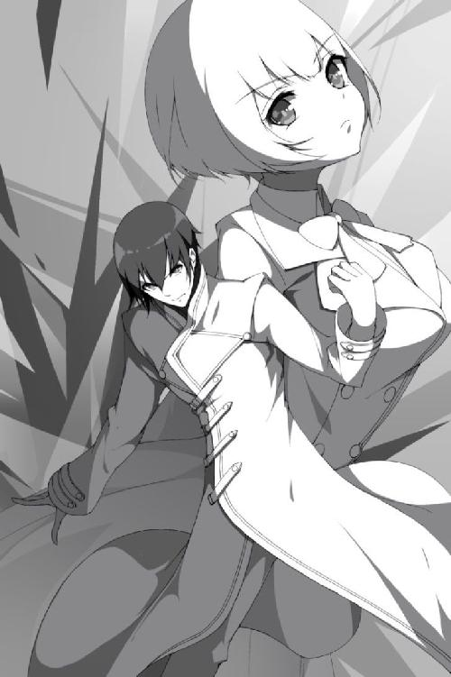
「なにが、どうなっているのだ......？」
この場の誰しもが驚愕していた。狂信化しているヨハネですら目の前の事態に困惑している。
俺は金髪で白の外套を羽織り、黄金の炎を一帯に纏っているんだ。何より、無信仰者だった腕章に、見たこともないダイヤの印が輝いている。
「王金調律？ 聞いたことがない。第四の神理？ まさか、ある訳がない！」
俺が口にした新たな神理の名前を否定する。これが神理であるはずがないと。
そもそも、神理のでき方とは思想を神域にまで高めることで神になること。この一つしかなかった。しかし俺は黄金律を本当の意味で理解した瞬間に神理にしたのだ。順序がおかしい。
これではまるで、『思想がなかった神が、思想を得たことで神理になった』かのよう。
「あなたは、初めから神だったというのか？」
信じられないが可能性はある。ヨハネ先生は怖気ついた様子を見せるも、狂った信仰心が逃げることを封じていた。
「だが、相手がなんであれ私がやることは変わらない。平和のために、異物は世界から消えるがいい！」
ヨハネの号令と神託物の咆哮が合致する。彼女の一刀が狂気と共に襲いかかる。
だが、同時に俺も動いた。
神理とは人を導く真理。そのために自分ではなく他者へと強制するものであり本来とは真逆の現象が現れる。通常ならば自分がされて嬉しいことは人にもしてあげ、嫌なことは人にもしないというのが黄金律だが、神理になったことにより、自分がされて嬉しいことを『しろ』、自分が嫌がることは『するな』に変わる。
黄金の炎が俺を包み込む。『嬉しいことをしろ』を行なうために。黄金の炎は俺を覆い強化していった。強度が、硬度が、速度が、際限なく上昇していく。
目前にまで迫る羽を持つ者の一閃。直撃を前に、一瞬でヨハネ先生の側面に移動していた。瞬間移動すら思わせる高速度に、ヨハネは目でも追えていなかった。
「そこかッ」
俺を見つけ二撃目が振るわれる。即座に刺突が放たれるが、今度は満足に振るうことすら出来なかった。
「なに！？」
黄金の炎はツルのように神託物に巻き付き、鎖のように束縛していた。攻撃を妨害され動きが鈍る。
「遅すぎるぜ」
俺は余裕で回避し元の位置に戻る。
表情には高揚も憐憫もない。ただ黄金に輝く火柱が俺を称賛していた。
ここにきて、ヨハネ先生も黄金の炎の正体に気づいたのか顔を苦くする。
黄金の炎は王金調律の体現に他ならない。敵がいれば妨害し、存在するだけで俺を無限に強化していく。
俺はさらに黄金の炎を体育館中に広げた。ヨハネ先生だけでなく加豪たちも炎にさらされるが、黄金の炎に熱はなく、むしろ温かい。光に抱かれるように加豪たちからは安堵の表情が漏れていた。それだけでなく、起こった変化に加豪と恵瑠が反応した。
「腕の怪我が、治っていく？」
「すごい！ 痛みが引いていきます！」
王金調律は他の神理とは違い二つの属性を持っている。嬉しいことをして、嫌なことはしない。強化と妨害。強化は治癒としても働き怪我を治していった。
それだけじゃない。俺は腕を天に翳し、攻勢に転じる。
「我が神造体、ミルフィアに命ずる」
ミルフィアは神託物じゃない。神託物とは神が信者に与えるもの。神が自分のために作ったものを、神託物とは呼ばない。
「はい、我が主」
俺からの呼びかけに幸福そうに返事を行ない、ミルフィアは腕を上げる。そして、神を補助するために作られた、神造体としての力を発揮する。
「異教徒に、我が理を布教せよ」
「我が主の、命ずるままに！」
神理を補助するための真理。ミルフィアが抱く絶対の信仰であり信念が力となって発現する。
思想統一。多神世界において俺しか崇めない、それ以外を認めない一神教的信仰。それがミルフィアの思想だった。そして思想を広める方法など古今東西、二つしか存在しない。
すなわち、『布教』か『弾圧』。
ミルフィアの指先から金色のベールが幾重にも重なり上空に広がっていく。波紋が伝わっていくようで宙が震えているようだ。
ミルフィアは布教を行ない金色の輪が広がる。それはヨハネ先生の頭上にも及び、瞬間、ヨハネ先生が苦悶を浮かべた。さらには神託物、巨大な羽を持つ者が小さくなっていく。
「これは、まさか、私の信仰心が低下している！？」
信仰心が強くなればなるほど神託物は強くなる。反対に弱くなればその分弱くなる。ヨハネ先生は布教の影響で、『弱体化』していた。
神託物の彼女はヨハネ先生と変わらないほどの大きさまで縮まり、攻撃はおろか、妨害の炎で身動き一つ取れない状況にまで陥っていた。
まさに格好の的。勝負の趨勢は決し、神の一撃が幕を下ろす。
「ミルフィアに命ずる」
王金調律による強化と妨害の二重属性。思想統一による弱体化と弾圧による攻撃の二重属性。二つを合わせて今や四重属性。その最後の力を振り下ろす。
「我が理に反する愚者を、弾圧せよ！」
「我が主」
命令に、ミルフィアは一度深く瞼を閉じた。黄金に輝くこの時を胸に刻み込んでおくように。俺に命じられ全うする。幸福の一瞬を噛み締め味わい尽くすように。極まった至福の時間に身を震わせて、ミルフィアは瞼を開いた。
「はい。あなたがそれを望むなら！」
前に伸ばしたミルフィアの手に黄金の粒子が収束してく。球体を作り大きくなっていく。
頭上にはいくつもの金の輪が広がり、地面は黄金の炎が覆っている。すでに、この空間そのものが金で染め上っていた。この光景に見る者は言葉を失い神の偉大さを知るだろう。
天が輝き大地が歌う。黄金の時は来て、世界は神の威光を謳う。
俺は力強く、拳をヨハネに突き出した。
「いけぇええ！」
狂気に捉われた信仰から解放するべく、黄金の輝きが異教徒を弾圧する。ミルフィアがかき集めた黄金は巨大な円形となっており、弾けるようにしてこの場を覆った。
炎熱の爆発。破壊の業火。建物や他の三人に被害はなく、俺の望むものだけを燃やし尽くす。
視界は黄金一色に染まり、俺は温かな光を全身に浴びていた。次第に音も熱もなくなっていき、自分が黄金と一つになっていく。世界と同化し、自分も黄金の一部になっていく錯覚を感じていた。
そうして、気が付けばいつしか視界から炎が退いていた。目の前には炎どころか黄金の欠片もなく、気絶しているヨハネ先生が倒れていた。神託物は消えたようでどこにも見当たらない。脅威は去り、勝負は終わった。
「終わった、んだよな......」
両手を見つめてみる。服装は元の制服に戻り髪も黒くなっていた。
終わった。ようやく追いついた実感に疲れもが襲い掛かる。
「主」
「え？」
声を掛けられ振り返る。そうか、そうだよな。俺が元に戻ったんだから、お前もそうなるよな。
俺の背後には、片足をつき胸に手を当てている、ミルフィアが頭を下げていた。表情は微笑んでいる、俺の命令を果たせた幸福を感じているように。
まったく嫌になる。お前を笑顔にしてやろうといろいろ頑張ってきたというのに、こんなことであっさり笑いやがって。
そう思っていると、ミルフィアはゆっくりと俺を見上げてきた。
「私はあなたの奴隷。ですので、いつでも命令してください」
殊勝な奴隷だ。でもなミルフィア。俺は諦めないぜ。
俺はミルフィアに近づくと、肩を掴み、跪くミルフィアを立ち上がらせた。そして、抱き締めたんだ。
「主！？ いけません！」
「いいから！」
華奢な体を今一度抱き締める。小さい背中に腕を回し、顔を胸に押し当てる。こんなにも小さな体で、ずっと俺のために働いてくれたんだよな。
「ありがとうな、ミルフィア」
感謝は一言。学のない俺にはこれが精一杯だ。もしかしたら他に相応しい言葉があるかもしれないが、あいにく、今はこれしか言う言葉が思いつかない。
はじめは抵抗を見せていたミルフィアだが、次第に落ち着き大人しくなっていった。そして俺に合せるように、背中に腕を回してくれたんだ。
「我が主、私はあなたの傍にいます。ずっと、例え来世でも」
声調は温かく、穏やかで。これがきっと黄金律で築いた、彼女の喜びなんだろう。
「我が主、あなたに永遠の忠誠を」
こうして俺を襲った事件は幕を閉じた。三人の友人と、一人の奴隷に助けられて。
手にした黄金は、胸の中でいつまでも燃えていた。
今日は日曜日の昼下がり。教室には当然生徒の姿はなく職員室にも人はぜんぜんいない。ここにいるのは俺と、目の前で座るヨハネ先生との二人だけだった。
ヨハネ先生の席は窓際で日差しをもろに受ける。太陽の光と同じくらいにヨハネ先生の微笑が映えるが、俺は少し緊張しながら隣の席に座っていた。いや、自分が座っている席が教師だと思うと気が気がじゃないっていうかさ。それに職員室という場所も落ち着かない。
まあ、固まってても仕方がない。なんか話でもするか。
「そういえば、あの事件が起こってからだいたい一週間くらいだよな。先生はお変わりなく？」
「ええ、それはもう」
それで会話を始めたわけだが、話題として挙がるのは当然あの事件のことだった。ここに俺がいるのも、間接的には事件があったからだ。
ヨハネ先生が狂信化した事件から一週間ほどが経った。それからは平穏な学校生活が続いているが、忘れるには重すぎる過去だ。
「いやー、情けない話、今回の件については宮司さんたちにはひどい思いをさせてしまいましたね。まさか私自身が狂信化とは。そこまで思い詰めていたつもりはなかったのですが、やれやれ、なってみないと分からないものだ」
事件が起こる前のヨハネ先生の様子はどこか悪かったが、今思えば狂信化の予兆だったんだろうか。
まあ、いろいろあったが無事に済んで良かった。そんなヨハネ先生に俺は意地悪っぽく言ってやる。
「昔話みたいに気楽に話しやがって。こっちは殺されかけたんだからな？」
「いえいえ、とんでもない。申し訳ない、本当にすみませんでした。反省していますし、私だって二度とごめんですよ。あのままなら私は完全に理性を失くし狂騒していたでしょう。そうなれば私の人生はお終いでした。まったく恐ろしい......。宮司さんには、助けられた、ということになりますね」
「やったのはミルフィアだがな」
ニッコリ笑うヨハネ先生に俺は窓に視線を移す。ここにはいないミルフィアを思い浮かべ、彼女の行いに感謝した。
狂信化は信仰心が理性を破るほど増大した時に起こる現象だ。ならば信仰心が低下すれば狂信化も収まる。ミルフィアの布教によりヨハネ先生の信仰心は下がり、結果狂信化から回復した。
「幸いヨハネ先生が狂信化したのを知っているのは俺たちだけだからな。黙ってりゃ済む話だし」
ひどい目には遭ったが責める気にはなれない。ヨハネ先生の狂信化の原因が俺のためだった、という気持ちもある。他の三人もそれは汲んでくれていて、誰一人反対する者はいなかった。まったく、本当にいい奴らだよ。
「いやいや、ありがとうございます宮司さん。いえ、宮司さま〜」
「止めろぉ！ 離れろ気持ちわりい！」
いきなりヨハネが俺の手を取り頬ずりしてきたのだ。しかし気色悪いだけなので強引に押し返す。頬ずりしてきた片手をズボンでゴシゴシと拭きつつ、確認するように睨む。
「その代わりだ、俺たちは黙っとくが」
「ええ、条件ですね。それも滞りなく。宮司さんもすでに合否は知っているのでしょう？」
頬ずりを拒絶されたヨハネは口先を尖らせてくるが、俺からの問いに表情を戻す。それは笑顔で、条件という言葉にも嬉しそうだった。本来なら引き換えの条件なんて嫌なことだろうに。
だが、自分で押し付けておいてこの条件、ヨハネ先生が笑うのも分かる。
「ミルフィアさんの編入手続のこと」
ミルフィアを学園の生徒にすること。それが俺の出した条件だった。
「ミルフィアさんを正式に生徒にしてくれ、ですか。優しいですねえ、人のため、ですか？」
「うっせえよ」
ヨハネ先生の眩しい笑顔から顔を逸らす。なんというか恥ずかしい。
「宮司さんは素直ではないですね〜。ですがまあ、受かって良かったですよ。受かるとは思っていましてが、ミルフィアさんはあなたよりも不明な点が多いですからね。もしやと過りましたが、ふふふっ」
ヨハネ先生はミルフィアの入学について話すが、そこで面白いことでも思い出したのか、抑えきれないように笑い声が零れ出す。
「宮司さん、あなたも見たでしょう。ミルフィアさんを担当した面接官の反応を。私、内心では笑いを堪えるのが大変でしたよ」
「そりゃそうだ」
ヨハネ先生はずいぶんと楽しそうだが、俺は天井を見上げ振り返る。なんていうか、あれは面白いというよりも面接官には同情するぜ。
「鉄パイプをシャープペンの芯のようにへし折ったら誰だってビビるぜ」
「ミルフィアさんの神化を考慮すればまだまだ可愛いものですがね。しかし、それで神化の高さを評価され合格となりました。これでミルフィアさんも晴れて神律学園、特別進学クラスの生徒です。さらには優秀な信仰者として特別優遇が適用され、奨学金の返済は免除。こういう形に落ち着いてくれてホッとしています」
「それは、まあな」
親の経済的な事情もあるのでこうでなければミルフィアの入学は実現出来なかっただろう。これ以上にない条件で入学出来たことに安堵している。
「それよりもですよ宮司さん。私はむしろあなたの方が心配でした。最近は大変だったでしょう。正門には連日記者が押し寄せていましたからね」
「それを体張って防いだヨハネ先生一同もな。もしかして、俺また迷惑かけてる？」
「まさか」
不安になって聞いてみるが、ヨハネ先生は明るく否定する。そのまま視線は俺の腕章へと注がれた。
俺も追いかけるように見つめてみる。そこには、黄色のダイヤが誇らしげに刻まれていた。かつては黄金に輝いていたが、今では黄色に落ち着き大人しく左腕に垂れている。
「第四の神理、王金調律。騒ぎも大きくなるわけです」
「俺としては理解出来ないね。ほっとけばいいじゃねえかよ」
「まあまあ、そういうわけにもいかないでしょう。これは大ニュースですよ？」
三つの神理が広がる天下界で新たな神理が現れた。しかも無信仰者だった宮司神愛ということで、このことは大々的に報道され世界中が注目していた。この出来事に大きな波乱が起こるんじゃないかと不安も抱いたが、しかし現実としては穏やかなものだった。
「最初はどうなることと思いましたがね。ですが、現れたところでどうしようもないのが現状で良かったですよ。学園側としても害があるわけでもないですし、このまま様子見、という方針で決まりました。各国も警戒対象としてはいるみたいですが、特にどうこうというわけではないらしいです」
「そっか。そいつは何よりだ」
とはいえ気が重い。背もたれに体を預けギギギと軋む音が響く。ため息を零し、疲れが見える声が空気に溶ける。
やれやれだが、そんな俺へヨハネが改まって質問してきた。
「それで宮司さん。一つお伺いしたいのです」
「んー？」
起き上がる気力もなく緩い声で返事をする。たいへん失礼な態度だが、ヨハネは咎めず、それよりも重要そうに話かけた。
「ミルフィアさんは、あなたがこの世界を創った神だと言っていました。このことはまだ誰にも知られていませんが、私はミルフィアさんが嘘を言っているようには思えませんでしたし、そして、あなたが神理を発現させたことの裏付けにもなっています。宮司さんは、このことをどう考えているのですか？ ずばり、自分が神だと、そう思いますか？」
「............」
ヨハネからの質問にしばらく考える。先生の疑問は尤もで、重大という意味では第四の神理が霞むほどだろう。天下界の常識を打ち崩す、まさに全世界の大問題だ。
俺はじっと考えていたが、結論が決まりがばっと体を起こした。その勢いのまま、けれど学校で話す気軽さで話した。
「ハッ、勘弁してくれよ。無信仰者の次は神様だって？ おいおい、冗談だろ」
両手を広げ鼻で笑ってやる。そこに構えも緊張もない。
「俺はそんな風には思ってない。俺は人間さ。普通でいい。普通がいいんだ。有名人でも偉い人でなくてもいい。楽しい友人がいて笑えれば、それだけでいいんだ。嫌だぜ？ 何が嬉しくて神様になってお前らの世話しなくちゃならないんだよ」
「ははは」
ヨハネ先生が笑う。神様なんかになりたくないと、ここまで言われればむしろ爽快だろう。
「それに、ミルフィアの言ってることが意味不明なのは前からさ。本気にしないでくれ」
「分かりました。宮司さんがそう言うのでしたら、私もそう受け止めましょう」
それで話は終わり立ち上がった。俺がこの日に職員室を訪れた理由は今後の自分の処遇を知るためで、それを果たした以上用はない。
「それじゃ、確認したいことは終わったしそろそろ行くわ。実は人を待たせてるんでね。じゃあな、ヨハネ先生」
気楽に挨拶してから扉に向かう。扉を開け出て行こうとするが、そこで頼まれごとがあったのを思い出し足が止まった。
「ああ、それと三人から言伝を預かってたの忘れてたわ。会う度に謝るのは止めてくれ、接しづらい、だとよ」
あれだけのことをしてヨハネ先生も負い目があるに違いない。謝罪したい気持ちは分かるが、好きな教師から毎度謝られるというのも心苦しい。それだけ加豪や恵瑠、天和もヨハネ先生が好きなんだろう。
だが、良かれと思っていたヨハネ先生としては心外だったようだ。
「そんな！ 私は皆さんに対して------」
「それともう一つあったわ。言い訳は止めてくれ、話が長くなる、だ」
「......それは誰からのですか？」
まるでこうなることを予期していたかのような言伝にヨハネ先生の眉が曲がる。そんなヨハネに向かって、俺は悪戯っぽく笑ってやった。
「俺からのさ」
そして、今度こそ職員室から出て行った。扉を閉めるが、その間際、ヨハネ先生の独り言が聞こえてきた。
「まったく、教師をなんだと思っているんですかねえ。ですが、初めて会った時よりもいい顔をしている。良かった良かった」
ああ、まったくだ。そして、ありがとうな、ヨハネ先生。
俺は陽気な気分で廊下を歩く。玄関で靴に履きかえ外に出る。向かう先は正門であり、足を伸ばせば、そこには四人の女子生徒が会話する姿が見えてきた。
その内の一人。それは、皆と同じ制服姿のミルフィアだった。新品の制服に袖を通し、三人の話を丁寧に聞いている。
「それよりも聞いてよミルフィア、私は恵瑠のために頑張ったのに、恵瑠ったらすぐに逃げ出すのよ？」
「だって、無理ですよ〜」
「ねえ、ミルフィアさんって動物なにが好きなの？」
「えっと、私は......」
「おいミルフィア、答えなくていいぞ」
なにやら危ない質問が聞こえてきたのですかさず声を掛ける。俺からの呼びかけにミルフィアは驚いたように振り返った。
「主！？」
「神愛遅い！」
「神愛君、お疲れ様です」
「宮司君......、どうして邪魔するの？」
同時に三人の声も投げかけられる。とりあえず三人は無視して、俺は緑の少女に近づいた。
「お前、ミルフィアを巻き込もうとするんじゃねえよ」
「そうね。これは誰も立ち入ることの出来ない、二人だけの秘密の関係の方がいいわね」
「秘密の関係！？ 主！ 秘密の関係とはなんですか！？」
「ちげえええええ！」
紛らわしい言い方するんじゃねえよ、それと俺は違うって言っただろうが！ 天和は相変わらずだがあとでしっかりと説明しておかないとな。
「ところでさ神愛、気になってたんだけど」
「ん？」
すると加豪が俺に聞いてきた。
「事件があったあの時。どうして体育館に現れたのよ？ よく分かったわよね。まあ、それで助かったんだけどさ」
そう言いながら加豪はどこかもじもじしていた。
「あー、あれか」
俺は思い出す。ヨハネ先生が三人を体育館で襲った時、間一髪というタイミングで俺は現れたわけだが、それには理由があったのだ。
「恵瑠と天和と別れてから泣いたせいか喉が渇いてな。体育館の近くに自販機があること思い出して行ったんだよ。そしたら中から女の悲鳴が聞こえてきたから、なんかエロいことでもしてるのかと思ってな、木を登ってみたんだよ」
「ちょっと待って！ あんた落ち込んでたんじゃないの！？」
「しゃーねえだろ、気になっちまったんだから！ それで見てみればお前らが大ピンチだったから飛び込んだのさ」
「サイテー、聞かなきゃ良かった」
ヒーローよろしく登場した俺だがそういう経緯だった。加豪はなんだか落ち込んでいる。仕方がないだろ、そう不貞腐れるなよ。
「それよりも皆さん！ これから、ボクたち遊びに行くんですよね！？」
と、今度は恵瑠が大声で呼びかけてきた。実はこれから皆で遊びに行く予定になっているのだが、そのことを熱気の帯びた声で確認してきた。
「そうよ」
「うをおおお！」
加豪の返事を聞いて何やら恵瑠があらぶっている。ビームでも出すのかこいつ？
「それではさっそく行きましょう！ お洒落な喫茶店でお話してカラオケで歌って最後には皆でプリクラを撮るんですよね？ 分かります！」
「待て待て待て、その女子が女子による女子のための女子会コースに、男である俺が一人っきりで参加するのか？」
「行きましょう！」
「聞けよ！」
逸る気持ちを抑えきれず小動物は走り出してしまった。その後を慌てて加豪が追いかけ天和も自分のペースで歩き出す。すっかり出遅れてしまい、やれやれと頭を掻いた。
「仕方がない、俺たちも行くか」
「はい、主」
隣から返事が聞こえる。振り向けば、そこにいるミルフィアと目が合った。
制服を着たミルフィア。皆と同じ服装で、これからは学校でも消えていなくてもいい。ずっと皆と一緒にいられるようになったんだ。普通の女の子として学校にも通えるし、友達のように皆と話すことも出来る。
そしてミルフィアの腕章には、俺とお揃いの黄色のダイヤが印されていた。
「なあ、ミルフィア」
隣にいる少女は、とびっきりの美少女だという点を除けばどう見ても普通の女の子だ。気品のある佇まいと可憐な瞳で見上げてくるミルフィア。
そんな彼女に、俺は、ふと聞いてみた。
「俺と、友達になってくれないか？」
言葉は自然と出てきた。今なら聞ける気がしたんだ。
一緒に通学して、同じクラスメイトで、ずっと傍にいる女の子。学園に通うミルフィアはもう普通の女の子と変わらない。加豪や恵瑠と天和とも、友達のようにこれから遊びに行く。
果たして願いは叶うのか。
けれど、ミルフィアは寂しそうに笑うんだった。
「それはなりません」
断られた。まるでフラれたみたいだ。いや、フラれたのか。ちくしょう、それでも可愛い。
ミルフィアは左胸に手を当てて、申し訳なさそうに笑っていた。
「私は主の奴隷。ミルフィアは、ずっとあなたにお仕えいたします」
穏やかで、優しい声が俺の願いを否定する。
「............ハッ」
ミルフィアの答えに、けれど俺は笑った。それは皮肉った笑いではなく、気持ちの整理がついた笑い声だった。俺は晴れた表情で相変わらずの隣人を見つめる。
「ああ、そう言うと思ってたよ」
ミルフィアは変わらない。初めて出会った時からずっと。きっとこれからも自分は奴隷だと言って接してくるのだろう。
降参だ。でも、それは今はという話。すぐにでは無理でも、いつしか友達になってやる。
俺は決意を改める。だというのに、
「我が主。私はずっとあなたの傍にいます。そこであなたを支えます、永遠に」
誇らしそうにそう言ってきた。金髪がきらりと光り、青い瞳が真っ直ぐに俺を見つめている。
「......ったく、知ってるよ」
やれやれ、だいぶ先になりそうだな。
何度も聞いた台詞に投げやりに答えて、俺は三人の後を追いかけた。続いてミルフィアも歩き出す。
まるで友達のような奴隷を引き連れて、俺はこれから友達と遊びに行く。頭上に目線を向ければ澄み切った青空がどこまでも広がっていた。
この度は【天下界の無信仰者】のご購入ありがとうございました。作者の奏せいやです。本作はＤＳ文庫の記念すべき第一作となります。お〜、パチパチパチ。この作品をこうして出版できたことにひとまずホッとしています。よかったよかった。しかし、本作は校正や編集なども自分一人で行っていますのでもしかしたら不備がないか不安です。すみません、嘘つきました。やっぱり不安です汗。
もともと暇さえあれば物語を考えるのが好きな自分でした。内容は少年漫画のようなバトルものがほとんどでしたね。それはいつしか形にしたいという欲求に変わりました。美食家がいつしか自分で料理を作りたくなるように自分も読むだけでなく作る側になりたい。そう思うのは自然な流れだったように思います。それがまずは一作、こうして形になりました。
夢の一歩が動き出しました。
しかしそれは単なる一歩に過ぎません。まだまだ第二、第三と足を踏み出し、一歩を重ねていかねばなりません。さらに、その一歩で読んでくださる方に面白いと思わせなくてはならない。これは大変なことです。プロとして活躍している作家さんでも容易なことではないでしょう。せっかくデビューしても数年で筆を折ってしまう作家さんたちもいると聞きます。
この道は長い。なにより険しい。この道を何年進んでいくことになるか、それは分かりません。けど、走り続けることは難しくても、歩き続けることならできるはず。
自分のできることを続けていくこと。
限界に向かって全力を出していくこと。
そしてなにより大事なのが、この道を諦めず続けていくこと。
この道を長く長く進んでいくことになります。天下界の無信仰者や他の作品と一緒に。自分はまだまだ最初の一歩を踏み出したひよっこに過ぎません。これらの作品と共に成長していきたいと思っています。
そして、できれば読者の皆様方にその成長ぶりを見守っていただければ、これ以上にない幸せです。
天下界の無信仰者はこれからも続いていきます。この作品が次どのような一歩を歩み出し、どのように成長していくのか。私自身楽しみであり不安でもあります。
この道の先に待っているものがなにかは分かりませんが、これだけはお約束できます。なにがあっても諦めないこと、この道を進んでいくこと。
私、アスファルトから生える雑草並みにしぶといんですよ？笑
最後になってしまいましたが、本作に素晴らしいイラストや挿絵を描いてくださったｃ．ｃ．Ｒさん。出版に際しいろいろと励ましの言葉をくださった皆さん、ありがとうございました。とても感謝しています。
そして重ね重ね、本作を読んでくださった読者の皆様方、ありがとうございました。小説というのは作者と読者があってこそ成立するものです。本当にありがとうございました。
この小さな一歩がいつしか大きな足跡になることを祈って。
お疲れ様でした。
集合
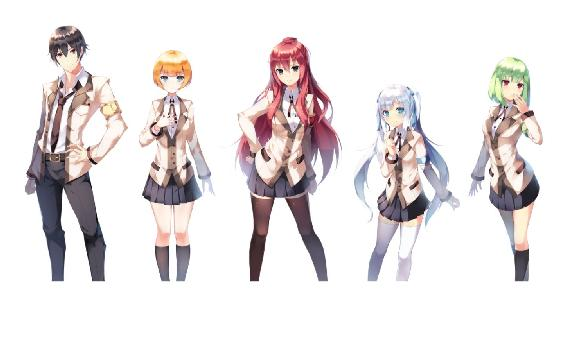
表紙ラフ
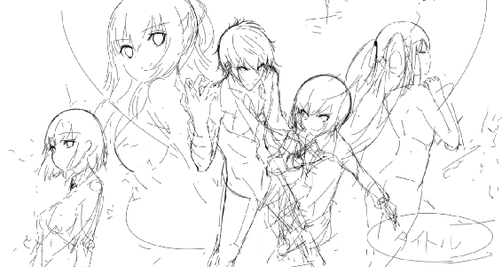
初期キャラデザイン
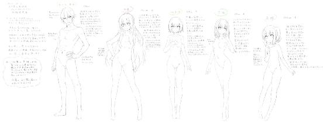
第二キャラデザイン
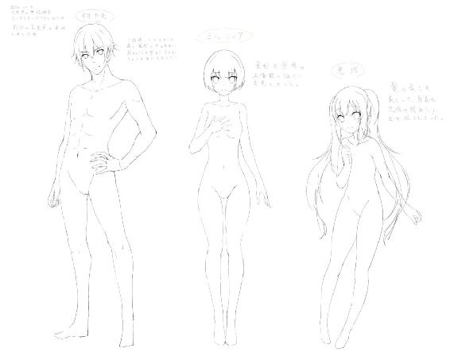
神愛表情ラフ
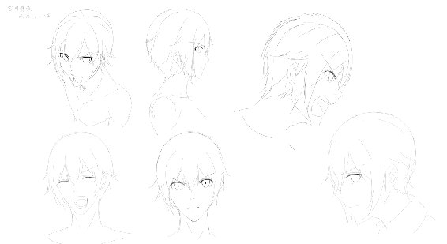
神愛衣装デザイン
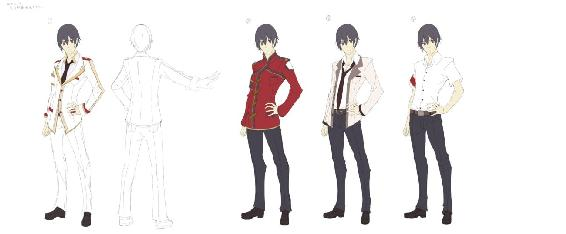
神愛デュエットモード
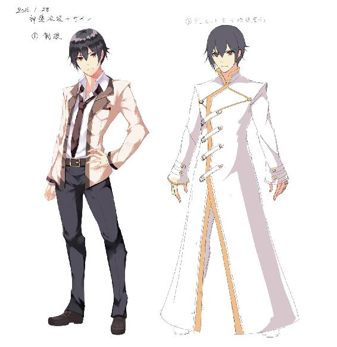
ミルフィア表情ラフ
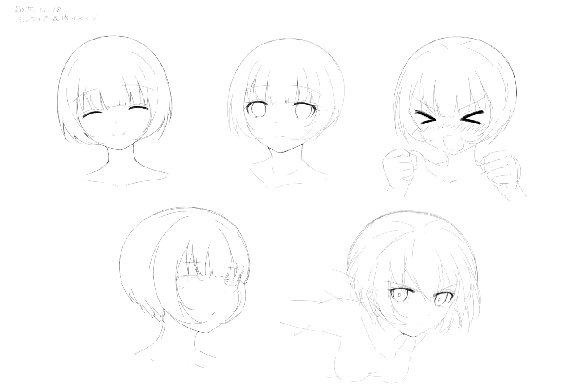
ミルフィア衣装デザイン
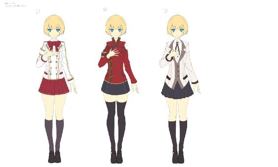
ミルフィアデュエットモード
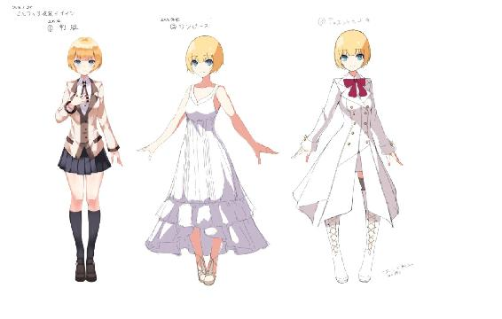
恵瑠表情ラフ
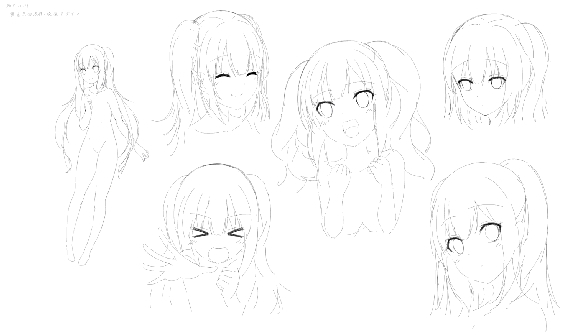
加豪表情ラフ
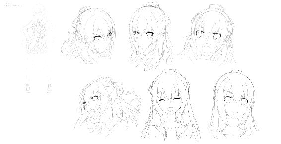
天和表情ラフ
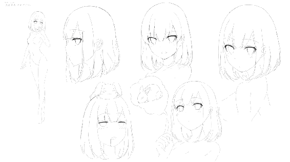
イラスト
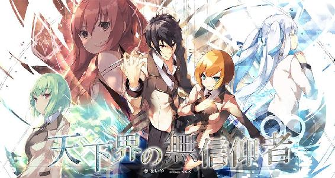